| 世界最高の日本文学～こんなにすごい小説があった～ | |
| 許 光俊 | |
| (2005) | |
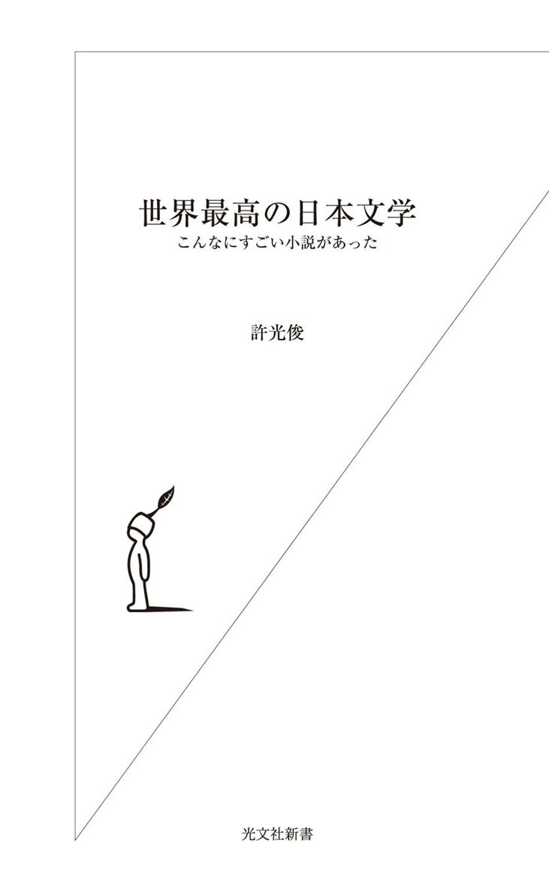
これは、あなたを銀座の最高級のすし屋に連れて行くような本だ。
こう書き出すと、「あれ？」と思われる方もいらっしゃるかもしれない。そう、同じことを私はちょうど三年前にも書いた。やはり光文社新書の『世界最高のクラシック』という本の中で。
あれこれしちめんどくさい話は適当にしておいて、とにかくおいしいものを次々と食べてみる。「何だかわからないけど、すごい！」という経験を積み重ねる。そうしているうちに、自分ならではの物差しができてくる。自分の好みがわかってくる。そんな感じでクラシックを聴けばいいんじゃないかというのが『世界最高のクラシック』という本だった。
世の中には数え切れないほどＣＤがある。どれを聴けばいいのかわからない人はたくさんいるみたいだ。『世界最高のクラシック』は、著者の私が驚くくらい好評で、あちこちのＣＤ店で本を指さしながら「これをください」と言うお客さんが現れたという。
同じことを、文学でもやってみたいなと常々思っていた。日本で出版されている本の数ときたら、もちろんＣＤの比ではない。私は本を読むのが商売みたいなものだけど、大書店に行くたびに「これも読まなくちゃ、あれも読まなくちゃ」とストレスを感じるほど。「おまえの読んでいない本がこんなにあるぞ」と脅されているみたいで、近頃は書店に行くのが気が重くなってしまった。
たぶん、あまりに本が多すぎるから、読書する人が減っているのだ――みんな本当は思っているはず。「すごい小説を読んでみたい」「感動的な物語が読んでみたい」「知らない世界と出会いたい」と。だけど、本が多すぎる。どれを読めばいいか全然わからない。今どき漱石でもないだろう。仕方がないから、話題の本を読んでみる。ベストセラーを買ってみる。芥川賞作品を手にとってみる。でも、なんかピンと来ない。そのうち全然読まなくなってしまう。だから、電車に乗っても読書の代わりに携帯でメールを打ってしまう。それではあまりにもったいない。おもしろいものはいっぱいあるのに。だから、あれこれの作家のあれこれの作品をこの本では紹介する。いろんな傾向がある。気に入った作家がいたら、他の作品も読めばいい。
本書のターゲットは日本文学だ。外国の文学にもおもしろいものはいっぱいあるけれど、今回はパス。まずはなじみやすいところから。正直言って、日本文学は、世界的に見ても相当いい。いろいろな作家がいて多彩だし、ユニークな傑作がたくさんある。せっかく日本語ができるのだもの、おもしろい日本文学を読まないなんて、宝の山を素通りするようなもの。本書を書きながら、「どうして、これが外国語に翻訳されないんだろう、もったいない」と何度も思ったほどなのだから。
ただ、日本文学とひとことで言っても、『古事記』あたりから現代に至るまで、ざっと一五〇〇年近くの歴史がある。小説も詩歌もたくさんある。だが、本書では、小説、それもあまり長くないものに絞った。なぜって、今、私たちの生活のペースは実に速い。長い本を読み切るのはなかなかたいへん。だから、まずは手軽な大きさの、一気に読める作品を読んでみる。そう、まさに一口で食べられるすしと同じ。とろを食べてみようかな、次はひらめがいいな、いかもおいしそうだぞ。そんなふうにあれこれ楽しめるのがすしのいいところ。それと同じで、いろいろな作家のいろいろな小説を読んでみたい。
登場する小説家は、森鷗外とか三島由紀夫とか川端康成とか、有名な人たちが大半だ。でも、それだけではない。教科書には出てこないような人たちも含まれている。みな、明治から昭和の作家たちである。今、生きている作家は入っていない。
「え？ 古いものばっかり？ それじゃあ、読む気が起きないよ」という人もいるかもしれない。それがそうではないのだ。私の考えはむしろ逆だ。ちょっと昔の小説のほうが現代の小説よりもおもしろい、そう思っている。「へえ、昔の人はこんなことを考えていたんだ！」という驚きがあるから。現代の感覚が集約された最新作を読んでも「なんとなく自分も知っていること、気づいていること」ばかりが書かれていてつまらない。それより、古いもののほうがもっと発見があってスリリングだ。論より証拠、本書に出てくるものを読んでみてください。現代のお兄ちゃん、お姉ちゃんが書く作品とはひと味もふた味も違いますからね。
で、どんな作品を選んだかというと――文学史的な意味とか重要度とか、そういうことは全然関係ない。ともかく、私が読んで「うわっ」とか「いやはや」とか「マジ？」と、感嘆や驚きの声が出た作品ばかり。中には「うえー、よくやるよ」とあきれたものもある。いずれにしても読んだあとで友達に「ねえ、あれ読んだことある？（いろいろな意味で）すごいよね！」、そう言いたくなるような作品ばかりだ。もちろん、手軽に読めるよう、全部、文庫本で買えるものばかり。
私がここまで言っても、「なんだか縁遠そう。国語は苦手だったし」と思う人もいるかもしれない。が、心配ご無用。かく言う私も、自慢じゃないが、学校では国語の成績が悪かったクチなのである。漢字を覚えるのが嫌い、熟語を暗記するのも嫌い、作文もめんどくさい、古文はまったく興味なし。というわけで、主要教科の中で圧倒的に嫌いなのが国語だった。文学青年などではからっきしなかった。なのに、どこをどう間違ったのか、今は文学を教えていたりするわけだし、こうして日本文学の本を書くのだから（まあ、学校の国語を怠けていたせいで、今でも黒板に漢字を書くとき、「あれ、どう書くのだったっけ」と戸惑うことがままあるのだが）。
つまり、本書は解説書ではない、ということになるだろうか。解説書でも研究書でも批評でもなく、「お客さん、いい子いますよ」と声をかけるキャバクラの呼び込みみたいなもの。「ちょっと信じて、この店に入ってみるか」、そう読者が思ってくれれば、私としてはしめしめである。
本書は最初から最後まで連続して読むように流れが作ってはあるが、おもしろそうな章から読んでいただいてもよいのは当然のことだ。
目次
釈迦に説法かもしれないが、念のため、小説を読むコツを記しておこうか。
楽しく小説を読むコツ、それはつまらない作品は読まないことである。
つまり、「なんだかこの作品、退屈だな」とか「この作者、気に入らない」と思ったら、さっさと読むのをやめてしまうことだ。無理して最後まで読むうちにおもしろくなる、そういうことだってなくはないが、不幸にして最後までつまらないと、無駄なことをした気がしてしまう。そんな本は、数年後には読んだことすら忘れてしまうのがオチだ。それより、途中で放り投げて、新しい本を読み始めよう。性格の不一致なら、無理をしてつき合い続けてもダメなのと同じ。
予備知識は基本的には必要ない。作家たるもの、「オレ様の人生をよく調べた人間じゃないと、作品は理解できない」なんて思っていないはずだ。何々主義とか、何々運動とか、師が誰だったとか、特に考える必要なし。
そうだな、あなたが乗っている電車が突然大雪か何かで止まってしまった、とでもしよう。退屈だから隣の人とお話ししてみるか。そんな気持ちで小説を読めばいいと思う。ちょっと話してみて、つまらなかったら話すのを止めればいい。でも、意外にもおもしろいかもしれない。とってもおもしろかったら、電車を降りたあともつき合えばいい。お互いがどういう人間か、自己紹介など野暮。そんなことをしなくても、話しているうちに、どういう人だかわかってくる。小説だって同じだ。作者がどういう人か調べなくても、読んでいるうちに何となくわかってくる。だから一期一会で出会ったと思って、作品と会話するつもりで読めばいい。「それっておかしい」「それ最高」「何言っているかわからない」「そうそう」、こんなふうに心の中で合いの手を入れながら。
心の中での本との対話、それが読書ってことだ。人間が他人を誤解するように、小説を誤解してしまうこともあるだろう。でも、そう誤解するのがその人の本質。わかる、わからないは気にすることもない。
入試や学校教育の弊害のせいで、小説には決まった解釈があると思われがちだ。でも、そんなことはまったくない。あなたが好きなように読めばいい。たとえば、作者はこの登場人物をよい人間として描きたがっているようだけど、どう考えても悪人じゃないか。そんな感想を持ったっていい（実はこういう例はけっこうあるのだ。本書では武者小路実篤の章を見よ）。
ゆったり会話ができるような快適なペースで読みましょう。本書で紹介するのは長くないものばかりだから、気に入ったら、再読してみましょう。再読すると、絶対に発見があるから。
画家岡本太郎の言葉を引いておこう。これくらい簡明に、しかも説得力をもって芸術体験、文学体験を定義した人も珍しいだろう。
岡本はトルストイの本をいろいろ読んだが、細かいことなどいちいち覚えていないし、どこに感動したかなど記憶にないと言う。
「ぼくがいま記憶にないといったのは、感動した瞬間、こちらの血肉になるからだ。だから、誰がどういうことを言ったかというのは問題じゃない。感動した瞬間からぼくの血肉になる。それはぼくの問題なんだ」（『太郎に訊け！３』青林工藝社）
そして、もちろん、本書はこのような体験のための、このような問題のための本なのである。食べたすしが消化されてあなたの栄養になる、そのように読書できれば最高だ。
せっかくすしのたとえ話をしたから、どうせなら、すしをめぐる話から読むことにしようか。
岡本かの子という人が書いた、その名も『鮨』（一九三九）という短編だ。今、手元にある新潮文庫で二〇ページ強という作品。電車の中でもすぐに読めそうな長さ。
でも、短いからといって侮ってはならない。ぶっちゃけた話をすると、これは私がどうにも愛してやまない作品である。全然難しい内容ではない。読めばわかるが、ややこしい表現を使ったり、意味ありげなほのめかしをしたり、そういう見るからに技巧的な作品ではない。いわゆる文豪らしい、いばったような文章でもない。あとで本書にも登場するが、いかにもインテリの勉強家といった感じの三島由紀夫あたりの作品に比べると、無防備なくらい、素朴に見える。
でも、すごい。淡々と書いているだけのようで、気味の悪い力がある。人間や人生の深いところに、突き刺さってしまうような怖さがある。そして、何だかものすごく悲しい。私はときたま読み返すたびに、心を動かされる。
いいすし屋では、最初はひらめか何か、白身魚を出されることが多い。一見、淡泊で上品な薄味だ。とろのように誰もがうまいと喜ぶわかりやすい味ではない。けれど、わかる人にはわかる複雑で繊細な美味。この『鮨』はそんな文学かもしれない。まだ、その滋味（ゆっくりと味わうとわかる深い味のこと）を楽しめなくてもいい。ただ、こういうのがあるというのをとりあえず知ればいい。どうせ本書では後ほど、大とろのようなこってりとした作品が目白押しだから。
さて、岡本かの子は、有名な画家、岡本太郎の母親である。だんなさんはこれまたかつての有名な漫画家、岡本一平。岡本太郎が有名な今でこそ、「かの子は岡本太郎の母親」と書けるが、昔は逆で、「岡本太郎は有名な漫画家岡本一平と、小説家かの子の息子」と説明されていた。特にお父さんの一平のほうは、一時は国民的な人気を博し、誰でも知っているほどの存在だった。
岡本太郎の一番知られている作品は、大阪万博の際に作った『太陽の塔』だろうが、あれを見てもわかるように、太郎は日本の常識をはるかに踏み越えた自由奔放な芸術家だった。「芸術は爆発だ！」という言葉があまりにも有名になったため、一種のショーマン、キワモノのように見なされているふしもあるが、とんでもない。訳もわからず、エネルギーの噴出するままに生きていたわけではないのだ。太平洋戦争勃発前にはパリの大学で学び、ジョルジュ・バタイユなど、当時の最高の知性とも交わった知的な人間だった。
こんな彼の姿を知るには、彼が書いた本を読んでみるといい。文庫本になっている『芸術と青春』『今日の芸術』（光文社）もいいし、人生相談『太郎に訊け！』第１─３巻（青林工藝社）も非常におもしろい。後者は爆発人生相談、激突人生相談、熱血人生相談と題されているが、通念と違うことでも、実に明快にしっかりと理由づけて語っている。これらを読むと、岡本太郎は変わり者の芸術家どころか、稀に見るきわめてまともな人間だったことがわかる。これだけ自分の考えを明晰に、しかも軽薄でなく語れる日本人はあまりいないだろう。
そんな芸術家を生むだけあって、母の岡本かの子も平凡をはるかに逸脱した人間だったのである。彼女がどれほど不思議な人間だったかは、いろいろな証言がある。自分のことを心底美人だと信じ込んでいたとか（これが是か非かは、写真でお確かめください）、目を疑うような趣味の服装をしていたとか、エピソードには事欠かない女性だった。けれど、一番の驚きは、夫だけでなく、愛人の男までひとつ屋根の下で暮らしていたことだろう。夫の一平は、かの子を崇拝しており、彼女の幸福のため、また彼女の文学のため、愛人を家に住まわせることまでしていたらしいのだ。そして、昔はなかなか行けなかったヨーロッパ旅行に一平が招かれたときは、かの子、太郎、それに愛人まで連れて出かけたのである。いやはや、なんと鷹揚な。
しかし、まあ、作者がどういう人間だったかは、とりあえず置いておこう。実は私はこうした作家の人生や交友関係といったものに、とんと興味がない。興味深い話を聞けばおもしろがるが、それよりも「さっさと作品を読ませてよ」と思ってしまう。だいたい、作品より生涯のほうがおもしろい作家なんて、最低ではないか。
『鮨』の舞台は、下町と山の手の境目で、坂や崖が多い地域にあるすし屋だ。周囲は静かで、表通りの喧噪に疲れた人が安らげるような場所。店名は「福ずし」という。
お客はリラックスして食べたり、飲んだりしている。一流店で修業した主人の腕は確かだが、緊張して料理を味わうような敷居の高い店ではない。
この主人にはともよという娘がいる。女学校を卒業し、今は皿を運んだり店の手伝いをしている。お客と言葉をかわしたりもする。店の看板娘である。「無邪気に育てられ、表面だけだが世事に通じ、軽快でそして孤独的なものを持っている」（新潮文庫版より引用。以下同）とあるが、とりたててきれいとは書いていない。特に美人とは言えないけれど、若くて初々しいのがそれなりに悪くない、平凡な娘のように思われる。
さて、この福ずしの常連に湊という男がいた。年齢は五〇過ぎ、表情には憂愁が感じられる。「鋭い理智から来る一種の諦念といったようなものが、人柄の上に冴えて、苦味のある顔を柔和に磨いていた」。つまり、そんじょそこらの男たちよりも、頭がよくて、物を知っている。それゆえに、人生の悲しい面、嫌な面もよくわかっていて、達観しているように見えるというのだ。
奥さんはいない。職業もわからない。だが、その風貌ゆえ、店では誰ともなく先生と呼んでいた。すしの食べ上手でもあった。この人は、いつもひとりで来て、静かに食べては帰っていった。「仏蘭西髭」にステッキというかっこうからしても、渋くてダンディな初老のおじさんと言ったところか。
いつからか、ともよは湊にごくごく淡い気持ちを抱くようになった。恋心とも呼べないような、本当にはかない処女の気持ちである。なんとなく気になるのだ。彼が一度も自分を見てくれないと寂しい。だからといって、どうこうしたいわけではないのだが。
偶然のように顔を見合して、ただ一通りの好感を寄せる程度で、微笑してくれるときはともよは父母とは違って、自分をほぐしてくれるなにか曖昧のある刺戟のような感じをこの年とった客からうけた。
ともよは彼に無視されるのがつまらなくて、自分でも知らないうちに物音を立てて彼の注意をひいたりする。
そう、やはりこれは幼くはあるが、恋に違いない。ともよは、湊が他の客に愛想よく接している姿を見ると、焼き餅を焼く。
ともよは、こういう湊を見るのは、あまり好かなかった。あの人にしては軽すぎるというような態度だと思った。相手客のほんの気まぐれに振り向けられた親しみに対して、ああまともに親身の情を返すのは、湊の持っているものが減ってしまうように感じた。
湊がつまらない人たちと仲良くしている様子が安っぽく感じられ、彼にはふさわしくないように見えるのだ。若い恋は、相手に理想であってほしいと願うものである。それにむろん、ともよは湊を独占したいのだ。
湊がやや多く酒を飲むときなどは、「お酒、あんまり呑んじゃ体にいけないって云ってるくせに、もう、よしなさい」と杯を奪う。むろん、湊もともよの気持ちに気づき、憎からず思っている。が、積極的に何かしようという気はさらさらない。
ある時、ともよは父親に命じられて、虫屋にかじかを買いに行った。かじかは蛙の一種だが、夏になるときれいな鳴き声を出すからだ。
すると、湊が虫屋で買い物をすませて帰るところに出くわす。彼は西洋の観賞魚、髑髏魚を買い求めたところだった。
「先生ってば」
「ほう、ともちゃんか、珍しいな、表で逢うなんて」
（中略）
「先生のおうち、この近所」
「いまは、この先のアパートにいる。だが、いつ越すかわからないよ」
近所にはお茶を飲む店もなく、ふたりは空き地にすわって、話をする。ころあいは初夏。新緑が美しい季節である。湊の声は弾んでいる。
ともよは、湊になにかいろいろ訊いてみたい気持ちがあったのだが、いまこうして傍に並んでみると、そんな必要もなく、ただ、霧のような匂いにつつまれて、しんしんとするだけである。
ともよが湊に、本当にすしが好きなのかと尋ねると、湊は「さほど喰べたくない時でも、鮨を喰べるということが僕の慰みになるんだよ」と答える。そして、自分の子供時代について語り出す。
湊は、傾きつつあるとはいえ立派な家に生まれたが、子供のときから食が異様に細かった。甘いものは嫌いだし、肉、魚はいっさい食べなかった。彼には食事が苦痛だったのだ。「体内へ、色、香、味のある塊団を入れると、何か身が穢れるような気がした」のだ。時々、彼は気分が遠くなるくらい腹を空かしたが、そうするとこのまま倒れて死んでしまってもいいとすら思えた。そんなときには、「お母さあん」と叫ぶ。
ただし、このお母さんとは、現在の生みの親のことではない。
まだ他に自分に「お母さん」と呼ばれる女性があって、どこかに居そうな気がした。自分がいま呼んで、もし「はい」といってその女性が眼の前に出て来たなら自分はびっくりして気絶してしまうに違いないとは思う。しかし呼ぶことだけは悲しい楽しさだった。
せっかく学校の成績もいいのに、健康が思わしくないので、母親は気をもんだ。とうとうあるとき、子供の前に手をついて、頭を下げた。「どうか頼むから、もっと、喰べるものを喰べて、肥っておくれ」というのだ。以下のシーンはこうだ。
子供は自分の畸形な性質から、いずれは犯すであろうと予感した罪悪を、犯したような気がした。わるい。母に手をつかせ、お叩頭をさせてしまったのだ。顔がかっとなって体に慄えが来た。だが不思議にも心は却って安らかだった。すでに、自分は、こんな不孝をして悪人となってしまった。こんな奴なら自分は滅びてしまっても自分で惜しいとも思うまい。よし、何でも喰べてみよう、喰べ馴れないものを喰べて体が慄え、吐いたりもどしたり、その上、体じゅうが濁り腐って死んじまっても好いとしよう。生きていてしじゅう喰べものの好き嫌いをし、人をも自分をも悩ませるよりその方がましではあるまいか――。
子供は、平気を装って家のものと同じ食事をした。すぐ吐いた。口中や咽喉を極力無感覚に制御したつもりだが嚥み下した喰べものが、母親以外の女の手が触れたものと思う途端に、胃囊が不意に逆に絞り上げられた――女中の裾から出る剝げた赤いゆもじや飯炊婆さんの横顔になぞってある黒鬢つけの印象が胸の中を暴力のように搔き廻した。
次の日、母親は縁側にまな板だの桶だの包丁だのを用意すると、子供をすわらせた。そして、すべてが新品で清潔なことを示すと、おかしなすし屋ごっこを始めた。母親がすしを握り、子供が客としてそれを食べるのだ。
不思議なことに、食べてみると食べられた。今度は吐かないのだ。
初めて白い魚の身を食べた子供は――
「今のは、たしかに、ほんとうの魚に違いない。自分は、魚が喰べられたのだ――」
そう気づくと、子供は、はじめて、生きているものを嚙み殺したような征服と新鮮を感じ、あたりを広く見廻したい歓びを感じた。むずむずする両方の脇腹を、同じような歓びで、じっとしていられない手の指で摑み搔いた。
「ひ ひ ひ ひ ひ」
無暗に疳高に子供は笑った。
ついに苦手を克服した子供は有頂天になる。母親はそんな子供を焦らす。
「さあ、こんどは、何にしようかね......はてね......まだあるかしらん......」
子供は焦立って絶叫する。
「すし！ すし」
母親は嬉しいのをぐっと堪える少し呆けたような――それは子供が、母としては一ばん好きな表情で、生涯忘れ得ない美しい顔をして
「では、お客さまのお好みによりまして、次を差し上げまあす」
こうして、子供は何でも食べられるようになり、学業もやすやすと進んだが、家は潰れた。父母も死んだ。湊は二回結婚したが、二番目の妻が死んで、ひとりになった。ちょっとばかり儲けたのをしおに、仕事を辞めた。今は気ままにアパートを借りて暮らしている。こちらに飽きたらあちらへとたびたび引っ越しをしながら。
「ああ、判った。それで先生は鮨がお好きなのね」
「いや、大人になってからは、そんなに好きでもなくなったのだが、近頃、年をとったせいか、しきりに母親のことを想い出すのでね。鮨までなつかしくなるんだよ」
「さあ、だいぶ遅くなった。ともちゃん、帰らなくては悪かろう」、そう言って、湊は別れ際に自分が買った髑髏魚をともよにやる。
その日を境に、湊は福ずしには来なくなった。人々は不審がったが、やがて忘れた。ともよは、湊の住まいを知らなかったので、訪ねても行けず、かつていっしょにすわって話をした場所に行ってたたずんだり、涙をこぼしたりした。
しかし、時間がたつとだんだんと湊の思い出も薄れていった。この作品の最後はこうあっさり閉じられる。
此頃では、ともよは湊を思い出す度に
「先生は、何処かへ越して、また何処かの鮨屋へ行ってらっしゃるのだろう――鮨屋は何処にでもあるんだもの――」
と漠然と考えるに過ぎなくなった。
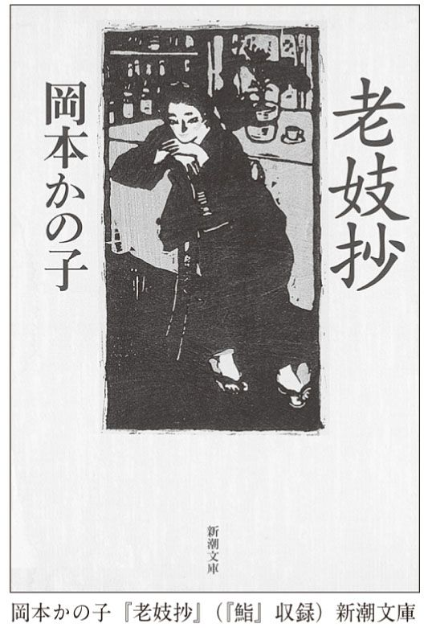
この作品には、ふたつの物語が含まれている。湊とともよの関係をめぐる物語。そして、子供時代の湊の物語。
まずは前者から。
年齢が離れたふたりの関係。少女は男にほのかな好感を抱いている。ひとり身の男も少女を憎からず思っている。しかし、何も起きない。起こりようがない。今の時代なら、援助交際だの何だのになってしまうかもしれないが、そんな気配は微塵もない。それどころか、ともよは自分の気持ちが、幼い恋だということすら知らない。なんという初々しさ。
どうして、湊は福ずしに姿を現さなくなったのだろう。子供時代の話をともよにしたのが恥ずかしくなったのか。それとも、彼がほのめかしていたように、どこかへ引っ越してしまったのか。でも、ひとり身の彼にとって決してつまらないものではなかったともよの存在を無視して引っ越すなんてことがあるだろうか。挨拶も何もしないで。それに、まもなく引っ越しする人が観賞魚を買うとは思えない。
湊は死んだのだ。突然、病気か何かで。そう推測することも可能だろう。彼が髑髏魚という死を連想させる魚を手にしていたことは、彼と死の近さを暗示している。文学作品の中には、暗示があちこちに存在するのが普通だ。とするなら、髑髏魚は死を暗示していると読むのがまずは常識的な線だろう。
だが、別にそう読まなくたってかまわない。青と書いてあるのを赤と読むのはまずいが（いや、それとて本当はあり得るのだけれど）、そうでない限り自由に読んでいい――それが文学作品のよいところだ。私は、湊が死んだのか、引っ越したのか、それはどうでもよいことだと思っている。確かなこと、それはともよの初恋の人がすうっと消えていったということだ。そして、初恋の思いも。
恋とはいつの間にか、蜃気楼のように消えてしまうものだ。最後、ともよが今では湊を思い出しても、大して心を動かさなくなったと書かれているのが切ない。たとえ恋がこういうものだとしても。
湊の子供時代の話では、子供が母親のすしを食べるシーンが気味が悪いほど生々しい。さすがにすべてを引用することはできなかったが、初めて生き物を食べたのだという征服感から、「ひ ひ ひ ひ ひ」と笑い声を上げ、有頂天になって「すし！ すし」と絶叫するシーンは鬼気迫る。
ここに示した部分からも明らかなように、子供にとって食べ物とは、自分にとって外部にある、得体の知れない、油断ならない存在だったのだ。だから気持ちが悪く、体の中にいったん入れても、吐き出さざるを得なかった。しかも、子供は、そうした警戒感を食べ物に対してだけ抱いているのではない。父親や周囲の人々、そして母親に対してすら持っていたのだ。この母親以外に、本当の母親とでもいうべき人がいるのではないかと思うほどなのだから。
けれども、母親がすしを握るというできごとを通じて、子供はその状況を脱する。間違いなく、この母親は本当の母親だった。子供は初めて警戒を解き、母親を信用し、母親が作ったすしを食べる。これをきっかけに外界に向かってドアが開かれたのだ。
このように湊が大人への階段を一段上ったように、ともよもまた、初恋という一段を上ったわけである。「今日は、ともちゃんが、すっかり大人に見えるね」と湊が言ったように。
岡本かの子の書く作品は、不思議な味わいを持っている。ものすごい事件が起きるわけではない。異常な人間が登場するわけではない。でも、人生のわかりがたさや偶然の不思議、つまりひとことでひっくるめて言うなら、世界の神秘がよく表現されている。そして、そういった世界の神秘の前では、人間はちっぽけな存在にしか過ぎないことが示されている。
すべては消えていく。湊の家は潰れ、父母は死に、湊も年を取った。その湊はいずこと知れず、消えていく。ともよの淡い気持ちも消える。人生ははかない。しかしいとおしい。そう思わせる。
何のへんてつもない台詞が、私には妙に感動的だ。ひとつだけ例を挙げれば、「さあ、だいぶ遅くなった。ともちゃん、帰らなくては悪かろう」、湊がともよに言った最後の言葉である。今後二度と会うことがない永遠の別れの台詞とは思えない。もちろん、ともよは（もしかしたら湊も）、これが永遠の別れとは思いもしなかっただろう。だからこそ、無性に悲しい。時として人生においては、それと知らずに最後の別れとなることがある。あとで「そうか、あれが最後だったのか」と思い返される。『鮨』はその何とも言えないほろ苦い気持ちを思い出させる。
世界中に数え切れない小説家がいるが、こと人生の切なさを岡本かの子ほど美しく表現できた人は稀なのである。
せっかくすしという食べ物に関係する話を読んだばかりだ。次も食べ物が登場する短編を読んでみよう。
作者は森鷗外。国語の教科書には、よく『舞姫』や『山椒大夫』が載っている。でも、それらを読んで、「うわ、すごい作品だ。すごい作家だ」と感激し、鷗外の崇拝者となってしまう人は皆無ではないか。中高生にとっては『舞姫』は古めかしい言葉遣いを読むだけで一苦労。内容を味わう余裕がなくて、どうしてもしんどい「勉強」という感じがしてしまう。他方、『山椒大夫』は人身売買のわかりやすいストーリーだが、どうも盛り上がりに欠ける。
実は、森鷗外は、通向けの作家だと思う。つまり、あれこれ文学作品を読んだ人にとっておもしろい作家。というのも、若いときに書いた『舞姫』なんかを除くと、鷗外の作品の大半はものすごく冷静だからだ。読者を感動させよう、おもしろがらせよう、びっくりさせようというサービス精神は希薄。ドキドキするストーリーを作ろうという様子もない。登場人物が大騒ぎしたりもしない。『山椒大夫』は、作家の筆が淡々としているだけでなく、登場人物たちも最悪の境遇にいるくせに静かだ。「姉さん、ボクたち売られちゃったんだよ！ どうしよう」と泣き叫んだりしないのだ。
しかし、だ。誰でもわかるような感動的な話、どぎついストーリー、絶叫、号泣、そんなものだけが文学ではない。スペクタクル的シーンに満ち満ちたハリウッドの大作だけが映画ではないように。映画のたとえを出したついでに言うと、鷗外の作品は小津安二郎に近いのかもしれない。表面上は淡々としている。平凡な日常をそのまま写し取っただけに見える。だけど、そこには細やかなニュアンスがある。リアルな空気が漂う。
『山椒大夫』もそういう作品だ。盛り上げようとすればいくらでも盛り上げられる残酷な話なのに、あえて抑えてある。短いものだし、この機会に（もう一度）お読みになるといい。最後、生き別れになった親子がようやく再会する。が、鷗外の筆はそのような場面であっても、徹底的に抑制されている。それだからこそ、静かな感銘がある。気品ある白黒映画のような。だから、いろいろな刺激的な文学をさんざん読んだあとのほうが、よさがわかる。ちょうど、濃厚なフランス料理をさんざん食べたあとで、薄味の日本料理を食べるとしみじみおいしいなあと感じるように。
さて、そんな鷗外だが、この人は実は専業の作家ではなかった。医学を学んだ彼はどんどん偉くなり、ただの町医者ではなく、陸軍省の医務担当の最高峰まで上り詰めた。さっき、小津安二郎の名前が出たついでに脱線すると、小津の名作『東京物語』の中に、父親が子供のことを「もっと偉くなるかと思ったら、ただの町医者だ」と言って、期待を裏切られた心境を吐露する場面がある。その点で言えば、鷗外は文句のつけようがないほど偉くなった。
鷗外は、昼間は役人として働き、夜家に帰って、小説を書いた。作家というと、太宰治のように自己破壊的な人間を想像しがちだが、それとは正反対のきわめて勤勉な人だったのである。実は、こういう作家は海外にもいた。『変身』で有名なフランツ・カフカがそうだ。カフカはやっぱり役所勤めが終わってから、不思議な創作に励んだ。あとは、Ｅ・Ｔ・Ａ・ホフマンもそう。世界に名だたる幻想文学の作家だが、この人も勤めのあとで小説を書いた。文学で食うのは洋の東西を問わず、簡単ではないのだ。
それはともかくとして、このような人生を歩んだため、鷗外の作品には役人として生きていく悩みを語ったものも多い。が、本書で取り上げたいのは、『牛鍋』という作品だ。ちくま文庫（『森鷗外全集』第２巻。以下、引用はすべて同書）でたったの六ページという超短編である。ちなみに、牛鍋とは、すきやきのこと。明治時代、関東地方ではこう呼ばれたらしい。
先ほどの『鮨』の三分の一以下という規模だが、これまた侮れないのである。『鮨』の中で、子供が狂ったように鮨を食べる情景も鬼気迫るが、『牛鍋』の食事シーン（というか、この作品には食事シーンしかないのだけれど）も怖い。鷗外は抑制された白黒映画みたいなものと書いたばかりだが、この作品はかなり強い調子だ。だから、安心して勧められる。短いので、全編を紹介しよう。
鍋はぐつぐつ煮える。
牛肉の紅は男のすばしこい箸で反される。白くなった方が上になる。
斜に薄く切られた、ざくと云う名の葱は、白い処が段々に黄いろくなって、褐色の汁の中へ沈む。
箸のすばしこい男は、三十前後であろう。晴着らしい印半纏を着ている。傍に折鞄が置いてある。
酒を飲んでは肉を反す。肉を反しては酒を飲む。
酒を注いで遣る女がある。
男と同年位であろう。黒繻子の半衿の掛かった、縞の綿入に、余所行の前掛をしている。
女の目は断えず男の顔に注がれている。永遠に渇しているような目である。
目の渇は口の渇を忘れさせる。女は酒を飲まないのである。
箸のすばしこい男は、二三度反した肉の一切れを口に入れた。
丈夫な白い歯で旨そうに噬んだ。
永遠に渇している目は動く腭に注がれている。
しかしこの腭に注がれているのは、この二つの目ばかりではない。目が今二つある。
今二つの目の主は七つか八つ位の娘である。無理に上げたようなお煙草盆に、小さい花簪を挿している。
白い手拭を畳んで膝の上に置いて、割箸を割って、手に持って待っているのである。
男が肉を三切四切食った頃に、娘が箸を持った手を伸べて、一切れの肉を挟もうとした。男に遠慮がないのではない。そんならと云って男を憚るとも見えない。
「待ちねえ。そりゃあまだ煮えていねえ。」
娘はおとなしく箸を持った手を引っ込めて、待っている。
永遠に渇している目には、娘の箸の空しく進んで空しく退いたのを見る程の余裕がない。
暫くすると、男の箸は一切れの肉を自分の口に運んだ。それはさっき娘の箸の挟もうとした肉であった。
娘の目はまた男の顔に注がれた。その目の中には怨も怒もない。ただ驚がある。
永遠に渇している目には、四本の箸の悲しい競争を見る程の余裕がなかった。
女は最初自分の箸を割って、盃洗の中の猪口を挟んで男に遣った。箸はそのまま膳の縁に寄せ掛けてある。永遠に渇している目には、またこの箸を顧みる程の余裕がない。
娘は驚の目をいつまで男に注いでいても、食べろとは云って貰われない。もう好い頃だと思って箸を出すと、その度毎に「そりゃあ煮えていねえ」を繰り返される。
驚の目には怨も怒もない。しかし卵から出たばかりの雛に穀物を啄ませ、胎を離れたばかりの赤ん坊を何にでも吸い附かせる生活の本能は、驚の目の主にも動く。娘は箸を鍋から引かなくなった。
男のすばしこい箸が肉の一切れを口に運ぶ隙に、娘の箸は突然手近い肉の一切れを挟んで口に入れた。もうどの肉も好く煮えているのである。
少し煮え過ぎている位である。
男は鋭く切れた二皮目で、死んだ友達の一人娘の顔をちょいと見た。叱りはしないのである。
ただこれからは男のすばしこい箸が一層すばしこくなる。代りの生を鍋に運ぶ。運んでは反す。反しては食う。
しかし娘も黙って箸を動かす。驚の目は、ある目的に向って動く活動の目になって、それが暫らくも鍋を離れない。
大きな肉の切れは得られないでも、小さい切れは得られる。好く煮えたのは得られないでも、生煮えなのは得られる。肉は得られないでも、葱は得られる。
浅草公園に何とかいう、動物をいろいろ見せる処がある。名高い狒々のいた近辺に、母と子との猿を一しょに入れてある檻があって、その前には例の輪切にした薩摩芋が置いてある。見物がその芋を竿の尖に突き刺して檻の格子の前に出すと、猿の母と子との間に悲しい争奪が始まる。芋が来れば、母の乳房を銜んでいた子猿が、乳房を放して、珍らしい芋の方を取ろうとする。母猿もその芋を取ろうとする。子猿が母の腋を潜り、股を潜り、背に乗り、頭に乗って取ろうとしても、芋は大抵母猿の手に落ちる。それでも四つに一つ、五つに一つは子猿の口にも入る。
母猿は争いはする。しかし芋がたまさか子猿の口に這入っても子猿を窘めはしない。本能は存外醜悪でない。
箸のすばしこい本能の人は娘の親ではない。親でないのに、たまさか箸の運動に娘が成功しても叱りはしない。
人は猿よりも進化している。
四本の箸は、すばしこくなっている男の手と、すばしこくなろうとしている娘の手とに使役せられているのに、今二本の箸はとうとう動かずにしまった。
永遠に渇している目は、依然として男の顔に注がれている。世に苦味走ったという質の男の顔に注がれている。
一の本能は他の本能を犠牲にする。
こんな事は獣にもあろう。しかし獣よりは人に多いようである。
人は猿より進化している。
どうだろう。みなでテーブルを囲み、すきやきを作りながら食べる情景は誰もが知っている。たいていは和気あいあいとにぎやかに食事が進む。だが、この作品ではどうだ。食事はまるで競争のようになっている。いや、競争を超えてもっと息詰まる何かになっている。
登場人物は三人。三〇歳前後の男。同年齢の女とその娘。三人は食卓についている。
女は無言で男を見つめている。ときどき、酒をそそいでやる。彼女は何も食べない。飲まない。これだけで何やら緊張感が生まれる。
一方、男は「丈夫な白い歯」をしていて、動作がすばしこい。決して多弁ではなく、ほとんど言葉を口にしない。女が何も食べないのとは正反対で、ひたすら肉を食い、酒を飲む。何か肉食獣的な印象を与える。
女はこのワイルドな男に惚れているのだ。そのせいで、食欲はまったくなく、むさぼるように男を見つめ続けているのだ。男は女の気持ちを知ってか知らずか、いずれにしても女を無視して、ひたすら食べ続けている。何ともいたたまれない食事風景ではないか。
これだけでも、鮮烈だが、さらにもうひとり、登場人物がいる。女の娘だ。鷗外はこういう書き方をしている。「しかしこの（男が肉を嚙んでいる）腭に注がれているのは、この（女の）二つの目ばかりではない。目が今二つある」。
「もうひとりがいる」と書いたら、もっと印象は穏やかで平和だっただろう。だが、「目が今二つある」という鷗外の筆の下、事態はよりまがまがしい。女も娘も、全人格的な〈人〉ではなく、〈目〉という部分になっている。ふたりの目は、たとえば母親が子供を見守るような、あるいは恋人どうしが見つめ合うような穏やかな目ではない。獲物を狙う鋭い目である。女の目は男を狙っており、娘の目は肉を狙っているのである。ひたすら食べて飲む男の存在が口に集約されるなら、このふたりは目に集約される。四つの目が男に向けられているのだ。
まだ子供の娘は、肉が食べたくてたまらない。だが、肉に箸をのばすと「待ちねえ。そりゃあまだ煮えていねえ」と言われてしまう。これは寡黙な男が口にするほとんど唯一の言葉だ。けれど、本当は肉は煮えている。男は娘に肉をやりたくないのである。
男が娘に食べさせないのは、単にケチだからなのか？ そもそもいったいこの男と娘と女はどういう関係なのか？ 私たちにはまだわからない。
ようやく娘が一枚の肉をかすめ取るように口に入れたとき、「男は鋭く切れた二皮目で、死んだ友達の一人娘の顔をちょいと見た」。
鷗外の筆はあくまで抑制されているが、それゆえ男の冷たい目つきが浮かんでくるようではないか。恐ろしく無関心で冷酷な目が。ここに至って三人の関係がようやく明かされる。女は男の友達の妻、娘は友達の娘だったのだ。
あいかわらず、女は男を見つめ続けている。あまり見つめているせいで、男と娘の間に起きている静かなる戦いが見えないほどに。
男は娘に一切れの肉をまんまと奪われると、「ただこれからは男のすばしこい箸が一層すばしこくなる」。娘も負けていない。「大きな肉の切れは得られないでも、小さい切れは得られる。好く煮えたのは得られないでも、生煮えなのは得られる。肉は得られないでも、葱は得られる」。たたみかけるような、しかし悲しい文章だ。
男は決して娘に「食うな」とは言わない。ただ、しぐさのみが男の拒絶を表している。それゆえ、かえって緊張感がみなぎる。娘は一切れを口に入れたのに勇気を得、次の一切れを狙う。静かなる修羅場といった感じがする。
その後、この話はどう進行するのか。意外にも、鷗外は突然この緊迫した場面を離れ、猿の話を始めるのだ。親猿と子猿が食べ物を争うと、たいがいは親猿が得る。しかし、ときたま子猿が取っても、親猿はいじめない。男と娘の様子が、これに似ているというのだ。
しかし、食欲という本能以上に強い本能もある。男に恋する女は食欲を感じない。そして鷗外は「こんな事は獣にもあろう。しかし獣よりは人に多いようである」という一文に続けて「人は猿より進化している」と書いて物語を閉じるのである。なんと、この短編の最後は、食事場面を放り投げたまま、突然打ち切られるのだ。
私は初めてこの話を読んだとき、キツネにつままれたような感じがした。え、男は何者だったの？ 男と女はどういう関係なの？ どうして男は娘に肉を食べさせようとはしないの？ どうして食事シーンだけで終わらず、どうでもいいような猿の話が付いているの？ それどころか、いったい場所はどこなの？ 季節は？ 時間は？
なんと大胆にも、鷗外はそういったことをまったく書いていないのである。もちろん、登場人物の名前もわからない。つまり、この短編は、極端なまでの省略という思い切った書き方によって成立しているのだ。最小限に描写された登場人物たち。彼らが食べたり見つめたりする姿だけが、私たちの前にくっきりと浮かび上がる。彼らの前に置いてある牛鍋以外、舞台装置や小道具は何もない。だからこそ、彼らの姿がこれ以上はないくらい鮮明に見える。
そして、数多くの謎を私たちに残しながら、この作品はぷっつりと断絶するのだ。このあと何が起きたか。この前に何があったのか。何も書かれていない。それゆえ、無限に想像力をかきたてる。
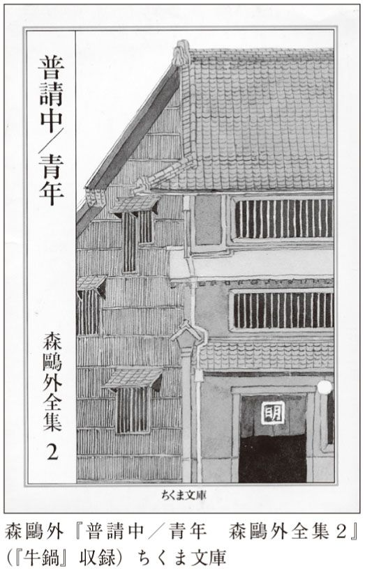
あえて私の推測を言葉にするなら――男と女はかつて恋仲だった。だが、どういう理由からか、女は男の親友と結婚し、娘も生まれた。親友が死に、女は再び男にひかれた。が、男にはもうそういう気持ちはいっさいない。と、そんなところか。さらに想像をたくましくするなら、娘は実は男の子供かもしれない。だが、夫はそれを知らなかった。男もそれを知らなかった。知っているのは女だけ。作者は男が娘の親ではない、と書いているが、こう想像した方が盛り上がる。
こうした謎は読む者を引きつける。考えてみれば、岡本かの子の『鮨』もまた、湊という男がどうなったかについては触れていなかった。私たちの想像力を刺激する謎は、文学の大きなおもしろさのひとつなのだ。作者は、「こうなんじゃないのかな」と私たちが想像できるような暗示をほのめかしてはくれる。だが、それが正解とは限らない。その宙ぶらりんの感じがたまらない。
だから、本当はこういう作品を読んだら、何人かでおしゃべりをすると楽しい。へえ、なるほどと感心するような、思いがけない解釈を言い出す人がいたりする。作者がこうとはっきり書いていない以上、ひとつの解釈だけが正しいということにはならない。
鷗外の短編の多くは、非常にあっさりと終わるけれど、この『牛鍋』は何か得体が知れない印象を強く読者に刻印する。忘れがたい短編である。
鷗外は役人として大出世した人だった。もうひとり、役人をやっていた大作家がいる。三島由紀夫だ。学習院高等科を首席で卒業し、東大法学部に入学、卒業後は大蔵省に入省したというから、羨望のエリートコースである。
しかし、彼は子供のときから文学を志していた。中学生のときから創作に励み、三島由紀夫というペンネームも一六歳のときから使っていたものだという。当然のことながら、作家として名声を得ると、役所は辞めた。
三島由紀夫の最高傑作は何だろう。有名な『金閣寺』は確かに充実した作品だ。立派さという点では、一番かもしれない。大作『豊饒の海』を挙げる人もいるかもしれない。あるいは、そう長くはないが魅力的な『午後の曳航』や『仮面の告白』、それとも他の何かか。
しかし、本書で取り上げるのはそれらではない。もっと短くて、でもいろいろな意味で強烈な『憂国』という短編である。
よく知られているように、三島は（どういうわけか、森鷗外は鷗外、夏目漱石は漱石と呼ばれるのに、この人は三島である）、市ヶ谷の自衛隊で割腹自殺した。この作品には、その自殺シーンを彷彿とさせる場面が登場するのだ。作家の最期を予言した作品とも呼べるだろう。
三島自身はこの作品がいたく気に入っていたらしく、自分のいいところも、悪いところも含まれた作品と言っているし、のちに映画化されたときには、出演して主役（もっとも登場人物は二人しかいないのだが）を演じている。
けれども、本書でこれを取り上げる最大の理由は、そんなことではない。私が大学の授業でこの作品を扱ってみて驚いたのは、とにかく学生がやたらと感激するのだ。それも、斜に構えた男子学生から純朴な女子学生に至るまで、無遅刻無欠席のマジメ学生から飲んだくれののらくら学生まで、むさくるしい男からクラス一番の美人まで、みんながみんな、この作品が大好きなのだ。
これは、完全に私の予想を超えた現象だった。私はむしろこの作品を、興味深くはあるがグロテスクで幼稚な作品として読ませたかったのである。まあ、二〇歳くらいゆえ、そこまで巧みに読めないまでも、「信じられない」とか「バカじゃないの」とか「右翼だ」とか「どうして夫につき合って死ななくちゃいけないの」とか、否定的感想を予想していたのである。
ところがどっこい、そんな意に反して、皆がものすごく気に入ってしまうのである。つい先日も、ある男子学生が、この作品に登場するような軍服姿で成人式の写真を撮影したと得意げに見せてくれた。別にミリタリーおたくではない。『憂国』に感動したからと言うのである。
では、その問題の『憂国』とは、いかなる作品なのか？
時は昭和一一（一九三六）年の二月二八日。二・二六事件が起きた翌々日である。登場人物はわずかふたり。陸軍の武山信二中尉と、その新妻麗子だ。年齢はそれぞれ三〇歳、二三歳である。
このふたりは結婚して半年しかたっていない。人も羨む美男美女カップルである。
（彼らの写真を見た人々は〔筆者注〕）この二人の美男美女ぶりに改めて感嘆の声を洩らした。軍服姿の中尉は軍刀を左手に突き右手に脱いだ軍帽を提げて、雄々しく新妻を庇って立っていた。まことに凜々しい顔立ちで、濃い眉も大きくみひらかれた瞳も、青年の潔らかさといさぎよさをよく表わしていた。新婦の白い裲襠姿の美しさは、例えん方もなかった。
（新潮文庫版より引用。以下同）
結婚した晩、中尉は麗子に言う。軍人はいつ死ぬかもしれない。だから、軍人の妻はいつでも心の準備をしていなければならない。自分が死んでもうろたえない覚悟はあるかと尋ねると、麗子は「もっとも大切な嫁入道具として母からいただいた懐剣を、良人と同じように、黙って自分の膝の前に置いた」――つまり、麗子は夫が死んだら自分もあとを追うと誓ったのである。
ふたりは精神的にも肉体的にも深く愛し合っている。
二人とも実に健康な若い肉体を持っていたから、その交情ははげしく、夜ばかりか、演習のかえりの埃だらけの軍服を脱ぐ間ももどかしく、帰宅するなり中尉は新妻をその場に押し倒すことも一再ではなかった。麗子もよくこれに応えた。最初の夜から一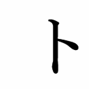月をすぎるかすぎぬに、麗子は喜びを知り、中尉もそれを知って喜んだ。
作者は、中尉は麗子にとって「全世界の太陽」になったと書いている。
そして、「これらのことはすべて道徳的であり、教育勅語の『夫婦相和シ』の訓えにも叶っていた。（中略）階下の神棚には皇太神宮の御札と共に、天皇皇后両陛下の御真影が飾られ、朝毎に、出勤前の中尉は妻と共に、神棚の下で深く頭を垂れた」。
だが、幸福な生活は長くは続かない。二・二六事件が起こり、中尉は集合ラッパで呼び出される。
麗子はラジオで事件を知り、夫は死ぬのではないかと予感する。そうなれば身の回りのものを処分し、自分も夫の後を追わねばならない。しかし、彼女はまったく不幸ではない。中尉とのセックスを思い出して濡れながらも、
心はもっと烈しいもの、もっと狂おしい幸福に充たされている。（中略）脳裡にうかぶ死はすこしも怖くはなく、良人の今感じていること、考えていること、その悲嘆、その苦悩、その思考のすべてが、留守居の麗子には、彼の肉体と全く同じように、自分を快適な死へ連れ去ってくれるのを固く信じた。
ようやく帰ってきた中尉は、うなだれた様子で語る。事件を起こしたのは、彼の友人たちだった。本来なら、中尉をも決起に誘ったはずだ。しかし、新婚早々ゆえ、気の毒がって声をかけなかったに違いない。
明日になれば、中尉は命令を受け、反乱軍の汚名を着せられた友人たちと戦わねばならない。軍人として命令には逆えないとはいえ、そんなことはできない。
だが、中尉はいったいどうしたらいいのかと悩んでいるわけではない。彼はもう、自殺する決心をしていたのだ。それだけが軍も友人も裏切らないですむ唯一の方法なのである。
夫が「今夜腹を切る」と言うと、麗子は「覚悟はしておりました。お供をさせていただきとうございます」と答える。中尉は「よし。一緒に行こう。但し、俺の切腹を見届けてもらいたいんだ。いいな」と言う。
これは妻を信じているから言える言葉である。中尉が死んだのち、もしかして妻が心変わりし、「やっぱり私は死なないわ」などと決意を翻す可能性がないから、安心して自分から先に死ねるのである。
中尉は風呂に入る。その間、麗子は酒の用意をする。中尉が体を洗っていると、「妻の立ち働らく音がほのかにきこえる。すると二日の間忘れていた健康な欲望が頭をもたげた」。これから腹を切るというのに、そういう欲望が起きるのかどうか、私にはわからないが、ともかく、三島はこう書いている。
風呂から上がった中尉は麗子を抱く。ここからはきわめて具体的かつ濃密なセックス描写である。「二人の舌は相手のなめらかな口の中の隅々までたしかめ」あったとか、「その高々と息づく乳房は、山桜の花の蕾のような乳首を持ち、中尉の唇に含まれて固くなった」とか、「若い美しい肉体の隅々までが一つになった。麗子は叫んだ。高みから奈落へ落ち、奈落から翼を得て、又目くるめく高みへまで天翔った」とか。
しかし、さしもの甘美なセックスも終わりを告げる。中尉が身を離したのは、満足しきったから、飽きたからではない。切腹のためにはエネルギーが必要だからだ。
ふたりは身を清め、いよいよ死の場面となる。白無垢を着た美しい妻の前で、中尉は刀を手に取る。「どのみち死というものは、傍から見たら恐ろしいものだ。それを見て挫けてはならん。いいな」。
いよいよ切腹が始まるが、ここでも描写は実に生々しく執拗である。気持ち悪いので一カ所だけ引用しよう。
今まで固く締っていた腹が急に波打ち、その傷口が大きくひらけて、あたかも傷口がせい一ぱい吐瀉するように、腸が弾け出て来たのである。腸は主の苦痛も知らぬげに、健康な、いやらしいほどいきいきとした姿で、喜々として辷り出て股間にあふれた。
たいへんな苦痛を伴って、中尉は切腹を成し遂げる。
続いては麗子の番である。あとで発見されたときのために念入りに化粧をした彼女の着物には、ところどころ夫の鮮血がついている。支度を整えた彼女は、夫のそばに正座し、短刀で喉を突く。
今、改めてこの作品を読み直し、こうして要約を記したわけだけれど、やっぱり私にはとてもグロテスクに感じられる。どこがグロテスクなのか。
まずはふたりが新婚ほやほやのデレデレ状態だということ。お互いに熱愛していて、激しくセックスしている。訓練から帰った中尉は、欲望を抑えかねて、家に入るやいなや、妻を押し倒すほど。
新婚間もないのだもの、それで別にかまいやしない。しかし、作者がこうした肉体的な行為を、愛の行為を、もっと精神的なもの、社会的なものとして賞賛するのが居心地が悪いのだ。肉体的な官能の喜び、教育勅語、天皇、大義、死、こうしたことごとが、当たり前のように直接結び合わされているのが、何とも奇妙な気がするのである。
二人が死を決めたときのあの喜びに、いささかも不純なもののないことに中尉は自信があった。あのとき二人は、もちろんそれとはっきり意識はしていないが、ふたたび余人の知らぬ二人の正当な快楽が、大義と神威に、一分の隙もない完全な道徳に守られたのを感じたのである。（中略）中尉はだから、自分の肉の欲望と憂国の至情のあいだに、何らの矛盾や撞着を見ないばかりか、むしろそれを一つのものと考えることさえできた。
こう作者は断言しているので、はあ、そういうのもありですかねえ、くらいしか言えないのだが、ただ作者がわざわざ「矛盾や撞着を見ない」と書くということは、普通は矛盾や撞着があるということなのだ。
私がこの作品に疑問を持っているのはそれだけではない。
セックスと切腹。性と死は、私たちをもっともひきつけるテーマだろうが、それが両方入っている。甘美なラブシーンと、血なまぐさい自殺シーン、どちらも誤解のしようがないほど明快に書き込まれている。それが迫力を生んでいるのは確か。でも、この登場人物たちは、あまりに噓くさいのだ。確かに小説とは、フィクションである。一種の噓である。だが、それは噓のふりをした真実でもある。三島が記した男女は、どうも実際の人間らしくない。マンガチックと言ってもいいし、キャラクターがはっきりしすぎているのだ。世の中には、頭のてっぺんからつま先まで完全に悪人、善人という人はほとんどいまい。たいがいの人間は、もっと複雑で、いろいろな面を持っているもの。当然、子供の読み物はいざ知らず、まともな小説の人間はある程度複雑に描かれるものだ。が、『憂国』のふたりに、そうした複雑さは見られない。短編だからというのは理由にならない。
中尉は三〇歳である。少年ではない。しかし、徹底的にまっすぐで、表裏、陰日向のまったくない男だ。おまけに頑固。こういうのを愚直と言うのだろうが、あまりにも単純すぎる。そもそも、三〇歳の男がこのように描かれてしまうことが、私には理解できない。三〇歳と言えば、社会に出て一〇年ほどか。いいかげん人の世の多面性に気づいていそうなものである。女性から見たらどうなのかわからないが、この中尉は男の私から見て、まったく魅力的ではない。「まことに凜々しい顔立ちで、濃い眉も大きくみひらかれた瞳も、青年の潔らかさといさぎよさをよく表わしていた」というが、これではまるでマンガだ。
むろん、三島とて、現実の人間を描いたつもりはないだろう。美化された理想的な男女関係、理想的な人間像を描いたのだろう。だが、えてして、理想像などというのは、ずいぶんありきたりでつまらないものなのだ。端的にそれがわかるのがセックスの場面である。幸福なセックスの場面を描くと、三島といえども、ただのポルノになってしまう。と同時に、こんな安っぽい理想像をはばかりもなく書いてしまった作家の心境に、私は愕然とする。
つまり、『憂国』は童話なのだ。主人公たちは絵に描いたような美男美女。ふたりの性格はきわめて単純。役割も単純。まるでメルヘンのようにうすっぺらなのだ。
私がこの作品を授業で取り上げたわけは、こうした物語は童話として読まなければならない、読めるようにならねばならない、ということを言いたかったから。本当の人間はもっと複雑で、白黒つけにくくて、簡単に割り切れるものではないということ。男女の純愛物語として簡単に感動してはならない。
だけど、一八─二〇歳くらいの若者たちは、この童話に大感激してしまったのだ。年齢ゆえ、仕方がないのかもしれないが。
この作品でもうひとつ気持ちが悪いのは、作家が妙に嬉しそうに筆を進めている点だ。三島という人の作品をあれこれ読んでみると、彼がいつでも物事を冷たく見つめ、しばしば皮肉な感想を述べる作家だとすぐわかる。それに、時として「小説なんて作り事だよ」といった雰囲気を漂わせていることすらある。ところが、『憂国』はそうではない。書いている本人が、書かれている内容にすっかり夢中になっているように見えるのだ。
素人の創作なら、それでもいいだろう。キャリアの浅い若い作家の作品なら、仕方がないかもしれない。ところが、これを書いたときの三島はもうベテランだ。すっかり名声を確立した作家だ。分別盛りの年齢だ。なのに、自分が書いている単純な物語に惚れ込んでしまっている。いい大人が......そう思えてしまうのだ。
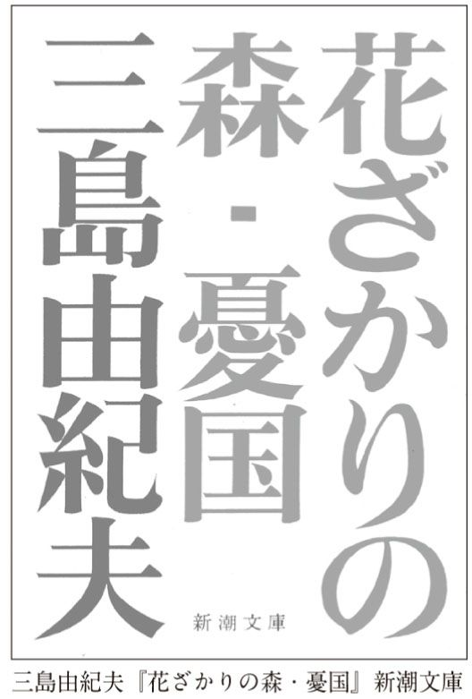
三島は時に一種の躁状態で作品を書いたことがある。たとえば、雑誌に頼まれた手軽な仕事のような場合だ。いかにも筆が赴くままといった感じで、すらすらと楽しげに書き飛ばしている姿がうかがえる。けれど、『憂国』は、楽しくてなんぼの軽妙エッセイなどではない。まがりなりにもシリアスな作品である。なのに、筆が妙に軽いのだ。糞まじめな人間が、変にハイになっているような感じがして、私は違和感を覚える。
ところで、この短い作品の中で、効果的に使われている言葉があるのにお気づきだろうか。ひとつは、「健康な」という言葉。これは、ふたりの性欲に対して用いられると同時に、切腹して飛び出してきた腸に対しても用いられる。どの場合も、意外性があって、印象的である。しかも、セックスと死という一見対照的な（だが、根本で通じなくもない――これについては長くなるので説明しないが）現象に対して、用いられているのだ。もちろん意図的な使用だろう。
中尉が二度口にする「いいな」という台詞も目立つ。ただ、私はこれには嫌悪感を覚える。この「いいな」は質問ではなく命令である。なるほど、この時代、夫唱婦随が当然だったにせよ、私はそういったものが嫌いだから、感覚的にカチンと来るのである。
三島は海外でもっとも知られ、読まれ、評価されている日本の作家である。パリでもロンドンでも、書店で一番目立つ日本文学は三島作品だ。
その理由は何か。もちろん、彼の作品が『憂国』の切腹だとか、『金閣寺』の金閣だとか、外国人受けしそうな日本的要素を用いているのはひとつの理由。けれども、私が思うに、さらなる大きな理由がある。三島の作品は、大づかみな観念の対比の上に成り立っているのだ。『憂国』の場合なら、エロスと死。愛と死。個人と国家。『金閣寺』なら、観念と現象。
観念の組み合わせによって小説を構築するというのは、西洋の伝統的な小説作法なのである。ドストエフスキーや、三島が熱愛したトーマス・マンの長編小説がその典型だ。ことにエロスと死という構図は、ヨーロッパ芸術が非常に好んだテーマである。
だから、西洋人にとって三島の文学は理解しやすい。なるほどエキゾチックな日本的要素が取り入れられてはいても、物語の骨格は西洋の小説に近いから。
日本人は西洋のさまざまなものを修得し、わがものにしようとしてきた。小説にしても例外ではない。おそらく三島由紀夫は、日本文学史上もっとも勤勉な西洋文学の模倣者だったのである。
森鷗外のあとで読むと、この作品であれ何であれ、三島の作品は饒舌だ。言葉を尽くしてあらゆることを説明し尽くそうという強い意志が見て取れる。悪く言うと、読者を信用していない。これでもかとわからせようとする。行間を読む自由が少ない。だから、三島の文学は、先ほどの『牛鍋』のような省略の美学からもっとも遠いところにある。
森鷗外は明治のインテリとして西洋を体験した。三島はもっとあとの世代として西洋文化に取り囲まれて大人になった。ふたりとも、冷静であろうとした。しかし、同じように西洋通ではあっても、このふたりの文学は全然違う方向性を持っていたのだ。
この章を書いているときに、ちょうどタイミングがいいことに、『憂国』のフィルムが発見されたというニュースが飛び込んできた。
『憂国』は一九六〇年に映画化されると日本だけでなく、外国でも上映され、絶賛を博した。三島自身も気に入っていた。
だが、切腹シーンがあまりにも生々しかった。何しろ演じているのは三島自身なのだ。遺族にとっては堪えられなかった。だから未亡人がフィルムを焼き捨てたとされていた。
とはいえ、伝説的な名画である。こっそりと作られたコピーが内外で出回ったり、私的な集まりでひそかに上映されたりしていた。
私も、画質はひどかったが、見たことがある。ある意味、原作の小説以上にインパクトが強い映画だった。あえて白黒フィルムを用い、セットはできるだけ簡略化されている。背景に流れるのは、ワーグナーのオペラ『トリスタンとイゾルデ』の陶酔的でエロティックな音楽だ。登場人物はいっさい台詞を口にしない。これがかえって緊迫感を高める。
特に、中尉が自らに刀を突き刺し、苦悶に顔をゆがめ、脂汗を流しながら切腹をし遂げようというあたりがすごい。三島の顔は常に影に入るように撮影されていて見えないが、夫のすぐそばにすわって切腹を見守る女優の演技は感動的だ。
率直に言って、この映画のほうが、小説よりもすぐれていると私は思う。なぜなら、映画では、自殺の理由とか、大義といったことが一応簡単には説明されるが、ほとんど消え去るからだ。映像のド迫力は、そんなものを吹き飛ばしてしまっている。
本書は映画の本ではないから、これくらいにしておくが、まもなく上映あるいはＤＶＤ化が行われるようである。非常に楽しみだ。
なんだか、三島に対する不満をぶちまけてしまったようだ。だが、あえて言おう。三島は頭がいい。努力家だ。教養もある。しかし、それゆえに、頭がよくて教養もあって努力をする人間ならではの文学を書くしかなかった。三島の作品は、確かにおもしろい。あちこちで鋭さに感心させられる。決して下らない文学ではない。にもかかわらず、本当にすごい文学作品が持っている「何なんだ、これは」という迫力に欠ける。知性で統御できない何かに欠ける。作者が「これを書こう」と意図したことだけが表現されていて、作者が想像もしなかったすごいものが表れてしまったという、芸術の神秘に欠ける。
そうだ。きっと『憂国』が幼稚に感じられるのは、そのせいなのである。最初からこうと決められた登場人物たちが、こうと決められたストーリーを、まるで線路の上を走る電車のように確実にたどって、結末に至る。その筋道、構成があまりにも確実すぎる。この作品には謎がない。
そういうわけだから、実は私が三島の書いたものでもっとも好きなのは、小説ではない。エッセイだ。明快な説明、歯切れがよい文章、鮮やかな発想で書かれたエッセイにこそ、三島の美点が存分に発揮されている。
次に、『憂国』と同じくらい異常な状況を設定していながらも成功している短編を読んでみよう。
泉鏡花という作家がいた。この人は、「花」という字が名前に入っているが男性である。
漱石や鷗外や太宰ほどには知られていない。国語の教科書にも名前はともかく、作品自体が載っていることはあまりないだろう。
しかし、実は、たいへん魅力的な作家なのだ。後世の多くの作家が鏡花の作品を好んで読み、影響を受けた。なのに、鏡花の作品が、中学、高校の教科書に登場しない理由は、はっきりしている。なんともいえないエロティシズムがあるのだ。もちろん、今の時代とは違って、露骨な性描写があるわけではない。けれども、こんなものを思春期の若者に読ませたら、ただでさえウズウズしているのに気の毒だ、そう思わせるエロティシズムがある。いわば、表面的な刺激というより、内側からじっとり濡れてくるような官能性なのである。
しかも、単にエロティックなだけではなくて、これまたなんともいえないグロテスクさがある。「闇の作家」と呼ぶと大げさに過ぎるけれど、漱石や鷗外のような超マジメな人たちとはひと味もふた味も違う、隠微な雰囲気があるのだ。
非現実的な作品も多い。子供にはまともな社会人になってもらわねば困る文部科学省が、空想の世界で遊ぶ若者を増やしてしまう危険がある文学はまずいと考えるのも無理はない。鏡花のような文学は、知っている人だけが楽しんでいればいい秘宝のようなものなのである。
しかし、私は文部科学省の役人でもないし、どうせ日本文学を読むのなら、鏡花を読まない手はないと思う。この作家の妖しい美しさと毒が凝縮されている作品、『外科室』（一八九五）を読んでみようではないか。
『外科室』なんて、字面からすると、殺風景というか、ロマンティックのロの字もないような題名である。しかし、これが題名からは予想もできない、純粋を極めた恋愛の物語なのだ。文庫本でわずか二〇ページほどの短編である。鷗外の『牛鍋』のところで、省略の大胆さについて述べたが、あれと同様、よけいなものをそぎ落として、恋の神秘の真髄をえぐり出している。私は初めてこの短編を読んだとき、「ああ、これさえあれば、他に恋愛小説はいらないかもしれない」とまで思った。世の中には掃いて捨てるほど恋愛小説がある。名作も多い。そういったものをさんざん読んだあとで、この『外科室』を読むと、ものごとの核心だけをズバリとわしづかみにした鏡花の手際の鮮やかさに感心する。どだい、恋愛小説なんて、作家が自分の体験を投入すればするほど、無限に長くなるものに違いないだろうが、これはそんな作品とは大違い。恋のエッセンスだけを切り取ってきている。
ただ、正直に言うと、『外科室』を取り上げるべきかどうか、私は少しばかり迷ったのである。というのも、この作品は文語体で書かれている。現代の私たちには、それだけでもなんだか手が付けにくい。でも、ごく短いから我慢して読み始めてください。幸い、長々しい序の部分はない。すぐに緊迫した場面になる。それに饒舌な描写もない。想像以上に楽に読めるはずだ。私だって、文語体など全然読み慣れていない。だが、これほどまでに強烈な作品となるとすいすい読めてしまうのが不思議である。
さて、そのストーリーは――
物語の語り手である画家は、親友の医師、高峰が行う手術を見学することになった。
手術を受けるのは、ある伯爵夫人。放っておけば確実に死につながる病に冒されている。身分が高い人だけに、いろいろな偉い人たちも病院に駆けつけており、ただならぬ緊張感が漂う。
伯爵夫人は、すでに白衣を着て、手術台に横たわっている。やせ衰えてはいるが、このような状況にあっても気高く、清く、貴く、美しい彼女の姿に、画家は慄然とする。
これから手術を受ける夫人に、人々は麻酔薬を投与しようとする。だが、夫人は固く拒む。それでは手術できないと言われると、ならば手術しなくてよいとまで言う。
その様子があまり頑固なので人々がうろたえていると、夫人は麻酔薬を拒む理由を語る。自分には心に秘めた秘密がある。眠りながらうわごとでそれを言うと困る。だから、麻酔薬を使わねば治療できないというのなら、治らなくてもよい。
伯爵夫人は命がけで秘密を守ろうとしているのである。伯爵が、夫の自分にも言えないことなのかと問うと、絶対にだめだと答える。こうなると一同はお手上げで、なすすべがない。
やがて伯爵夫人が恐ろしいことを言い出す。麻酔薬がなくても手術は可能なはずだ。どんなに痛くても我慢しているから、切ってくれ。
夫人は衣服をはだけ、「玉の如き胸部を」さらす。その決然とした威厳あるふるまいに、全員が凍り付く。
それまで静かに事態を見守っていた高峰は、手術を決意する。「看護婦、メスを」という彼の言葉に、看護婦は信じられないとばかりに驚き、ためらう。もちろん、一同は愕然として言葉もない。が、とうとう看護婦は震える手でメスを渡す。
夫人が暴れるといけないと、看護婦たちが手足を押さえようとすると、高峰は「それには及ばない」と止めさせる。
いよいよメスが夫人の体を切り始める。血が流れる。が、気丈夫にも夫人は足の指すら動かさない。それを見て、ある者はわななき、ある者は顔を覆い、ある者は背中を向ける。
だが、メスが骨にも達しようとしたとき、夫人は「あ」と声をあげ、半身を起こして、高峰の腕を両手でしっかりとつかむ。
「痛みますか。」
「否、貴下だから、貴下だから。」
（岩波文庫版より引用。以下同）
夫人は凄まじい目つきで高峰医師を見つめて言う。
「でも、貴下は、貴下は、私を知りますまい！」
高峰はおののきながら答える。
「忘れません。」
その声、その呼吸、その姿、その声、その呼吸、その姿。伯爵夫人は嬉しげに、いとあどけなき微笑を含みて高峰の手より手をはなし、ばつたり、枕に伏すとぞ見えし、唇の色変りたり。
その時の二人が状、あたかも二人の身辺には、天なく、地なく、社会なく、全く人なきが如くなりし。
かくて伯爵夫人は息絶える。
ここまでが前半だ。身分が高い人間の手術である。当然、金に糸目をつけず、最高の治療がなされるはず。ところが、伯爵夫人は、麻酔なしで手術をしろと言うのだ。そんなこと、できっこない。世界には数え切れないほど文学作品や劇や映画が存在するが、ほとんど類例がないような異常な設定である。
夫人が麻酔を拒むのには理由がある。人には絶対聞かれてはならぬ秘密があるのだ。昔の日本である。妻は夫に服従しなければならないとされている。夫が「自分にも言えないのか」と尋ねるのも無理はない。が、夫人はきっぱりと断る。その秘密とは？
加えて、手術の最中の、夫人と医師の会話、様子も不可解だ。ふたりはどういう関係なのだ？ 夫人は痛みに耐え切れず、事切れるが、微笑しながらだったのはなぜか？。
後半ではそれが語られる。
九年前の五月のことだった。まだ医科大学の学生だった高峰と画家は、植物園を散歩していた。
遠くから、貴族の一行が近づいてきた。見ると、その中に三人の美人がいる。すれ違ったあとで高峰がわざわざ振り返るほどの美人だった。
彼女たちの美しさに驚いたのは彼らだけではなかった。植物園にいた他の男たちも、彼女たちの美しさやたちいふるまいに賛嘆を惜しまなかった。高峰は、真に美しい女は人を感動させるものだと画家に言うのだった。
なんと高峰は、画家にはひとことも言わなかったが、そのときから、ひとりの女の面影を心に秘め、ずっと愛し続けていたのである。やがて高峰は立派な医師となり、当然妻を持つべき年齢になったが、その気配もなかった。遊び歩いていたわけではなく、きわめてまじめな生活ぶりだった。それも、心の中に女の姿を思い浮かべていたからなのだ。なのに、彼がようやく女と再会したのは何年も後、よりによって死に蝕まれつつある病人としてだったのである。
手術で夫人が死んだ直後、高峰も死んだ。自殺とも何とも書いていないが、おそらく愛する者がいなくなった今、高峰の命は自然に燃え尽きたと思われる。
最後に作者は問う。「このふたりに罪はあるだろうか。天に行けないのだろうか」と。
たまたま植物園で男と女がすれ違った。言葉が交わされたわけではない。視線があってもいないかもしれない。だが、今風に言うなら、「ビビッと来た」のだろう。男は女に恋し、女は男に恋した。けれど、かたや貴族、かたやしがない医学生。お互い名前も知らなければ、二度と会う機会もなかった。会ったところで、ふたりが結ばれるのは難しかったろう。
けれど、互いに忘れかねたのである。その女を知っていればこそ、高峰は結婚することができなかったし、誰にも愛を感じなかった。女は結婚し、子供を作ったが、心に焼き付いた男に憧れ続けた。
めちゃくちゃな話である。ただすれ違っただけで恋をするのはともかくとしても、それが九年も続くものかと言う人もいるかもしれない。
私とて、ここまで極端な恋は、ほとんどあり得ないだろうとは思う。しかし、人間とはしばしば、特に恋とはしばしばめちゃくちゃで常軌を逸したものではないのだろうか。思いもかけぬ極端さを持っているのではないだろうか。そもそも、どんなに正常に見える恋にしたところで、人が人を好きになるのは、一種の神秘に違いない。そんなことは私がくどくど説明するまでもないだろう。大げさにデフォルメされてはいるかもしれないけれど、『外科室』は確実に恋の狂気を描き出している。
ふたりは、一度も好きだと言うことなく死んでいく。再会の場所は思いがけずも、手術室だった。
考えてもみるがいい。男が初めて女の美しい肉体を見るのは、手術台の上なのだ。彼女は病み、死の淵にいるが、いまだ美しい。自分はその美しい体にメスを突き刺さねばならない。しかも、麻酔なし。自分がふるうメスの動きのいちいちが、女に最悪の苦痛を与えるのだ。
考えてもみるがいい。女が初めて男の体に触れるのは、死の痛みにたえかねてのことなのだ。現代とは話が違う。貞淑な人妻たるもの、誤解されるようなふるまいは厳しく慎まねばならない。
こうした状況でもなければ、男が女の肉体を見ることは絶対に許されない。女が男の肉体に触れることも許されない。死に至る病という理由があらばこそ、ふたりは再会し、触れあい、言葉を交わすことが可能となったのだ。この恐るべき運命。だが、これは最悪の不運であると同時に、天が恵んだ幸運でもあるのだ。
どうせ、この世でふたりが結ばれることはあり得ない。夫人は、最後の最後、彼女に言える精一杯の言葉で男への愛を表す。そして男も「忘れません」と答える。この「忘れません」には、もちろん男の全存在がかかっている。「その声、その呼吸、その姿」と鏡花はわざわざ二度繰り返している。女は男も自分を愛していたことを悟り、幸福のうちに息絶えるのだ。
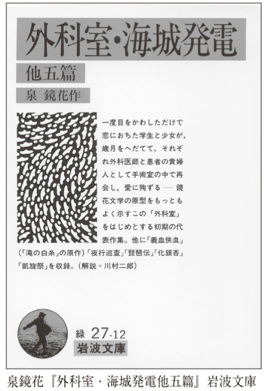
私は初めて、この作品を読んだとき、物語のすさまじさに思わず声をあげた。小説に限らず恋愛を扱ったストーリーは、死によって終わらねばならない。なぜって、恋愛が長く続くと、それはもはや恋愛ではなくなるからだ。だから、さまざまな作家が、さまざまな状況で恋人たちを殺してきた。だが、この鏡花のやり方は特にすごい。陰惨で意地悪という点では、勘違いで死んでしまうシェイクスピア『ロミオとジュリエット』だろうが、極限の再会という点では『外科室』に敵う作品はなかなかないだろう。
同じように愛と死を描いても、どうして『憂国』の登場人物は噓くさく、『外科室』のほうはそうでないのだろう。設定で言うなら、『外科室』のほうがめちゃくちゃではないか。
それは鏡花が、恋というものがいかに不思議であるかを示すために、極端な設定を作り、かつ、よけいな説明をいっさいしていないからだ。『牛鍋』ほどではないにしろ、言葉は節約されている。たとえば、女がどういう病気で、どう手術すればいいのか。どうして手遅れになったのか。そのようなことはいっさい書かれていない。肝心の場面だけが、暗闇の中にスポットライトで照らされているといった趣である。男の台詞「忘れません」も、どんなふうに発声されたか、おののいていたという以外、まったく書かれていない。だから、私たちは各人が、おそらくこんなだろうと漠然と想像しながら読む。
言い換えれば、鏡花は読者の想像力を信じ、任せている。読者は無意識のうちに、自分の頭でつじつま合わせをし、不都合は忘れて、話を脳裏に描く。だが、三島はセックスも自殺も、華麗で饒舌なレトリックを駆使して描写しないと気が済まない。だから、確かに手に取るようにリアルな像が浮かぶのではあるが、言うならそれはコンピュータ・グラフィックスのようなリアルさなのかもしれない。「こう描いてやろう」という作者の意志を強く感じさせてしまうのだ。巧みな詐欺師は、肝心なことについては口にしない。聞いている者が自然に思い込むように誘導する。鏡花のやり方はそれなのだ。
鏡花には他にもたくさん名作があるが、ことに『高野聖』は短く、おもしろく、読みやすい。しかも、奥行きのある謎があり、神秘がある。『外科室』が緊迫した瞬間芸だとしたら、『高野聖』はもっとのんびりした不思議物語である。それでいて最後、清められたようなすがすがしい空気があふれ出す。夢幻という言葉はこの作品のためにあるのかと思われるほどだ。
『義血俠血』は、『外科室』風のショッキングな設定の話。ある女に救われ、金銭的にも援助してもらって裁判官になった男が、運命の悪戯によって、この女を裁き、有罪判決を言い渡さねばならなくなる。さて彼はどうするのか？
何はともあれ、『憂国』や『外科室』は、男女の気持ちが重なり合った幸せな例である。でも、いつもいつも恋愛がうまくいくとは限らない。いや、うまくいかないほうが多いくらいだろう。
次に、強烈な片思いの作品を読んでみよう。
人間は正直でなければならない。まあ、一般的にはそういうことになっている。しかし、それと同時に誰もが、正直も時と場合によることを知っている。
「作家はあるがままの人間の姿を描くべきだ」。まあ、一般的に文学はそういうものである。
だが、いったいこれは......。武者小路実篤の『お目出たき人』（一九一一）を最初に読んだとき、私は冒頭のわずか一、二ページを読んで驚愕した。手にしていたのは新潮文庫だが、平和そうな装丁とは裏腹に、恐ろしくインパクトがある作品だったのだ。結論から言うと、これほどまでに私たちを啞然とさせ、絶句させ、失笑させてくれる強烈な主人公は、日本文学、外国文学を問わず、なかなかいないだろう。
書き出しはこうである。
一月二十九日の朝、丸善に行っていろ〳〵の本を捜した末、ムンチと云う人の書いた『文明と教育』と云う本を買って丸善を出た。
（新潮文庫版より引用。以下同）
どうということのない出だし。ふんふん、それで？
丸善を出た主人公は、路上でふたりの女を見かける。
二人とも美しくはなかった。しかし醜い女でもなかった。
ずいぶんな決めつけだ。でも、「殊に一人の方は可愛いゝ所があった」のか。ともかくも、まずは平穏な開始である。あまりに直接的かつ稚拙で、レトリックの気配すらない文章だが、特にあれこれ言いたくなるような内容ではない。
驚くのは、新潮文庫だとページをめくったところだ。
自分は女に餓えている。
誠に自分は女に餓えている。残念ながら美しい女、若い女に飢えている。七年前に自分の十九歳の時恋していた月子さんが故郷に帰った以後、若い美しい女と話した事すらない自分は、女に餓えている。
「女に餓えている」がまるで詩のリフレインのように四度も繰り返されて強調されている。この箇所で主人公は二六歳だということがわかるが、いくら若い男といっても、こうもしつこく言われると、まるで欲求不満を自慢しているようではないか。
この「女に餓えている」は不穏に過ぎるのだ。書店で本を買い求め、路上に出る。そこに女がいる。日常的で平和な風景である。ところが、「女に餓えている」という言葉は、まるでナイフのように、その平和を何度もグサリと突き刺すのである。何かに不満を持つ通り魔が手当たり次第に人を襲うように。
主人公は、町で幸せそうにしている若いカップルを見ると羨ましくてたまらず、それどころか呪いすらする。あげく、呪った自分が嫌になって、改めて自分の悲惨な境遇を確認する。――「自分は女に餓えているのだ」。
『お目出たき人』は、こういう女に飢えた若者が主人公の小説だ。世界中に多くの文学作品があるが、「自分は女に餓えている」と、ことあるごとに公言してはばからない主人公が登場する小説も稀有だろう。
しかも、この小説は、決して女に飢えた若者が暴力事件を起こすといったストーリーではないのだ。片思い、それもどうしようもなく馬鹿げた片思いの物語なのである。
女に餓えているのには理由というか前史があった。彼には、狙っているターゲットがいる。近所に住んでいる「美しい優しい可憐な女」である鶴だ。主人公は以前から鶴を知っていて、好印象を抱いていた。だが、まだ特別な気持ちを持つほどではなかった。それどころか「しかしすぐ忘れてしまっていた」。物語の中で重要な役を担う鶴なのに、あっけらかんと「忘れてしまっていた」と言われると、読者として身の置き場がないが、その程度の関心だったのである。
主人公は、その前には月子という女に恋していた。しかし失恋し、三年間を失意のうちに過ごした。その失恋の傷が癒えるとともに、鶴が俄然魅力的に思えてきたのである（脱線するが、渡辺淳一の『シャトウルージュ』（文藝春秋）という小説の中で、フランスにある秘密の城に連れて行かれ、さまざまな性的調教を受けるという女が月子という名前なのは偶然だろうか？）。
鶴が益々可憐に見え、可愛らしく見え、鶴に逢わない時は淋しくなった。
自分はその時分から鶴と夫婦になりたく思うようになった。鶴程自分の妻に向く人はないように思われて来た。自分の個性をまげずに鶴とならば夫婦になれるように思われて来た。かくて自分の憧れている理想の妻として鶴は自分の目に映ずるようになった。
女に餓えている自分はこゝに対象を得た、
若者が、特定の人間を理想化し、偶像化するのは不思議なことではない。というより、それこそ恋愛の最大のおもしろさのひとつであって、端から見るとバカみたいだが、「彼女はなんてすばらしいんだろう！」「彼はなんてすてきなんだろう！」、そう思い込めたほうが、恋は燃え上がる。
ウブな主人公の想いはどんどんエスカレートした。鶴と結婚するにはどうしたらいいか。近所の人からは笑われそうだ。母親をどう言って説得しよう。父親は？
そして、とうとう両親を説得し、間に人を立てて、鶴に求婚した。ただし、自分の名前は伏せて。「ある青年がぜひともお宅の鶴さんをお嫁にもらいたいと言っております。たいへんまじめな青年であり、将来も有望で......」などと言わせたに違いない。
この作品のタイトル「お目出たき人」とは、もちろん主人公のことだ。彼は、自分の両親を説得できたことに力を得、きわめて楽観的だった。求婚さえすれば、鶴は自分と結婚してくれると考えていた。「自分は其処まで思ったより容易に事が運んだので、十が九までうまくゆくと思っていた」――何しろ、主人公の家は、何かにつけ彼女の家よりも勝っていたし、女が自分を断る理由など思い当たらなかったから。
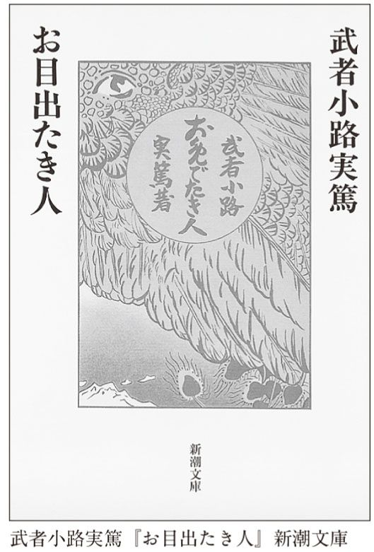
主人公は彼女と会うときを考えて胸をときめかせた。ファースト・キスはどうしようか、そんなことまで夢想した。
だが、彼の望みは満たされなかった。鶴の親は、まだ娘が若すぎることを理由に断ったのである。それどころか、彼女はちょっと遠いところに引っ越してしまった。寂しくなった主人公は、彼女の学校の近くをうろついて、さりげなく会おうと試みた。（この後も主人公は「会う」と何度も言っているが、事実上は一方的な「見る」である）
女に飢えている主人公は、簡単には諦められなかった。めげずに、もう一度プロポーズした。
今度はこっちの名を云った。そうして結婚するのは何時まで待ってもいゝと云った。自分は鶴を恋していた。そうして女に餓えていた自分は一日も早く鶴とせめて許嫁になりたかった。
「女に餓えていた自分は一日も早く鶴とせめて許嫁になりたかった」という言い方が何ともグロテスクでたまらないが、主人公の熱望とは裏腹に、またまた若すぎるからと断られた。主人公の不満はさらに高まった......。
こんなふうに鶴に冷たくあしらわれたせいで、主人公は、路上で女を見ては品定めをしたり、呪ったり、羨んだりしているのである。
恥ずかしげもなく「女に餓えている」と繰り返すこの主人公は、いったいどんな男なのか？ ここでようやく正体が明かされる。
自分はまだ、所謂女を知らない。
夢の中で女の裸を見ることがある。しかしその女は純粋の女ではなく中性である。
自分は今年二十六歳である。
そしてもう一度、彼は繰り返すのだ。「自分は女に餓えている」。
まだ女性経験がない二六歳の青年。夢の中で中性（！）の女を見る青年。彼はこれからどんなことをしでかすのか？
若者は、中年以降の人間に比べれば正直である。必ずしも正直であろうとして正直なのではない。しばしば正直でしかあり得ないから正直になってしまうのである。
鶴は理想の女に近いと主張しつつ、わが主人公はこうも言うのだ。
しかし自分は女に餓えている。鶴以外の若い美しい女は瞬間的に可なりつよく自分をひきつける。又年増の女でも、そう美しくない人でも、或瞬間には可なりの力を以て自分をひきつける。
まだ若いのだから、それも無理はないかもしれないが、さんざん鶴に対して空想を羽ばたかせつつも、他の女にも欲望を抱いてしまうのだ。
気味が悪い、と私は感じる。いろいろな女に欲望を抱く性欲旺盛なところが気味が悪いのではない。何のためらいもなく、あからさまにすべてを語ってしまうのが気味が悪いのだ。正直すぎるのが気味が悪いのだ。
この主人公は、二六歳にもなりながら、自分自身を客観視することがまったくできない。なるほど、自己の内面を表現するのは、文学作品の課題のひとつには違いない。しかし、「女に餓えている」ということは、読者が驚くほどしつこく繰り返して表現されねばならないことだろうか。主人公は、自分の欲望や思い、つまり自分自身を肯定しすぎてはいないだろうか。
近頃、インターネット上で自分の毎日の生活内容を発表する人々が増えている。私は彼らのやり方にもこの『お目出たき人』と同様の気味の悪さを感じる。日々の喜怒哀楽を表現したいという欲望は誰にもあろう。けれど、その段階を超え、何を食べたとか、体重がどうなったとか、いちいち大勢の人々の前にさらしたくなるというのが大人げなく思われるのだ。たしなみがないと言ってもいい。
主人公の心の中で鶴は理想の女として美化される。けれど、主人公は同時にこんなことも言う。
しかし自分はいくら女に餓えているからと云って、いくら鶴を恋しているからと云って、自分の仕事をすてゝまで鶴を得ようとは思わない。自分は鶴以上に自我を愛している。いくら淋しくとも自我を犠牲にしてまで鶴を得ようとは思わない。三度の飯を二度にへらしても、如何なる陋屋に住もうとも、鶴と夫婦になりたい。しかし自我を犠牲にしてまで鶴と一緒になろうとは思わない。
女に餓えて女の力を知り、女の力を知って、自我の力を自分は知ることが出来た。
しかし女の柔らかき円味のある身体。優しき心。なまめかしき香。人の心をとかす心。あゝ女と舞踏（ドイツ語で踊ること〔筆者注〕）がしたい、全身全心を以て。いじけない前に春が来てくれないと困る。
自分は自我を発展させる為にも鶴を要求するものである。
絶句である。さんざん鶴を恋していながら、自分や仕事のほうが鶴よりも大事だと言い放つ。かわいくない男だ。どうせなら、すべてを捨ててでも鶴と結ばれたいとか何とか、噓でも言えないものか（それに、三度の飯を二度に減らしてもと言われると、基本的に一日二食の私としては立つ瀬がない）。
主人公はあまりにも身勝手である。理想の女と結婚できれば、落ち着いて自分を発展させられる。だから、自分は鶴を要求すると言うのだ。鶴の気持ちなど、髪の毛一筋ほども考えていない。
それにしても、この主人公は最低である。これほどまでに情けない男も文学史上稀かもしれない。彼女に会いたいが（といっても見るだけなのだが）、今日は金曜日で、西洋人にとって縁起が悪い日だから止める。あげく、唐突にこう言い出す。
自分はどうもたゞの空想家らしく思えていけない。何事も出来ず。これはと云う面白いこともせず。そうして天災で若死するような気がする。これも空想だろうと思うが、自分は雷か、隕石にうたれて死ぬような気がする。
さもなければ肺病になって若死するかも知れない気がする。どうも自分はなが生しないような気がする。しかしそうかと思うとなが生出来そうな気もする、中々死にそうもないと思う。しかし天災、中でも雷と隕石があぶない。
またもや絶句。支離滅裂なうえ、自分はどこかから来る怪電波や電磁波で狙われているみたいな話ではないか。
したいこともしないで自分は死んでしまうのかと淋しくなった主人公は、気分を紛らわすために外に出る。しかし、歩いているうちに、ますます淋しくなって涙が出る。
こうなると自分の人格が一段と高くなったような気がする。そうして道ゆく人より自分の方が一段と偉いような気がする。すべての人を憐み、すべての人に同情するような気になる。
再び言おう。この作品のタイトル、「お目出たき人」とは、本当にズバリの命名である。以後も、主人公はすばらしいおめでたさを発揮し続ける。切りがないので、あと一カ所だけ挙げよう。
自分は男だ！ 自分は勇士だ！ 自分の仕事は大きい。明日から驚く程勉強家になろうと自分は自分を鼓舞した。その内にねてしまった。
そして結末は？
当然、こんな男が鶴に愛されるはずはない。主人公のもとに鶴との仲介を頼んだ人から手紙が届く。彼女はとうとう他の男と結婚してしまったという報告だった。恋愛結婚だった。主人公は泣き出す。
それからしばらく、主人公は淋しい失恋の日々を送るが、全体を閉じる一〇行ほどが恐ろしい。『お目出たき人』全体の白眉である。
其後暫らくして自分は何時のまにか鶴は自分を恋していてくれたのだが父や母や兄のすゝめで進まずながら人妻になったのだと理由もなしに思うようになった。そうしてそれから一月もたった。今は鶴をあわれむような気分になった。そうして鶴の運命が気になりだした。
自分はこの感じがあやまっているか、いないかを鶴に逢って聞きたく思っている。
しかし鶴が『妾は一度も貴君のことを思ったことはありません』と自ら云おうとも、自分はそれは口だけだ。少くも鶴の意識だけだと思うにちがいない。
実に薄気味悪い結末ではないか。ここまで来ると、バカにつける薬はないと言うしかない。主人公は、最後の最後まで自分の妄想から逃れられない。たとえ相手が何を言おうが、それは本心ではない、無意識では違うように思っていると受け取る。「彼女は僕を愛しているに違いない」と思い込んでストーカーになる人たちは多いが、この主人公もまさにそのタイプなのである。
私が知っている限り、こんな気味の悪い結末を持つ小説はあとひとつだけだ。イギリスのジョン・ファウルズという人が書いた『コレクター』である。この小説では、自分好みの女の子が欲しくてたまらない男が、ある少女を誘拐し、家に閉じこめてしまう。しかし、少女は病気で死ぬ。男は絶望して自殺しようとするが、考え直す。少女が自分を誘拐した男を好きになるわけがないのは当然至極なのだが、男は、彼女は頭が良すぎたので自分を好きになれなかったに違いないと考え、次はもっと素朴な女の子を誘拐しようと町に出ていくのである。まさに『お目出たき人』同様、自分の妄想を貫徹する男の物語である。『お目出たき人』の気味の悪さが気に入った人には、いや、そうでなくても非常におもしろいので強くお勧めする。
さて、私にはこの作品は、正確にはこれに限らず武者小路の作品は、文学のある一面をよく表しているように思われる。
つまり、一般的には作家はインテリだと思われている。頭がよくなくては、小説など書けないと思われている。文章がうまくないと作家になれないと思われている。
おそらく、だいたいの場合はその通りだろう。誰も下手な文を読んではくれまいし、印刷などもってのほか。
しかし、いつもいつも、そうではない。文章の名人が書けないことを、下手だからこそ書けてしまうということが起きる。下手なように見えてうまい「へたうま」なのではない。本当に下手なのだ。でも、それが表現力となってしまうのだ。
こういう言い方はどうかと思われる方もいらっしゃるかもしれないが、この作品に限らず、武者小路の文章は頭が悪そうである。しかし、だからこそ、頭がよくて利口な人には書けないことを書けてしまうということもあるのだ。
三島由紀夫や川端康成のような人たちには、『お目出たき人』みたいな作品は絶対に書けない。彼らはもっとスマートに、巧みに言い表そうとするだろう。思わず感嘆の声を漏らしてしまうような美しい書き方をするだろう。あるいは「笑ってください」とばかりに滑稽な文体を駆使するだろう。
でも、そんなことをすると（それはそれでおもしろい小説にはなるだろうが）、「自分は女に飢えている」と繰り返すしかない男の無力さ、愚かさ、救いようのなさは絶対に出てこない。滑稽と悲哀が入り交じらない。たとえば、三島の『金閣寺』には、柏木という一種の悪人が登場する。とても魅力的なキャラクターで、私などは読みながらニヤニヤしてしまうのだが、頭がいい人が書いただけに、詰まるところ「頭がいい悪人」になってしまっている。もっと素朴な悪人のようなものは、三島や川端の手には負えないのではないか。
バカの力とか、バカの真実と言うとあまりにも傲慢に響くかもしれないが、そのようなものが存在することは事実なのだ。たとえば、クラシック音楽の世界で言うと、シューベルトという作曲家がそうだった。シューベルトはベートーヴェンを尊敬したが、ベートーヴェンみたいに知的な凝った曲は書けなかった。それで悩んだ（同じようにベートーヴェンを尊敬していても、ブラームスには凝った複雑な音楽が書けた）。しかし、シューベルトならではの才能は、ベートーヴェンみたいな曲を書くということ以外のところにあった。すごく単純なメロディなのに、不思議なニュアンスがこもっている――これこそがベートーヴェンもできなかった、シューベルトならではの音楽の才能だったのである。
そういったことは芸術の世界にはままあることだ。テクニシャンであるダリの絵が力ずくのゴッホより必ずしもすばらしいということはない。同様に、名文家が常に一番とは限らない。三島や川端のような文学を武者小路は書けなかったが、その逆でもあったのだ。
それぞれの人が、自分なりの表現方法を持っている。文学や芸術に接するとは、そういったその人なりの表現方法を味わうことだ。
『お目出たき人』を読んでいるとあちこちで、「ふざけるな、この野郎」とか「何言ってるんだ、バカ」と心の中で罵ってしまう。でも、読むのを止めはしない。このバカがどうなるのか知りたくて、ついついページを繰ってしまう。知らぬうちに物語の中に引き込まれてしまっているのだ。
私たちの誰ひとりとして、おめでたさを完全に免れている者はいまい。『お目出たき人』は、バカを笑った途端に背筋が寒くなる、そういう作品である。ただひとつ気になるのは、作者がこれをどの程度本気で書いたのかということ。もしかして、滑稽さをまったく感じずに書いてしまったのか。だとしたら、この作品はますます恐ろしい。
武者小路には『友情』という作品もある。これまたなかなかに強烈な内容で、友人どうしでひとりの女を奪い合う話である。どう見てもその女がずるがしこい悪女なのに、友人たちは（おそらく作者も）気づいていない。これまた実におめでたい。とうとう最後、友人から贈られた尊いベートーヴェン像を床にたたきつけて物語が終わるというシーンも、作者や登場人物は大まじめなのだが、ニヤニヤさせられてしまう。
さて、こうした家庭の味というか、飾らぬ、飾れぬ文学を読んだあとには、その正反対、洗練の極致を行く名作にしよう。
本書にはいろいろな作家が登場するが、もし私が誰かひとりだけ、「あんな文章が書けるようになりたい！」という人を選ぶとしたら、これはもう絶対に川端康成である。
川端の文は、特に大げさな美文調だったり、重々しかったり、逆になれなれしかったり、滑稽だったりしない。けれど、あちこちに「うわ、こんな文章、自分には書けない！」と溜息を漏らしてしまうような箇所がある。それでいて、「どうだ、オレの文、いいだろう？」という作家の自慢たらたらが聞こえてきそうな押しつけがましさはゼロ。興奮しないで、常にクール。読者のことなど考えていないようでいて考えている。実に憎いのである。かっこいいのである。
川端と言えば、もっとも有名なのは『伊豆の踊子』と『雪国』だが、後者の最後の一行には、最初読んだとき、すっかり度肝を抜かれた。痺れた。これから読む人もいるだろうから、あえて書かずにおくが、「エッ、エッ、エッ、何これ？ こんなのあり？」とうなってしまったのである。意外性という点では、さんざん楽しいデートをした一日の最後、別れ際にいきなり「あなたって最低！」と言われるようなもの。何が起きたのかわからず、呆然とするような、一瞬にして作品が読者を置き去りにし、手の届かない彼方へ消え去ってしまうような終わり方なのだ。
その川端の最高傑作と評価されているのが『眠れる美女』（一九六一）である。事実、すばらしい作品である。それは頭の一、二行を読んだだけでわかる。
たちの悪いいたずらはなさらないで下さいませよ、眠っている女の子の口に指を入れようとなさったりすることもいけませんよ、と宿の女は江口老人に念を押した。
（新潮文庫版から引用。以下同）
全然難しい文ではない。気取った文章でもない。なのに、これを読んだだけで、私たちは突然、別世界に連れて行かれる。どんな話が始まるのか、一瞬にして期待が高まる。謎めいた誘惑に満ちた開始なのだ。
川端と言うと、ノーベル賞受賞者とか、日本の美意識を代表する作家などというイメージがある。が、彼は基本的には平明を愛する作家である。読者がごく自然についてこられるよう、親切な心配りを忘れない作家なのだ。たとえば、この作品の題名。『眠れる美女』と聞くと、私たちは即座に有名なバレエ『眠りの森の美女』を思い浮かべる。当然、あれを念頭に置いてのネーミングに違いない。実は、作品を読んでいくと、この題名は適切でないことに気づく。登場するのはごく若い少女たちが大半である。しかし、読者に対する浸透力や語感という点なら、『眠れる美少女』というより『眠れる美女』のほうがいい。
川端のサービス精神はちょっと驚くほどだ。今引用した冒頭にすでに登場している江口老人。この人こそが、大事な主人公なのだが、命名は、「え、そんな」と呆れるほどのダジャレ・センスによっている。話が進めばわかるように、彼は女好きの道楽者である。つまり江口老人は江口老人なのだ。そして、突然死んでしまう太った老人は、「福良老人」と呼ばれている。太っているから「ふっくら老人」なのだ。一般的に、作家は登場人物の命名に相当気を遣う。深い意味が隠されている場合も多い。しかし、いいんですか、ノーベル賞作家ともあろうものが、こんな安易な命名をおこなっていて。私はこれに気づいたとき、へなへなと力が抜けた。かといって、『眠れる美女』がコミカルな作品かと言えばそんなことはまったくなく、きわめてシリアスかつ憂鬱な気分に包み込まれているのだから、この文豪の感覚には恐れ入るしかないではないか。
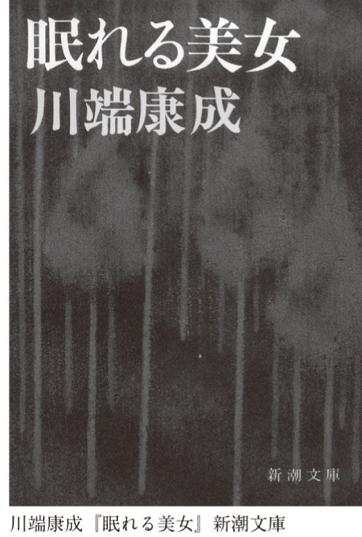
それはそれとして、話を進めよう。
冬、江口が訪れたのは一軒の宿である。それも、看板も出ていないような怪しげな宿。その宿の女が、江口に、眠っている女の子に悪戯をしてはいけないと釘をさしたのである。
江口は知人からこの不思議な宿について聞き、今日初めてやってきたのだった。ここでは客は女の子といっしょに眠ることができる。女の子たちは睡眠薬を飲まされており、朝までは決して目を覚まさない。どんなお客が隣で寝たかを知ることもない。
客に許されているのは、彼女らといっしょに眠ることだけだ。セックスはもちろん、性的な悪戯もしてはならない。それゆえ、ちゃんと紹介者のいる「安心出来るお客さま」だけがここに泊まることができるのだ。
「安心出来る」とはどういう意味か。身元がはっきりしていて金払いがいいというだけではない。老人ということである。少女を犯そうとしてもできない男ということだ。実は、六七歳の江口はまだそこまでは老いていなかったけれど、欲望をコントロールすることはできる。哀れな老人たちの慰めの場であるこの宿のルールを破るつもりは彼にはない。
江口が寝室に入ると、美しい娘がすでに横たわっていた。深く眠っていて、彼が手を触れても起きる気配はない。娘は全裸である。娘のあたたかさを感じながら、江口はここに通う老人たちの悲しみを想像する。娘の匂いをかぐと、遠い過去の思い出がいろいろと蘇ってくる。おかげで目が冴えて眠れないので、睡眠薬を飲むと、今度は悪夢に苦しめられる。
しかし、寝苦しい一夜を過ごしたわずか二週間後に、江口はどうにもたまらなくなって再び宿へやって来る。今度準備されていたのは、別の娘である。この娘は最初の娘よりもはるかにエロティックである。顔立ちが艶っぽいだけでなく、求められてもいないのに、男を誘うような姿態を見せるのだ。
江口は今度は自分をあえて抑えることをせず、娘を犯そうとする。が、思いがけず娘が処女であることに気づき、中断する。これほどまでに色っぽい娘が処女でいられるのは、他の客たちの「凄惨な衰亡のしるし」に他ならない。「娘の純潔がかえって老人どものみにくさのよう」に思われる。
娘は寝言を言う。目覚めたのかと思った江口は、それに答えたり、質問したりする。が、それはしょせん寝言であり、まともな受け答えになろうはずもない。にもかかわらず、娘と会話らしいことができるのに江口の心はときめく。
やがて眠っている娘は江口を抱く。「老人はそのまま静かにしていた。目をつぶった。あたたかくうっとりして来た。ほとんど無心の恍惚であった」。江口は「若い生のめぐみ」に陶然とする。
その頃、知人の福良老人が睡眠薬で自殺したと知らされる。葬儀に行くと、ある男がそっと耳打ちする。福良老人は自殺したのではない、例の宿で眠っている最中に心臓発作か何かで死んだのだ、と。
そんな話を聞いても、この宿の魅力にすっかり取り憑かれた江口は、繰り返し訪れる。毎回、違う娘が寝かされている。今晩の娘は、色黒で、いかにも健康そうである。しかもひとりだけではなく、もうひとり色白な娘もいる。ふたりにはさまれて息絶えたら、老人としては本望だろうと思いながら、自分も睡眠薬を飲んで眠りに入る。
だが、ふと目覚めると、色黒の娘が冷たくなっている。ぎょっとして確かめると、脈が止まっている。驚いた江口老人は、呼び鈴を押して宿の者を呼ぶ。
宿の女は慌てるが、このような秘密の場所を世間に知られてはならない。娘の死体はいずこへか運び去られ、江口はもうひとりのまだ眠っている娘が待つ寝室へと戻る。
だいたい、すぐれた文学作品は、ストーリーの要約など記したところで、味わいの大半は失せてしまうが、特にこの作品はそれがはなはだしいと思われる。何度も何度も謎の宿を訪れる江口老人、それだけの話になってしまう。
この作品の価値は、そうしたストーリーの大枠にあるのではない。江口は眠っている娘たちのかたわらに横たわりながらさまざまな過去を思い出す。あるいは、眠りながら、いろいろな夢を見る。人生の諸相が語られる。それがこの小説のメインディッシュと呼んでいいだろう。その一部だけを選んでも、作品の妙なる美しさを壊すだけになってしまう。
江口が思い出し、夢見るのは女たちのことばかりだ。過去の甘い体験、苦い体験が、次々に脳裏に浮かぶ。愛人のこと、娘のこと、母のこと、妻のことが、走馬灯のように頭の中を巡る。それが何とも切ない。この微妙にして深い味わいを伝えるのは、私の手にはあまる。原作を読むしかない。川端は、三島のようにあからさまに説明しようとはしない。静かに起伏する夜の海のような文章なのだ。文章の息が長いから、ちょっとだけ引用してすませるということができない。だから、残念ながら、これまた唐突に、放り投げるようにして終えられる最後を紹介するのも断念せざるを得ない。ゆっくりとしたリズムを刻む文章が突然乱れ、一気に駆け出す緊迫感は全体を通して読まないと堪能できないからだ。
この作品に登場するのは、事実上たったふたりである。江口老人と、謎の宿の女だ。この女の冷たい曲者ぶりも見事だ。ふたりの対話は簡潔だが、まるで名手の合奏のようである。名優の対決のようである。そのへんに溢れている小説に出てくる会話とぜひ比べてみてください。格が違いすぎることが痛感できるだろう。
全体は濃いメランコリーの色に染まっている。その中に幻のように現れてくるさまざまな女たちの姿。子供のときの、青年のときの、中年のときの、そして老人になった江口の姿。まったく溜息をつくしかないような美しくも哀しい作品である。
川端はノーベル賞を得たが、同じように候補だった志賀直哉や三島由紀夫などは結局もらえずに終わった。けれど、『眠れる美女』を読むと、それも至当だと思えてくる。
ノーベル賞の授賞式のとき、川端は有名な「美しい日本の私」というスピーチをした。「美しい日本の私」と言えば、谷崎潤一郎を挙げないわけにはいかない。
この本を読んでいるあなたが男性なのか、女性なのか、私にはわからない。しかし、もしあなたが男性なら、私はひとつ質問をしたいと思うのだ。
あなたは、あるとき、自分のガールフレンドや妻がひそかに自分を裏切っていたと気づいてしまったことはありますか？
貞淑な、夫思いのおとなしい妻だと思っていたら、昼間はテレクラで男遊びに耽っていたとか。自分を熱愛してくれていると思ったら、他にもボーイフレンド、セックスフレンドがいたとか。二股どころか、三股、四股、それ以上だったとか。
はい、と答えたあなたには、もうひとつ質問をしたい。
あなたはそれを知ったとき、怒りや悲しさとともに、あるいはそれ以上に、不思議な気持ちの高ぶりを感じましたか？ それとも歓びを感じましたか？ いっそ感嘆の念さえ抱きましたか？
はい、と答えたあなたは、きっと谷崎潤一郎の文学が大好きである。いいえ、と答えたあなたには、谷崎はたぶん遠い存在だ。なぜなら、谷崎の作品には繰り返し繰り返し、男を裏切り、傷つけ、そのくせ魅了してしまう女が登場してくるのだから。
ひとことで言えば、悪女ということになる。この「悪女」という言葉には二重のニュアンスがある。ひとつは言うまでもなく、とんでもない女、許せない女といった否定的な意味。だが、もうひとつは、はっきりと定義はできないけれど、それに偉大と呼ぶほどではないかもしれないけれど、賛嘆がこもった意味。たとえば、「無能」という言葉には、否定的な意味しかない。しかし、「あいつは悪女だ」と言う男の心の中には、しばしば「いい女だ」とか「つき合ってみたい」、それどころか「滅ぼされたい」といったひそかな欲望が淀んでいる。
こういった悪い女に対する男の思い入れは、ほとんどいつの時代にもあったのかもしれない。男を破滅させる女はさまざまな文学や絵画やオペラといったものの中で幾度となく描かれてきた。
しかし、谷崎が好んで描いた女たちは、結果的に男を破滅させるのではない。もっと積極的に男を支配し、女王様のようにふるまってしまうのだ。ただ破滅させるのではなく、男にも歓びを与える。男は喜々として女に従う。ふたりの間には妖しい関係が作り出されるのだ。
谷崎潤一郎と言えば、『春琴抄』がもっとも知られた作品だろう。私が小学生のとき用いていた参考書にも載っていた。男が自分の目を突いて盲人になってしまうなんて、子供心にも気持ち悪い話だと思った。実際、これは大人になって読むと、かなりいかがわしい作品なのである。
『春琴抄』の女主人公、春琴は美貌の琴演奏者だ。しかし、性格は悪い。特に男の弟子をいじめて、打ったり殴ったりする。「稽古に事寄せて一種変態な性慾的快味を享楽していたのではないか」と作者自ら書くとおりである。弟子の佐助は、こんな春琴にまめまめしく仕え、稽古ではいじめられてひいひい泣く。あげく、自分の目をつぶしてしまうのである。もう勝手にしてくれと言いたくなるようなストーリーだが、どういうわけかこんな作品が子供向けの参考書に出ているわけだから、楽しい。
結論から言おう。谷崎は日本文学の代表選手として海外でも非常に有名だが、ハッキリ言って、ヘンタイだ。ヘンタイとカタカナで書いたのは、気味は悪いのだけど憎めないところがあるからだが、変態と漢字で書いても本当は一向構わない。手鏡を持ち歩いて逮捕された大学院教授がいたけれど、あれなんて、谷崎に比べれば全然何でもない。谷崎を文豪と呼んで敬意を表している国が、どうして手鏡ごときで大騒ぎするのか、私にはわからない。あとで説明するけれど、手鏡は、谷崎なら大喜びをするであろう日本的美学なのだ。そう言って擁護する人が全然いないのは、悲しいことだとすら私は思っている。
それはともかく、『源氏物語』からこのかた、エロは日本文学における最大の関心事のひとつだった。世界的に見ても、エロは文学の最大のテーマのひとつなのは言うまでもないことだが、ことに日本文学は昔から今まで、積極的である。だが、谷崎が描く男女の世界はただの男女関係ではない。
論より証拠、まずは谷崎の短編を読んでみよう。本書では手っ取り早く谷崎のヘンタイ世界を知るために、『少年』と題された二〇ページほどの作品を紹介する。
主人公の〈私〉は一〇歳くらいの少年である。あるとき、授業が終わり、学校を出ようとすると、同じクラスの塙という子供から、声をかけられる。この子は学校中でも評判の意気地なしで、泣き虫弱虫とバカにされ、遊び相手もいない。
〈私〉が何の用事かと尋ねると、これから家へ来て遊ばないかと言う。不審に思ったが、塙はよく見ると美少年で、着ている服もきれいである。付き添いの女中も頼むことだし、〈私〉は一度自宅に帰って断ってから行くと約束する。立派な家の子となかよくなるのは、何となく嬉しかったのである。
塙の家はたいそうな屋敷である。立派な庭があり、池があり、築山がある。そのうえ、大勢の大人や子供がいるので、〈私〉はすっかり物怖じしてしまう。
女中は〈私〉を塙のところに連れて行く。ふたりが座敷で遊んでいると、一三、四歳の塙の姉が現れる。塙はこの姉、光子に対しては乱暴にふるまうが、というのも彼女が妾の子だからである。
不思議な音が西洋館から聞こえてくる。当時まだ珍しかったピアノである。〈私〉と塙が憧れをもって西洋館を眺めていると、同じ学校の上級生の仙吉が現れる。この子供は、年下の子供たちをいじめて喜ぶ悪いガキ大将だが、塙家の「馬丁」（馬の世話や口取りをする人）の息子であるため、塙には「坊ちゃん、坊ちゃん」とへりくだっている。一方、塙は仙吉に対しては暴君のように手荒い。〈私〉はふたりの力関係がふだんとは正反対なので、仰天する。塙の暴君ぶりはこんな感じだ。
「そんなら三人で泥坊ごっこしよう。あたしと栄ちゃんがお巡査になるから、お前は泥坊におなんな」
「なってもいいけれど、この前見たいに、非道い乱暴をしっこなしですよ。坊ちゃんは縄で縛ったり、鼻糞をくッつけたりするんだもの」
（新潮文庫版から引用。以下同）
泥棒役の仙吉は、隠れているのを見つけられると、「さあ来い。誰でも傍へ寄ると小便をしっかけるぞ」と言うが、塙が残忍にも棒で突くので、降参する。塙は、仙吉を縛り上げると、拷問を始める。
それから仙吉の髪の毛を引っ張ったり、頰ぺたを摘まみあげたり、眼瞼の裏の紅い処をひっくりかえして白眼を出させたり、耳朶や唇の端を摑んで振って見たり、芝居の子役か雛妓の手のようなきゃしゃな青白い指先が狡猾に働いて、肌理の粗い黒く醜く肥えた仙吉の顔の筋肉は、ゴムのように面白く伸びたり縮んだりした。それにも飽きると、
「待て、待て。貴様は罪人だから額に入墨をしてやる」
こう云いながら、其処にあった炭俵の中から佐倉炭の塊を取り出し、唾吐をかけて仙吉の額へこすり始めた。
上品そうな美少年がこんなことを......まるで人が変わったような塙少年の姿を見て、〈私〉は愕然とする。
次に塙がやりたがったのは、「狼と旅人」ごっこである。狼役の塙が仙吉を捕らえて殺す様子が真に迫っているので〈私〉は怖くなるが、逃げられない。とうとう塙は旅人たちを食い始める。
やがて信一（＝塙〔筆者注〕）は私の胸の上へ跨がって、先ず鼻の頭から喰い始めた。（中略）胸と腹とは信一の生暖かい体の重みを感じている。潤おいのある唇や滑らかな舌の端が、ぺろぺろと擽ぐるように舐めて行く奇怪な感覚は恐ろしいと云う念を打ち消して魅するように私の心を征服して行き、果ては愉快を感ずるようになった。忽ち私の顔は左の小鬢から右の頰へかけて激しく蹈み躪られ、その下になった鼻と唇とは草履の裏の泥と摩擦したが、私はそれをも愉快に感じて、いつの間にか心も体も全く信一の傀儡となるのを喜ぶようになってしまった。
やがて私も俯向きにされて裾を剝がされ、腰から下をぺろぺろと喰われてしまった。
エロティックで妖しい触覚の世界を楽しむ子供たち。けれども、これはまだ序の口だ。
この日は遅くなったので、〈私〉は帰る。「恐ろしい不思議な国から急に人里に出て来たような気がして、今日の出来事を夢のように回想しながら」。
四、五日たつと、また「女中」に誘われて〈私〉は塙家に遊びに行く。今度は光子もいっしょだ。塙は、酒で仙吉を酔わせる算段で、どんどん飲ませる。仙吉だけでなく、他の三人も酔っぱらう。仙吉は狐ごっこをしようと提案する。光子が狐役をやり、美女に化けて男たちを騙すという遊びだ。
「二人とも化かされてるんだから、糞を御馳走のつもりで喰べるんだよ」
光子は面白くて堪らぬようにゲラゲラ笑いながら、自分の口で喰いちぎった餡ころ餅だの、滅茶滅茶に足で蹈み潰した蕎麦饅頭だの、鼻汁で練り固めた豆炒りだのを、さも穢ならしそうに皿の上へ堆く盛って私達の前へ列べ、
「これは小便のお酒のつもりよ。――さあお前さん、一つ召し上がれ」
と、白酒の中へ痰や唾吐を吐き込んで二人にすすめる。
「おおおいしい、おおおいしい」
と舌鼓を打ちながら、私も仙吉も旨そうに片端から残らず喰べてしまったが、白酒と豆炒とは変に塩からい味がした。
塙の扮する侍がこの悪い狐を捕らえ、縛り上げる。そして、今度は男の子たちが、光子を「糞攻めにしてやるぞ」と唾やら餅やらで塗りたくってしまうのである。
子供たちの遊びは切りがない。次は犬を二匹連れてきて、今度は全員が犬のようになって遊び始める。〈私〉は塙の足の指をなめながら、「人間の足は塩辛い酸っぱい味がするものだ」と思う。
それから毎日、このような遊びが続く。遊びはエスカレートする一方で、塙は小刀まで持ち出して、それで体を少し切らせてくれとまで言い出す始末。
この作品のクライマックスは、西洋館に入るシーンである。それまでなぜか男の子たちには入ることが禁じられてきた西洋館。男の子たちは光子を拷問し、ついに連れて行く約束をさせる。
見つかると叱られるがゆえ、夜遅く出かけていくが、待ち合わせの場所には、〈私〉の他、誰もいない。〈私〉は恐る恐る建物に入る。
中は、怖いほどの静けさである。ふと気づくと、蛇の置物がある。いかにも真に迫っていて、見ているとやがて動き出したように思われる。〈私〉がゾッとしたとき、光子が姿を現す。
今夜の光子はことのほか美しく艶っぽい。
「栄ちゃん」
と、牡丹の花弁を啣んだような紅い唇をふるわせた一刹那、私は始めて、あの油絵が光子の肖像画である事に気が付いた。
「......先刻からお前の来るのを待って居たんだよ」
こう云って、光子は脅やかすようにじりじり側へ歩み寄った。何とも云えぬ甘い香が私の心を擽ぐって眼の前に紅い霞がちらちらする。
恐怖に打ち震える〈私〉を光子は奥へ連れて行く。真っ暗な部屋に入り、蠟燭に火をつけた光子は言う。「ほら仙吉は此処に居るよ」。
なんと、燭台と思ったのは、仙吉だった。縛られ、額に蠟燭を載せて、仰向いてすわっているのだ。顔もどこかしこも、「鳥の糞のように」溶け出した蠟に覆われている。
〈私〉もまた、仙吉と同じように燭台にされ、切なく涙を流すが、光子の香水の香りはあくまで甘い。そして彼女は、おもしろいものを聞かせてあげるからと、隣の部屋でピアノを弾き始めるのだった。
この日以来、〈私〉も仙吉もすっかり光子の奴隷となる。やがて塙も同じ道をたどる。光子は増長して、「鼻の穴の掃除を命じたり、Urineを飲ませたり、始終私達を側へ侍らせて、長くこの国の女王となった」（Urine＝小便）。
なるほど子供は時に変な遊びに興じるものである。だが、ここに記された遊びの数々は、現代の性風俗のようではないか。大人が怪しげな店に行って楽しむ各種プレイと本質的にはどこも変わらない（あるいは、逆に、大人が子供のような遊びに興じているとも言えるかもしれないが）。いちいち説明するまでもない妖しい歓びがここには描かれている。
けれど、谷崎の文学は単にエログロ趣味なのではない。危険な領域に触れてもいるのだ。つまり――美しさとわがままは矛盾しない。というより、わがままは美しい。美しい人間はわがままでなければならない。
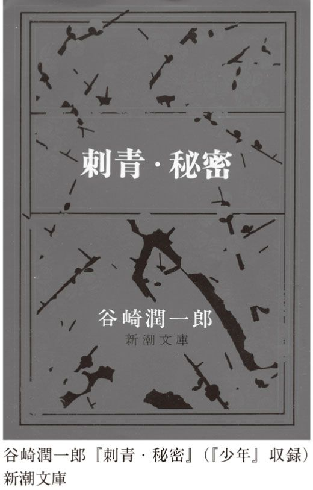
これはひどく反社会的なテーゼではなかろうか。谷崎が描く美しい人間は、みなわがままである。なぜなら、わがままとは自由だということを意味するから。そして、他人を屈服させる強さを持っていることを意味するから。私たちの社会では一般的にわがままはよくないことだとされている。誰もがみんな自由で強くはいられないからだ。必然的に誰かは不自由で弱くなければならない。けれど、あからさまにそう言うわけにはいかない。だから、私たちの社会はみなが少しずつ不自由で、少しずつ弱くなるように調整されているのだ。
だが、強い人間が美しい、というのは、実は誰もがうすうす知っている真実ではないだろうか。とするなら、弱い人間は醜いというのも真実ではないだろうか。しかし、それは言ってはならない真実なのだ。谷崎の作品は遠回しに、そのタブーに触れている。そこが危険なのだ。幸いと言おうか、谷崎の文学は一見すると、マゾヒストの妄想のように見える。変態趣味の羅列のように読める。だから、みんな油断している。が、本当はそれにとどまらない。実は谷崎の文学が示してしまった真実は、漱石や鷗外よりよほどヒリヒリするものなのだ。
ちなみに、マゾヒストという言葉は、一九世紀のオーストリアの作家レオポルト・フォン・ザッハー＝マゾッホという人の名前から来ている。このマゾッホは、谷崎同様、男が女の奴隷になって喜ぶといった小説を飽きることなく書き続けた。これがなんと当時はバカ売れで、立派なベストセラー作家だったのである。しかし、ある精神病理学者が、強い女に虐待されて喜ぶのは変態性欲の一種だと断じ、マゾヒズムなる用語を発明して以来、すっかり落ちぶれてしまったのだ。それに比べれば、文豪としてもてはやされ続けた谷崎は超ラッキーだったと言えよう。
谷崎作の有名な『痴人の愛』、濃密なレズビアンの物語『卍』、処女作『刺青』では、最後、女主人公がまるでがばっと衣服を脱ぎ捨てるかのように悪女としての真実の姿をさらす。その点では、この『少年』と基本的な構図はいっしょと言える。特に『卍』の最後はあくどい。
それらとともに忘れられないのはエッセイ『陰翳礼賛』だ。これは日本の名エッセイのひとつとされていて、実際とてもおもしろい。なるほどと思われる箇所もあちこちにあるが、同時にヘンタイ的な要素もたっぷり含まれている。
要するに、西洋の照明のように全部明るく照らしてしまわないのが日本独自の美意識であると言っているのだが、さまざまな例を持ち出し、脱線し、はては匂いの美学まで語り出す。日本の建築で一番風流にできているのは便所であると断言し、便器は木製がいいとか、理想の便所観を披露する。ともかく楽しく読めるエッセイである。もしＴＯＴＯやＩＮＡＸといった会社に就職したい人がいたら、必読だろう。
薄暗さを褒め称え、微妙さを愛する谷崎流美学にのっとって言うなら、手鏡で女性のスカートの中を覗く行為は、闇の中で見えるか見えないかという微妙さを味わうきわめて日本的なものであり、伝統的な美意識によっていると言うほかない。もっとも、覗かれる女性は不愉快には違いあるまいが。
谷崎の場合は、子供らしいというか無邪気に、軽々、やすやすと変なことを書いてしまう。いつもあっけらかんとしている。だから書かれている内容のわりには、ベタベタしていない（失礼ながら、彼が愛して止まない木製便器のようなものかもしれない）。この谷崎のヘンタイがからっとした明るいヘンタイだとするなら、次の章ではジトジト暗いヘンタイに触れねばなるまい。
江戸川乱歩と言えば、少年探偵団。子供のとき、明智小五郎と少年探偵団が活躍する物語に夢中になった人は多いだろう。
どうして、子供たちは怪人二十面相の話に夢中になるのか。少年探偵団の活躍のせい？ 明智小五郎がかっこいいから？
もちろん、そういったことも理由ではある。けれど、もっと大きな理由があるのではないか。江戸川乱歩が書いた少年読み物とそこらへんの児童文学の最大の違いは、「怖さ」である。その怖さこそが、子供たちを誘惑するのだ。得体の知れない謎。残酷な処刑装置。無惨に殺される美少女。バラバラにされる死体。不気味な変装。気味が悪い登場人物たち。頭のおかしそうな博士。どれもこれも、子供向きにしては刺激が強すぎる。が、まさにその強すぎる刺激に痺れるために、子供は乱歩を読み耽る。
乱歩は本来、児童文学の作家ではなかった。むしろ逆で、子供になどは読ませられない、妖しく不気味な文学の名手だった。
ズバリ、乱歩の特徴がこのうえなくよく表れているのが『芋虫』である。解説はあとにして、さっそく読んでみよう。
登場人物は三人。時子、その夫の須永中尉、家主の鷲尾少将である。少将は時子・中尉夫婦に離れ座敷を使わせている。
時子と中尉は、普通の夫婦ではない。中尉は正確に言うなら、元中尉である。彼は戦争でひどい怪我を負い、かろうじて命を取り留めた。今は、妻に介護してもらいながら何とか生きている。あとで記すが、中尉の怪我たるや、生きているのが不思議なくらいの、想像もできないほど恐ろしいものなのだ。
少将は、時子を見かけるたびに、三年ものあいだ夫に尽くしている彼女を褒めそやすが、彼女はまったくうれしくない。それどころか、「彼女のいちばん嫌いな茄子の鴫焼きを、ぐにゃりと噛んだあとの味」（ちくま文庫より引用。以下同）を感じるほどである。
なぜ、彼女が褒められるのを嫌うのか。最初のうちは、素直に嬉しかった。だが、やがて「『お前は貞節の美名に隠れて、世にも恐ろしい罪悪を犯しているのだ』と、真向から人差指を突きつけて、責められてでもいるように、ゾッと恐ろしくなる」ようになったからだ。
彼女が犯している「世にも恐ろしい罪悪」とは？ 彼女が夫の世話をする理由は、もはや貞節や道徳ゆえではなかった。なるほど、最初のうち、彼女はおとなしく貞節な妻だった。だが、今は違う。彼女は、「かつては忠勇なる国家の干城であった人物を、何か彼女の情欲を満たすだけのために、飼ってあるけだものででもあるように、或いは一種の道具ででもあるように」扱うようになっていたのである。廃人となった夫との孤独な生活の中で、いつの間にやら、時子の中では情欲だけが強くなっていった。今、彼女が夫を介護するのは、愛からでも義務からでもなく、ただセックスを楽しむためなのだ。
時子は、情欲が強まるにつれ、太った。少将から褒められるたびに、彼女は「このごろめっきり脂ぎってきた彼女の肉体なり、他人にもおそらく感じられるであろう彼女の体臭なりを、はなはだうしろめたく思わないではいられなかった」。少将は太ってきた彼女の姿をいぶかしげに見た。もしかしたら、そのために、彼女は少将に見られるのを嫌ったのかもしれない。
中尉が戦争で負った怪我は、並大抵ではなかった。「哀れな片輪者（片輪者という言葉では不十分なほどの無惨な片輪者であった）の亭主」は、もはやまともな人間とは見えなかった。しかし、逆にそれゆえ、彼女の情欲を刺激したと思われる。「あの黄色い肉のかたまりの、不可思議な魅力がさせるわざか（事実彼女の夫の須永中尉は、ひとかたまりの黄色い肉塊でしかなかった）」。
中尉は、耳がきこえない。口もきけない。それも道理だ。
砲弾の破片のために、顔全体が見る影もなくそこなわれていた。左の耳たぶはまるでとれてしまって、小さな黒い穴が、わずかにその痕跡を残しているにすぎず、同じく左の口辺から頰の上を斜めに眼の下のところまで、縫い合わせたような大きなひっつりができている。右のこめかみから頭部にかけて、醜い傷痕が這い上がっている。喉のところがグイと抉ったように窪んで、鼻も口も元の形をとどめてはいない。そのまるでお化けみたいな顔面のうちで、わずかに完全なのは、周囲の醜さに引きかえて、こればかりは無心の子供のそれのように、涼しくつぶらな両眼であった
そんな恐ろしい姿になり果てていたのである。
だが、そうなっても中尉の頭脳は壊れてはいない。口にくわえた鉛筆で意思を表し、頭部で床をコツコツと叩いて妻を呼ぶ。彼にはまだ嫉妬や不安といった気持ちが生きていたのである。
ややこしい話はめんどうだし、怪我をして以来頭もいくぶん鈍くなっていたようだから、時子は体を使って夫を慰める。
彼女はいきなり夫の上にかがみ込んで、ゆがんだ口の、ぬめぬめと光沢のある大きなひっつりの上に、接吻の雨をそそぐのであった。すると、廢人の眼にやっと安堵の色が現われ、ゆがんだ口辺に、泣いているかと思われる醜い笑いが浮かんだ。
そして不思議なことに、夫のそんな姿を見ていると、時子はいじめたくなるのである。彼女は、「狂気のようになって、廢人にいどみかかって行き」、衣服をはぎとってしまう。すると、恐ろしい身体が現れる。
このような姿になって、どうして命をとり止めることができたかと、当時医学界を騒がせ、新聞が未曾有の奇談として書き立てたとおり、須永廢中尉のからだは、まるで手足のもげた人形みたいに、これ以上毀れようがないほど、無惨に、不気味に傷つけられていた。両手両足は、ほとんど根もとから切断され、わずかにふくれ上がった肉塊となって、その痕跡を留めているにすぎないし、その胴体ばかりの化け物のような全身にも、顔面をはじめとして大小無数の傷あとが光っているのだ。
しかも、食べる以外に楽しみがないせいか、栄養がよく、「腹部が艶々とはち切れそうにふくれ上がって」いる。
「それはまるで、大きな黄色の芋虫であった」。この物語が『芋虫』と題されているのは、このためだ。そして、時子はひそかに心の中で、夫を「畸形な肉ゴマ」と呼んでいる。なぜなら、かろうじて残った両手両足の付け根を、まるで芋虫の足のようにふるわせながら、畳の上をクルクルと回ることができるから。
時子は「一方ではひどい泣き虫の癖に、妙に弱い者いじめの嗜好を持っていた」から、「のしかかるように、異常に敏感になっている不具者の情欲に迫まって行くのであった」。時子だけではない。夫のほうも「片輪ものであるがゆえにいっそう敏感になった情欲」を持っている。これだけの負傷をしながら、性的機能は生き残っていたのである。
いやはや、もうここまでで十分グロテスクである。戦争のために醜い肉の塊となった中尉。しかも、乱歩の筆はその上にさらに気持ち悪さを厚塗りするがごとく、肉ゴマだの何だのと記すのである。三〇過ぎの熟した女が、こんな姿を見て情欲を燃やすとなれば、いよいよ気味が悪いではないか。まさにエログロである。
しかしである。いったいこの不幸な夫婦に、他に何かできることがあろうか。
奇跡的に命が助かったということで、時子が病院に出かけると、待っていたのは恐ろしい姿になり果てた夫だった。勇敢に戦った中尉には勲章が授けられ、新聞は中尉の武勲を書き立てた。失われた肉体の代わりに名誉だけはふんだんに降り注いだ。
けれど、戦勝ムードが薄れると、人々は彼らのことなど忘れた。親戚たちも面倒を嫌って遠ざかった。時子は、何とか生活をし、夫の世話をするしかなかったのである。不幸中の幸い、少将が住まいを提供してくれたが、ただ一日一日を生きていくほか、彼らには何もできない。
もう名誉にも興味を失った中尉にとって、「あとに残ったものは、不具者なるが故に病的に烈しい、肉体上の欲望ばかりであった。彼は回復期の胃腸病患者みたいに、ガツガツと食物を要求し、時を選ばず彼女の肉体を要求した。時子がそれに応じない時には、彼は偉大なる肉ゴマとなって気ちがいのように畳の上を這いまわった」。
時子も同じように「肉欲の餓鬼」になるしかなかった。
野中の一軒家にとじこめられ、行末になんの望みも失った、ほとんど無智と言ってもよかった二人の男女にとっては、それが生活のすべてであった。動物園の檻の中で一生を暮らす二匹のけだもののように。
さて、ある晩のこと。寝ていた時子がふと目を覚ますと、夫が眠らずにじっと天井を見つめている。何も聞こえないし、口もきけない彼にとって、眼は心の中を表す唯一と言ってもよいような器官である。時子はその様子を見て、なぜかはわからないが、腹が立つ。
見る影もない片輪者のくせに、ひとりで仔細らしく物思いに耽っている様子が、ひどく憎々しく思われた。そして、またしても、むず痒く、例の残虐性が彼女の身内に湧き起こってくるのだった。
彼女が飛びかかると、中尉は驚き、叱るような目つきをする。時子はいっそう腹が立ち、異常な興奮に陥って、暴れる。
はっと気づくと、夫の顔は血まみれである。夫の両目をつぶしてしまったのである。彼女は叫び声をあげると、近所の医者の所へ飛んでいく。
ようやくやって来た医者は、怪我人の姿を見て肝をつぶし、最小限の手当てだけして、さっさと帰ってしまう。
時子は夫の聞こえない耳に向かって何度も謝り、つきっきりで看病する。あげく、指先で「ユルシテ」と胸の上に書いてみたりする。が、夫は何の反応も返さない。
彼女はあらためて自分がしてしまったことの重さを嚙みしめる。
そこに横たわっているものは一個の生きものに違いなかった。彼は肺臓も胃袋も持っているのだ。それだのに、彼は物を見ることができない。音を聞くことができない。一とことも口がきけない。何かを摑むべき手もなく、立ち上がるべき足もない。彼にとってはこの世界は永遠の静止であり、不断の沈黙であり、果てしなき暗やみである。かつてなにびとがかかる恐怖の世界を想像し得たであろう。そこに住む者の心持は何に比べることができるであろう。彼は定めし「助けてくれえ」と声を限りに呼ばわりたいであろう。どんな薄明かりでもかまわぬ、物の姿を見たいであろう。どんなかすかな音でもかまわぬ。物の響きを聞きたいであろう。何物かにすがり、何物かを、ひしと摑みたいであろう。だが、彼にはそのどれもが、まったく不可能なのである。
自分は夫を恐ろしい地獄に突き落としてしまったのだ。それを悟った時子は、わっと泣き出し、外へ駆け出す。
彼女の泣きながらの懺悔を聞いた少将は、ともかくもいっしょに部屋に行く。
だが、不思議なことに、中尉が横たわっていたはずのふとんは、もぬけの殻になっている。家の中を探しても、どこにもいない。しかし、代わりに彼女は発見する。柱に、鉛筆で「ユルス」と書いてあったのだ。
この言葉を見た時子は、胸騒ぎを覚える。もしや......。
時子と少将は、庭を探しているうちに、古井戸があったことを思い出す。ふたりがそこに駆けつけると、何か音がする。そして、
彼女も老人も、ほとんど同時にそれを見た。そして、彼女はもちろん、老将軍さえもが、あまりの恐ろしさに、釘づけにされたように、そこに立ちすくんでしまった。
提灯の火がやっと届くか届かぬかの、薄くらがりに、生い茂る雑草のあいだを、まっ黒な一物が、のろのろとうごめいていた。その物は、不気味な爬虫類の恰好で、かま首をもたげて、じっと前方をうかがい、押しだまって、胴体を波のようにうねらせ、胴体の四隅についた瘤みたいな突起物で、もがくように地面を掻きながら、極度にあせっているのだけれど、気持ばかりでからだがいうことを聞かぬといった感じで、ジリリジリリと前進していた。
そして、凍り付いたふたりの目の前で、その異様な生きものは、古井戸に落ちたのである。
おぞましい話である。けれどもそれだけではない。私はこの作品を読むたびに何とも気持ちが重たくなる。
時子にも中尉にも、未来は完全に閉ざされている。「もし中尉が死んでくれていたら......」そう作者は書いていないけれど、時子は何度も思ったことだろう。
アウシュヴィッツの収容所に入れられた経験を持つヴィクトール・Ｅ・フランクルの『夜と霧』（みすず書房）という有名な本の中に、人間はどんな悲惨な状況下にあっても、ささやかな楽しみを見出す、というくだりがある。時子にとって、夫とのセックスがそれである。皮肉なことに、夫から離れるのではなく、夫と抱き合うことによって、夫が与える苦難が薄らいでいく。
それにしても、どうして時子は、夫に残されたわずかな人間らしさの片鱗である目をつぶしてしまうのか。ただ腹が立って、無我夢中でやってしまったのか。
違う。過失でないことは、彼女自身が知っている。
いちばんハッキリしているのは、彼女は夫の物言う両眼を、彼らが安易なけだものになりきるのに、はなはだしく邪魔っけだと感じていたことだ。時たまそこに浮かび上がってくる正義の観念ともいうべきものを、憎々しく感じていたことだ。のみならず、その眼のうちには、憎々しく邪魔っけであるばかりでなく、もっと別なもの、もっと無気味で恐ろしい何物かさえ感じられたのである。
人間らしいということはどういうことだろう。けだものとはどういうことだろう。人間が動物と違う点はいろいろあるが、たとえば、時間を感じること、また時間の観念を持っていることだ。言い換えると、過去、現在、未来を考えることができるということだ。だが、時子と中尉には、こうした時間は拒まれている。彼らには未来がない。今、この瞬間をかろうじて生きるだけの日々なのだ。
時間を捨てることができたら、未来を考えず、不安も持たずにすんだら、もっとけだものに近づける。とはいえ、もちろん時間を忘れてしまうわけにはいかない。できれば、そうなりたい。でも、完全にはなれない。事件が起きる直前、時子は眠っていた。眠っている間は不幸を考えずにすむ。が、目が覚めると、現実に直面しなければならない。時子が夫に憎悪を感じるのも不思議ではない。
そして、負傷時のショックで中尉の頭は鈍くなっているとはいえ、完全に機能しないわけではない。正義や道徳がまだ残っている。しかしながら、その正義や道徳や、それに名誉や貞節やら何やらといった観念が、ふたりを不幸にしているのである。もし、そんな観念を知らなかったら、中尉は命がけで戦うことなどせず、負傷を免れたかもしれない。時子は罪悪感も覚えずに夫をさっさと捨て、新たな人生を始めたであろう。彼らは、観念という人間ならではのものに縛られているがゆえに、幸福になれないのだ。
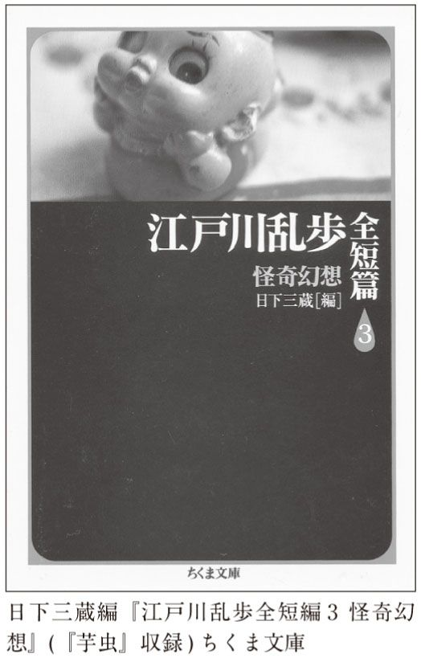
この作品は、最初あちこちを伏せ字にして発表されたが、発禁になったという。日本が戦争に邁進する時代だった。反戦的、厭戦的と当局に思われたのだろう。事実、当時は反戦小説と受け取られたこともあったという。
だが、乱歩が書いたのが、単純な反戦小説などではないのは明らかだ。もし彼が、状況に追いつめられた時子が起こした惨劇としてこの物語を終わらせていたら、それはそれで十分深刻で、衝撃のある作品になったことだろう。しかし、乱歩は書いている。時子の、「心の奥の奥には、もっと違った、もっと恐ろしい考えが存在していなかったであろうか。彼女は、彼女の夫をほんとうの生きた屍にしてしまいたかったのではないか」。
これは戦争とは何の関係もない人間の心理である。ただでさえ無力な夫を完全に支配しようという恐ろしい意志である。時子が夫の目をつぶすのは、絶望ゆえではないということだ。そうではなくて、まだ自分の意思を持っている人間から、それを表現する手段を奪い、完全に彼女の〈物〉とするためだということだ。空恐ろしいような支配欲、所有欲、そう呼んでも間違いではあるまい。
このとき、時子はただの犠牲者、不幸な女ではなくなる。悲惨な境遇にあえぐ彼女もまた、圧倒的、暴力的な専制君主に他ならない。おそらく人間にはあまねく支配欲があり、権力への意思があるだろうが、そこがこの作品の後味の悪さであり、重たさである。
そして、最後の結びがまた救いがない。この短編は、なんと次のように閉じられるのである。
まことに変なことだけれど、そのあわただしい刹那に、時子は、闇夜に一匹の芋虫が、何かの枯れ枝を這っていて、枝の先端のところへくると、不自由なわが身の重みで、ポトリと、下のまっくろな空間へ、底知れず落ちて行く光景を、ふと幻に描いていた。
眼も見えなくなった中尉は、おそらく絶望ゆえに自殺する。だが、その恐ろしいシーンを目撃した妻は、その瞬間、まるで芋虫が枝から落ちるみたいだと思ったのである。ここには愛も同情も、いわゆる人間らしい感情は皆無である。
私はこの物語を何ともいたたまれないものと感じるが、同時に、こんな物語を考えつく人間がいるということについても、同じくらいいたたまれない気がする。
乱歩は、猟奇趣味の持ち主だった。猟奇という言葉は、現在では猟奇殺人などというふうに使われるが、もともとは「奇なるものを追い求める」、つまり「好奇」をパワーアップしたものだと思えばいい。普通の刺激では物足りなくなった人々が、変わったものを探す、そういう意味合いである。
乱歩が有名になった時代は、日本中でエログロや猟奇が流行った。明治維新も一段落し、東京は近代的な都市となった。日本の国力も増大した。そうやって余裕ができると、刺激の強いものが求められるようになる。乱歩はその代表だった。内外の奇妙な犯罪について調べたり、同性愛の資料を集めたり、奇妙なストーリーを考えたり......。言い換えると、それは合理性ではなく、非合理にひかれることであり、明るい光でなく、暗い闇を愛することである。国や個人が成長していく過程では、合理性や光が求められる。それに対する反動なのだ。
思い起こせば、子供の頃読んだ怪人二十面相や明智小五郎の姿には、いわく言い難い不思議な影がなかったか。たぶん、それはふたりとも、暗い情熱、暗い欲望を持っているからである。人々が隠した秘密を明らかにしたい、人々が持っている宝を自分のものとしたい、人々を震え上がらせたい――そうした気持ちが、明智を明智たらしめ、二十面相を二十面相たらしめている。明智はただの正義の味方ではないし、二十面相もただの悪人ではない。それはなぜなのか、子供にははっきりわからなくても、世間の常識とは違う何かが裏にあるとは感じられる。
乱歩の作品には、人間のおぞましさがよく表れているが、彼は決してそれを非難したり、否定したりはしない。ただ彼はおぞましいものを見るのが好きなだけなのだ。見るだけでなく、じっくりと堪能しようとするのだ。乱歩は「触覚芸術」という概念について何度も書いている。これは、視覚や聴覚のための芸術があるのなら、手で触って味わう芸術があってもいいじゃないかということから生まれたもので、要は手でなでまわして楽しむ彫刻だ。そして、乱歩はまさに彫刻をなでまわすように、奇妙で気持ち悪いことどもを愛玩するように楽しむのである。
そんな乱歩の短編としては、もうひとつ『人間椅子』がとても魅力的だ。これまた題名からして気持ち悪いが、事実、何ともいえない粘着質の薄気味の悪さがすばらしい。ストーリーを紹介するとドキドキしながら読めなくなってしまうので、あえて口をつぐむことにしよう。
それと、蛇足になるが、乱歩の妖しい世界を愛した人は多い。乱歩作品を原作にしてさまざまな映画が作られているが、中でも『盲獣』（増村保造監督）と『屋根裏の散歩者』（実相寺昭雄監督）は、強烈な味がある。前者はきわめて残酷な内容で、夢でうなされるかもしれない。乱歩の原作を三島由紀夫が戯曲化した『黒蜥蜴』を映画にしたもの（深作欣二監督）では、美輪明宏（当時は丸山明宏）が主人公を演じている。この美輪という人、昔は妖しい美しさでもって文化人をも誘惑していたのである。丸山のファンだった三島も、この映画に出演し、筋肉美を披露している。
乱歩の文学には、常にジトジトした湿気がつきまとっているが、ジトジトという点では絶対に忘れられない究極の作家がいる。次にそれを読んでみよう。
嘉村礒多。お世辞にも有名な作家とは言えない。おそらく、本書に登場する作家の中では一番知られていない人だろう。もちろん、中学・高校の国語で取り上げられることもないはず（よほど変わった先生の授業でもない限り）。一応文庫本にもなっているが、時々品切れになっていたりして、買いにくいときがある。
そんな比較的マイナーとも言っていいような作家をわざわざ取り上げるには、当然のことながら大きな理由がある。
私小説という言葉は誰もが知っているはずだ。この言葉は、単に小説の種類を示すだけでなく、「私小説みたい」というふうに比喩として広い意味でも使われる。実は嘉村礒多という小説家は、この私小説というものを究極まで突き詰めてしまった人なのだ。
その私小説とは何か。手元にある『新明解国語辞典』（三省堂）を見たら、こう書いてある。「作者の身辺に起こった事実をそのまま材料とした、現代日本独特の小説。わたくし小説」。
さしあたって、こんな説明で十分だろう。一般的に言って、小説とは噓である。フィクションである。実際にはいない登場人物をでっちあげ、ありもしない事件を考え出して書いたのが小説だ。そこまで言わずとも、作家が経験した現実を適当に変形させて書いたものが普通の小説だ。しかし、私小説とは、自分の身に起きたできごとをそのまま書いたもの。ないことをあったかのように書いたり、あったことをないかのようには書けない。そういうことになる。
とはいえ、大半の人の人生は、小説にするほど波乱に富んでいるとは言えないはず。多くの人間は、愛したり憎んだり喧嘩したり、働いたり遊びに行ったり、結婚したり離婚したり......そんな平凡な人生を送っているはずだ。そして、私小説とは、そういった決して英雄豪傑や絶世の美女ではない平凡な人間の、こまごました生活を描いたものなのである。ありきたりな苦しみや喜びに対するフェティシズムと言っても間違いではない。客観的に考えたら大したことがないことも、極限までズームインされてしまうのだ。
その私小説を限界までやり切ったという点で、嘉村礒多以上の作家はいないかもしれない。とことん自分に正直な小説を書くとどうなるのか。ある意味では、最高に恐ろしい実験になる。なぜって、正直な私小説を書くということは、自分の失敗を隠したりしないし、美化しないし、噓をつかないということなのだから。「彼女とデートしているとき、私は別の女のことを考えていた」「相づちを打ちながら、こいつはなんてバカなんだろうと思った」、そんなことを書いたら、人間関係はめちゃくちゃになる。友達もガールフレンドも去って行くに違いない。私小説はよほど勇気があるか、鈍いか、図々しいか、恥知らずな人間でないと書けない。
嘉村礒多という作家は、非常に孤独な人だった。どうせ他人なんて、あるいは家族だって信用できない。そういう思いがあったからこそ、私小説が書けた。もっと言うと、他人だけでなく、自分だってどうしようもない人間だと知っていたから、自らの醜さも徹底的に描いた。しかもありのままを描くだけでなく、醜いものは完璧な醜さに達していなければならなかった。ある意味、嘉村を「醜悪の完全主義者」と呼んでもいいのかもしれない。
結論から言えば、嘉村礒多の私小説は究極のウジウジ小説だ。これ以下はないのではないかと思われるほど、ジトジトした暗い小説だ。まったく救いがない。ジトジトと始まった話は、ジトジトで終わる。私たちが「何かおもしろい小説はないかな」「おもしろい映画はないかな」と言うときに無意識のうちに期待する、読み終わってスッキリといった感じはゼロだ。これでもかと救いのないドロドロネバネバ攻撃を仕掛けてくる。こいつ、わざわざ人から嫌われようとしているのではないかと思えるほどだ。暗い人生なのだから、せめて楽しい話でも考えればよさそうなものだが、できない。自分の人生ばかりを見つめてしまうからますます暗くなる。堂々巡りするばかり。不幸、それもつまらない不幸の無間地獄とでも呼ぼうか。
嘉村の作品は、そもそも題名からしてすごい。代表作とされているのは『業苦』『崖の下』......。題名だけで暗い内容が想像されるではないか。それ以外にも『孤独』だの『不幸な夫婦』だの。これではいっしょに並んでいる『父となる日』『神前結婚』といったタイトルの作品も、読む前から暗い話ではないかと予想してしまう（実際、そうであるところがまた苦笑を誘うのだが）。
『業苦』（一九二八）は、主人公の悲惨な職場から始まる。主人公の圭一郎はやっとの思いで見つけた職場、「酒新聞社」で働いている（酒の業界紙の編集部なのだろう）。だが、風邪で高熱が出てしまった。どうにも寝ているほかないのだが、会社を休んで経営者の機嫌を損ねないかと思うと、うわごとまで出る始末。心配通り、三日目には、呼び出しの速達が来る。圭一郎は、他人の心が冷たいと不覚にも涙をこぼしながら、クビになってはたまらないと会社に行くと、女中が「ヒッヒッヒヒ」と意地悪な笑いを浮かべながら、手紙を渡してくれる。妹からの手紙なのだが、女中はてっきり愛人からの手紙に違いないと信じ込んでいるのである。不快きわまりない。
圭一郎には、地方に妻子がいる。が、それを捨て、今同棲している千登世と駆け落ちしたのだ。妹は心配して時々手紙を寄越す。さて今回の手紙の内容は――
父親が病気である。年齢が年齢だから、死ぬかもしれない。しかし、親不孝の息子をそのままにしては死にきれない。時たま圭一郎の手紙が届けられると狂ったように興奮する。彼がいないばかりに家の中は灯の消えた暗さだ。しかも悪辣な小作農民たちが、ずるがしこく立ち回っている。この前も土地の境界線をごまかそうとした者がいたので、父は「圭一郎が居らんからこないなことになるんじゃ。不孝者の餓鬼奴。今に罰が当って眼がつぶれようぞ」と罵る始末。あげく、圭一郎が捨てた妻が金欲しさに何か企んでいるとか、圭一郎と妻の間にできた男の子がいじけているとか、家庭内の暗い風景が事細かに書かれていて、圭一郎の気持ちを重たくする。
彼は、千登世が内縁の妻であるのが恥ずかしく、会社では独身者を装っている。父や妹、妻子、千登世、すべてに対して申し訳ない気がして仕方がない。圭一郎がこんな情けない男になってしまったのは、母親のせいだった。母親は圭一郎が好きではなかった。金がないわけではないのに、小作農の子供ほどの服も着せてくれなかった。彼は悲しい少年、青年時代を過ごしたのである。
だから、一九歳のとき、二歳年上の女性との縁談が持ち込まれると、深く考えもせず、それに飛びついた。妻から母性愛を期待したのだ。
けれど、ふたりの関係はうまくいかなかった。圭一郎は妻とセックスしてみて、彼女が処女ではなかったのでは、と疑いを抱いた。
「咲子、お前は処女だったろうな？」
「何を出抜けにそんなことを......失敬な」
火のような激しい怒りを圭一郎は勿論冀うたのだが、咲子は怒ったようでもあるし、怒り方の足りない不安もあった。彼の疑念は深まるばかりであった。そして蛇のような執拗さで間がな隙がな追究しずにはいられなかった。
「ほんとうに処女だった？」
「女が違いますよ」
「縦令、それなら僕のこの眼を見ろ。胡魔化したって駄目だぞ！」
圭一郎はきっと歯を喰いしばり羅漢のような怒恚れる眼を見張った。
「幾らでも見ててあげるわ」と言って妻は眸子を彼の眼に凝っと据えたが、直ぐへんに苦笑し、目叩し、
「そんなに疑ぐり深い人わたし嫌い......」
「駄目、駄目だ！」
（講談社文芸文庫版より引用。以下同）
こんなふうに、圭一郎は妻が自分と結婚したときに処女だったかどうか「幾百回幾千回」詰問したのだった。あげく、近所の床屋に行って、人々のうわさ話から真相を突き止めようと考えたりもした。
事実、圭一郎の勘は当たっていた。しかもよりによって、妻がつき合っていたのは、学校時代から彼が嫌い抜いている不愉快な男だったのである。けれど、妻と結婚したのは、自分が乗り気になって話を急いだからで、今更誰に当たるわけにもいかない。
こうした鬱憤に耐えきれず、圭一郎は故郷にじっとしていられなくて、あちこちをふらふらしているうちに、千登世と出会ったのだった。
この千登世がまた、どん底の暗い人生を送ってきた人間である。海に接した雪の深い地方出身の彼女は孤児で、しかも親戚がみな邪悪で欲深ばかりだった。ようやく親切な養父母と出会ったが、彼らは破産して、死んでしまったのである。こうした境遇ゆえ、彼女は何かというと暗い思いに落ち込んでめそめそ涙を流す、暗い性格になってしまった。
とまあ、ざっとここまで紹介しただけでも、ジトジト具合がおわかりになるだろうか。とにかく暗い話のオンパレードである。完璧なまでの暗黒の世界なのである。
が、『業苦』、いや嘉村の文学はただの暗い話、かわいそうな話とは遠く隔たっている。私たちが何か小説を読んだり劇を見たりして同情するのは、本来は善い人間が、理不尽な不幸に巻き込まれるからだ。善人が運命によって苦しめられる、これが私たちを同情ないしは感動させる物語のメイン・パターンなのである。悪人が不幸になっても、誰も同情しないし、感動もしないのは自明である。
だが、『業苦』の主人公はどうだ。彼はもともと決して貧しくはない地主の家庭に生まれた。確かに母親から愛されなかったのは気の毒だった。けれども、彼が今のような状況に陥ったのは、彼自身思慮が足りなかったせいでもある。いつまでもよくないことばかりをくよくよ考える性格のせいでもある。そのあげく、妻子ときっぱり別れもせず、親や妹をほっぽり出して、何となく駆け落ちし、その日暮らしをしている。彼の不幸の、少なくとも半分は自分が原因だ。
圭一郎は、異常にしつこい人間でもある。妻に何百回、何千回も処女かと問いつめる姿も異様だが、そのあげく、もっと恐ろしい段階に達する。私は初めてこの箇所を読んだとき、ここまで下劣なことを書くのかと啞然とした。
妻の過去を知ってからこの方、圭一郎の頭にこびりついて須臾も離れないものは「処女」を知らないということであった。村に居ても東京に居ても束の間もそれが忘れられなかった。往来で、電車の中で異性を見るたびに先ず心に映るものは容貌の如何ではなくて、処女だろうか？ 処女であるまいか？ ということであった。
どこで女を見ても、「こいつは処女だろうか？」と考えるようになったと言うのだ。これだけでも十分危険だが、そのあげく「縦令、乞丐の子であっても介意うまい。仮令獄衣を身に纏うような恥ずかしめを受けようと、レエイプしてもとまで屢思い詰めるのだった」。
処女欲しさのあげく、レイプまでしたくなるとは、もはや立派な犯罪予備軍と言えよう。実際、彼は宿のおばさんの小さな娘を見て、欲望を募らせるほどだった。
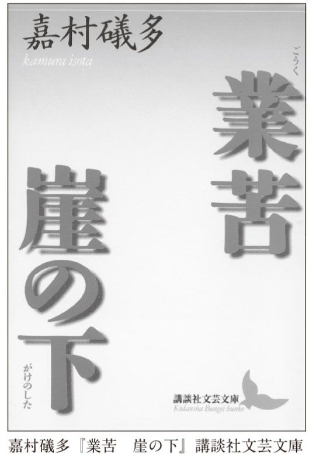
そして、千登世こそ処女だったのである。圭一郎の「斯うした獣的な浅間しい願望の延長――が千登世の身体にはじめて実現されたのであった。彼は多年の願いがかなえられた時、最早前後を顧慮する遑とてもなく千登世を拉し去ったのであるが、それは合意の上だと言えば言えこそすれ、ゴリラが女を引浚えるような惨虐な、ずいぶん兇暴なものであった」。
作者はまったく圭一郎を好意的に見ていない。むしろ、彼の欲望の汚らわしさや身勝手さを、容赦なく書いている。そしてもちろん、この圭一郎とは、作者のことに他ならない。まるで自分の恥部をこれでもかと見せつけるような文学である。自分のことをゴリラになぞらえた作家は、そうそういないだろう。
想像するに、この圭一郎という男は、女性読者にとってはどうにも許せない、あるいは気持ちが悪い最低の男ではないか。無意味にプライドが高く、気持ちは屈折していて、妙に敏感で、母性愛に甘えたいと強く願いつつ、処女を凌辱したいとも考える。
けれど、もしかして......私は思うのだが、あらゆる男は多少なりとも圭一郎的なのではないか。それどころか、大いに圭一郎的なのではないか。この救いようがなく愚かで醜い男の姿は、服だの肩書きだの何だの、いろいろこぎれいなもので飾っている男というものの本質ではないのか。本書のように、さまざまな作家の作品をずらりと並べて読んでみればわかるはずだ。これほどまでに容赦なく男の醜さを表現した作家は、なかなかいないことに。本書でも紹介した川端康成の『眠れる美女』はすばらしい傑作だが、『業苦』を読んでしまうと、こと男の描き方、男性像という点では、あまりにも美しく甘い気がしてくるほどだ。
とにかく、『業苦』は、これでもかとばかりに悲惨で残酷なディテールに富んでいる。不幸な身の上なのに処女を守ってきた千登世がよりによってそれを与えたのが妻子ある男だったとか、浄土教の名僧がふたりを躍起になって別れさせようとするとか、内職のせいで千登世の健康が蝕まれていくとか。しかも嘉村は、悲惨な状況をいっそう悲惨にするような言葉で述べるのだ。こんなサディスティックな（あるいは自虐的な）作家もめったにいない。
当然、こんな圭一郎に明るい未来が思い描けるはずもない。寝床で苦しげに寝返りを打つシーンで『業苦』は閉じられる。
嘉村礒多の作品は、基本的にみなこういった感じだ。そして、恐ろしいことに、作者の年譜を見ると、作品と同じようなことばかりが書いてあるのである。そう、本当に彼は自分のことを作品に書いたのだ。
あまりのジトジトぶりに辟易する人もいるだろうが、嘉村の作品はひそかに読み継がれてきた。かろうじて文庫本になっているくらいで、おそらく夏目漱石の数十分の一も売れていないだろう。こんな作品を書いていたら、現代であっても生計が立つとは思えない。実際、嘉村の作品はなかなか評価されなかった。やっと名門雑誌「中央公論」に掲載が決まったときには、嬉しさのあまり失神したらしい。
だが、告白しなければならないが、学校で読まされる『こゝろ』だの『蜘蛛の糸』などより、ずっとずっと、私は嘉村礒多の作品にリアルさを感じる。正直言って、嘉村の作品を知ってしまったら、『こゝろ』なんて生ぬるくて物足りなくなる。しかし、こういう作品は明るい未来を夢見るべき若者には危険だ、そんなおせっかいな親切心で教科書には載らないのかもしれない。
あまりにも独特な嘉村の世界だが、以下、他の作品に記された名場面についても簡単に触れよう。
『崖の下』は、『業苦』の続編にあたる作品だが、相変わらず手厳しい。圭一郎は「様々な懊悩を累ね、無愧な卑屈な侮らるべき下劣な情念を押包みつつ、この暗い六畳を臥所として執念深く生活して来たのである」といった具合だ。災害が起きれば崖に押しつぶされそうな家に住み、しかも上からは、尊敬する宗教者がいる寺院の鐘の音が、自分を責めるように聞こえてくる。
我が子へのまなざしも厳しい。まだ幼い息子が妻の乳房にむしゃぶりつくのを見て、「妬ましさに身震い」し、「目鼻立ちは自分に瓜二つでも、心のうちの卑しさを直ぐに見せるような、偽りの多い笑顔だけは妻にそっくりだった」と言い放つ。
煙草が吸いたくてならないのに金がないので、人の吸いさしをひそかにちょろまかしていたのがバレて恥ずかしい目にあったり。せっかく買った煙草を吸っていたら、待っていた電車が来たので、仕方なく捨てねばならなくなり、涙をこぼしたり。相変わらず圭一郎の活躍ぶりはすさまじい。
『曇り日』も忘れがたい作品だ。主人公は、たまたま天皇がこれから町を通るというタイミングに居合わせる。喜びのあまり、今か今かと緊張して待っていたら、挙動不審だと巡査に怪しまれる。しかも、折り悪く腸出血が起きて、「突然、五臓六腑をひきつけられる苦痛に襲われて、二三回くるくる爪立ってまわったが、ううううと一つ呻き声をあげた壗、我手を以って我身を引上げんとしたが、依怙地に其処が動けなかった」。そして、やはり情けなさに身悶えするのである。
『途上』もすごい。学校の寮で食事のときに汁物の具を多く取りすぎると注意されて、耳たぶまで赤くなったりするのはまだしもで、おそらく嘉村の作品中でも最大級に印象的な箇所がある。
主人公はかつてひとりの少女に恋心を寄せていたことがある。あるとき、その家に招待された。当然、自分をアピールする絶好のチャンスだ。ところが、主人公は火鉢を持ち上げようとして手を滑らしてしまう。火鉢の灰やらで部屋はひどく汚れ、焼けこげまで作ってしまった。あまりにも恥ずかしいへまだった。彼はその事件を思い出すたびに、尋常でない情けなさを感じてしまう。そして、何とも突飛な行為をしでかしてしまうのだ。
「あッ、あッ」と、私は奇妙な叫び声を発して下腹を抑えた。両手の十本の指を宙に拡げて机の前で暴れ騒いだ。
「何を気狂いの真似をなさるんです。えイ、そんな気狂いの真似する人わたし大嫌い」
片脇で針仕事をしている女は憂鬱に眉をひそめてつけつけ詰った。
「そんな真似をしていると、屹度今に本物になりますよ」他の時こうも言った。
私は四十になり五十になっても、よし気が狂っても、頭の中に生きて刻まれてある恋人の家族の前で火鉢をこわした不体裁な失態、本能の底から湧出る慚愧を葬ることが出来ない。その都度、跳ね上り、わが体を擲き、気狂いの真似をして恥ずかしさの発情を誤魔化そうと焦らずにはいられないのである。
誰しも思い出すたびに恥ずかしくなる記憶くらい、あるだろう。だが、なんとこの主人公は、恥ずかしさのあまり、飛んだり跳ねたり自分をたたいたり、頭がおかしくなったふりまでしてしまうというのである！
滑稽かもしれない。しかし、『途上』のこの箇所以上に容赦なく人間の恥と滑稽と哀れを書き留めた例は他にないのではないか。嘉村にとって、人生とは恥であり、恥ずかしい過去の堆積だったのだ。生きるとは、恥をかくことであり、その恥を思い出して身悶えすることだったのだ。
ところで、嘉村がここまで自らを卑しめた理由のひとつは、自分の容貌が醜いと考えていたからだという（それもあって、千登世を襲う圭一郎をゴリラにたとえたのだろうが）。「へえ」と思って写真を見てみると、驚くほど醜いということはない。醜いと言うよりは、陰険、陰湿、気むずかしそうな雰囲気が漂う顔だ。これでは他人が寄りつかず、孤独になるのも仕方がないのかもしれない。
話は脱線するが、現在の五千円札には樋口一葉の顔が使われている。樋口一葉も、よく言えば思い詰めた真剣な、悪く言うと、嘉村同様に陰険で気むずかしそうな顔である。私はどうにもこの顔が苦手で、お釣りでもらうと、さっさと使ってしまう。印刷に使われている紫色も不気味だ。私がもし何かの大臣だったとしたら、これほどまでにユニークな作家、嘉村礒多の顔を一葉の代わりに使いたいが......。ちなみにゴリラということなら、『檸檬』で有名な梶井基次郎のほうがそれらしいことも付け加えておこう。
実は文学に限らず、芸術家には自分の容貌や、暗い性格を苦にしている人が多い。彼らが、それをバネにして創作しているのはまぎれもない事実なのである。そして、容貌に恵まれなかった男たちの中には、政治家になって権力を得ようとする者もいる。よくも悪くも、コンプレックスは人間の活動のエネルギー源なのだ。
では、容貌がよければ、違った人生が開けるのだろうか。それを次に見てみよう。
何を隠そう、夢野久作は、私が初めて夢中になった日本の作家である。
私は、それまで日本文学にからっきし興味を持っていなかった。クラシック音楽が好きだったせいで、中高生のときから読むのは海外、それももっぱらヨーロッパの小説ばかり。周囲には特に文学好きな友達はおらず、おもしろい本を教えてくれる人もいなかった。それで文庫本のカタログを参考にして、ロシアやフランスやドイツの作家たちを読んでいたのである（途中、イギリスやアメリカのミステリーに浮気したこともあったが）。
たまたま知り合った大学生や大人に、「ゲーテとかドストエフスキーとか読んでいます」などと言って相手が驚くと、得意になったものだった。そのうえ、明治以降の日本の小説は、西洋の小説から多大の影響を受け、そのマネをしていたことを知ったものだから、それなら本家本元のものを読めば、日本の作品は読まなくてもいいじゃないかと思ったりしていたのだ。まあ、今考えるときわめて浅はかな、若気の至りの知的な背伸びだったわけである。
しかし、そんな私に一撃を与えたのが夢野だった。どうして夢野の本を手に取ったのか、なぜか今となると記憶が定かではない。しかし、たまたま読んだ名作集にすっかりはまった。確か、海外旅行に持って行ったのだと記憶している。ヨーロッパの電車の中で読む夢野は、あまりにも気味が悪かった。怪しい雰囲気がぷんぷんした。作者の狂気があちこちににじみ出ていた。私がそれまで読んだいかなる小説とも違っていた。私がすでに知っている海外の怪しい小説の比ではなかった。江戸川乱歩あたりが、毛色の変わった短編を集めたアンソロジーを作っているが、そんなものとは次元が違う。「こいつは正真正銘、頭がどうにかしている」と呆然とした。
当然のことながら、そうまで思わせる小説家はなかなかいない。ホラー小説や恐怖小説のような意味で気味が悪いのではない。人間の精神の暗部をこれでもかと出してくるのが気味が悪いのだ。というと嘉村に似ているようだが、まるで違う。嘉村が容赦なくえぐり出したのは、嫉妬だとか、羨望だとか、憎悪だとか、後悔だとか、誰でも下らないとわかっているのに避けることができない醜い心理である。けれど、夢野の場合は、おそらくふだんは誰も意識しないような暗部、あるいは人間があえて避けようとしている暗部を描くのだ。それゆえ、嘉村と違って、夢野の作品は怖い。
すっかり打ちのめされた私は、夢野の作品を次々に手にし、ついに長編『ドグラ・マグラ』に挑んだ。この本を読んだことのある人々が周囲に何人かいたが、「変な話だよ」くらいで、細かな解説はしてくれなかった。そこで最初はあまり大きな期待も抱かずに読み出したのだが......。
ものすごい作品だった。入り組んだ構成なので、最初読んだときには不明の点も多かった。にもかかわらず、漠然と理解できた物語の大枠はまさに身震いすべきものだった。と同時に、この作品が、奇作、怪作だのとレッテルを貼られている理由もよく理解できた。これをわかりやすく説明するのは、並大抵ではない。率直に言って、みな説明できないのだ。だから、奇作だのと呼んで、逃げているのである。何しろ江戸川乱歩ですら、初めてこの作品を読んだときに、「狂人の作品」だとコメントしたくらいである。そう、自分の手に余るものは、狂気と呼んでおけば、とりあえずいいのだ。
だが、この作品は、入り組んではいるが、決して訳がわからないということはない。いや、むしろ逆で、作者が長年の月日を費やし、考え抜いて書いただけに、一見訳がわからない部分も、実は非常に意味がある。たとえるなら、巨大なジグソーパズルのような作品なのだ。一片一片を見ても、何だかわからない。が、決して無関係なものが紛れ込んでいるわけではない。ただ、組み上がるのに、なかなか骨が折れるというだけなのだ。
ズバリ、夢野の最大傑作は『ドグラ・マグラ』である。これは絶対に間違いない。この小説は外国語に翻訳されていないらしいが、実にもったいない話である。川端もいい。三島もおもしろい。しかし、これこそ、世界の人々を震え上がらせるべき作品に違いないのに。
だが、『ドグラ・マグラ』は大規模で複雑ゆえ、本書の趣旨には合わない。残念ながら、取り上げるのはよそう。それに、これほどまでの傑作は、虚心坦懐に読むべきだとも思う。『ドグラ・マグラ』はミステリー仕立てである。だから、犯人がどうなのか、どういうストーリーなのかは、なおさらあらかじめ知らないほうがいい。私はこの本のほぼ最後、全体像が明らかになったとき、めまいを感じた。頭の中がぐるぐる回った。こんな貴重な体験をさせてくれる作品は、そうはない。私が知る限り、言葉の真の意味で恐怖を感じさせる推理小説は、これ以外に存在しない（実は私は今推理小説も執筆中なのだが、私が書きたいのはまさにこれと同様、啞然とするくらい怖い作品である）。だからこそ、『ドグラ・マグラ』については口をつぐむことにしよう。私が最初に書いた本は、『邪悪な文学誌』（青弓社）という書物だが、その中では一章が夢野に当てられている。興味のある方はご覧ください。もちろん、『ドグラ・マグラ』を読んだあとで。
『瓶詰地獄』『キチガイ地獄』『狂人は笑う』等々、夢野の作品は、題名からしても不気味なものが多い。さらに、彼は『猟奇歌』という気持ち悪い短歌も作っている。夢野の特徴がよく表れているので、その中からいくつか紹介しよう。
ずつと前殺した友へ
根気よく年賀状を出す
愚かなる吾
よそのヲヂサンが
汽車に轢かれて死んでたよ
帰つてこないお父さんかと思つたよ
ある女の写真の眼玉にペン先の
赤いインキを
注射して見る
ニセ物のパスで
電車に乗つてみる
超人らしいステキな気持ち
伯父さんへ
此の剃刀を磨いでよと
継子が使ひに来る雪の夕
欲しくもない
トマトを少し嚙みやぶり
赤いしづくを滴らしてみる
病死した友の代はりに返事した
先生は知らずに
出席簿を閉ぢた
わが胸に邪悪の森あり
時折りに
啄木鳥の来てたたきやまずも
誰の心の中にもひそむ暗黒部分。それを夢野は「邪悪の森」と呼んでいる。邪悪が木々のように繁茂する、そういう鮮やかなイメージだ。夢野の作品は、そういう人間誰しもが持っているいやな部分をクローズアップする。といっても、嘉村礒多のように、平凡な日々の中から顕微鏡でチェックするようにして、ではない。嘉村が世界を眺めると、あらゆるものが陰惨で、意地悪で、情けないものになる。夢野が世界を眺めると、どこか狂っていて、しかも悲しいものになる。嘉村と違って、夢野は人間を軽蔑しない。むしろ、自分の暗黒面ゆえに滅びていく人間のやるせなさを語る。だから、時に彼の作品はメルヘンのようなやさしさを帯びる。
夢野は一応、推理小説作家だった（のようなものだった、と言うほうが正確だろう）。推理小説において、犯人が殺人を犯すのは、金のためだとか、復讐だとか、きわめて明快に説明されるのが常である。それによってものごとの秩序が回復され、私たちは「やれやれ、これで一安心」と本を閉じることができる。だが、夢野の場合はそうではない。読み終えたあとも、何とも言えない重たい気分が残る。推理小説と呼ぶにはためらわれる深刻さがある。
『少女地獄』（一九三六）はまさにその典型だ。これは、『ドグラ・マグラ』に比べれば、ずっと近寄りやすい作品である。決して難解ではない。しかし、誰が読んでも作者の強烈な個性を感じずにはいられないだろう。奇想天外なストーリーといい、大げさで滑稽味のある語り口といい、夢野ならではの佳品なのだ。『少女地獄』は、『何んでも無い』『殺人リレー』『火星の女』という三つの短編を束ねたもので、各々において、地獄を生きた女たちの悲しい人生が描かれている。そのうち『何んでも無い』を読むことにしよう。
この短編は、手紙で始まる。この手紙が読む者をいきなり異常世界へ引きずり込む効果抜群なので、ちょっと長くなるけれど、ここにそのまま転載する（ちくま文庫版より引用。以下同）。
白 鷹 秀 麿 兄 足下
臼 杵 利 平
小生は先般、丸の内倶楽部の庚戌会で、短時間拝眉の栄を得ましたもので、貴兄と御同様に九州帝国大学、耳鼻科出身の後輩であります。昨、昭和八年の六月初旬から、当横浜市の宮崎町に、臼杵耳鼻科のネオンサインを掲げておる者でありますが、突然に斯様な奇怪な手紙を差上る非礼をお許し下さい。
姫草ユリ子が自殺したのです。
あの名前の通りに可憐な、清浄無垢な姿をした彼女は、貴下と小生の名を呪咀いながら自殺したのです。あの鳩のような小さな胸に浮かみ現われた根も葉も無い妄想によって、貴下と小生の家庭は申すに及ばず、満都の新聞紙、警視庁、神奈川県の司法当局までも、その虚構の天国を構成する材料に織込んで来たつもりで、却って一種の戦慄すべき脅迫観念の地獄絵巻を描き現わして来ました彼女は、遂に彼女自身を、その自分の創作した地獄絵巻のドン底に葬り去らなければならなくなったのです。その地獄絵巻の実在を、自分の死によって裏書きして、小生等を仏教の所謂、永劫の戦慄、恐怖の無間地獄に突落すべく......。
その一見、平々凡々な、何でもない出来事の連続のように見える彼女の虚構の裡面に脈動している摩訶不思議な少女の心理作用の恐ろしさ。その心理作用に対する彼女の執着さを小生は、貴下に対して逐一説明し、解剖し、分析して行かねばならぬという異常な責任を持っている者であります。
しかもその困難を極めた、一種異様な責任は本日の午後に、思いもかけぬ未知の人物から、私の双肩に投かけられたものであります。......ですからこの一種特別の報告書も、順序としてその不可思議な未知の人物の事から書き初めさして頂きます。
本日の午後一時頃の事でした。
重態の脳膜炎患者の手術に疲れ切った私は、外来患者の途絶えた診察室の長椅子に横たわって、硝子窓越に見える横浜港内の汽笛と、窓の下の往来の雑音をゴッチャに聞きながらウトウトしておりますと、突然に玄関のベルが鳴って、一人の黒い男性の影が静かに辷り込んで来ました。
跳ね起きてみますと、それはさながらに外国の映画に出て来る名探偵じみた風采の男でした。年の頃は四十四五でしたろうか。顔が長く、眉が濃く太く、高い、品のいい鼻梁の左右に、切目の長い眼が落ち窪んで鋭い、黒い光りを放っているところは、とりあえず和製のシャアロック・ホルムズといった感じでした。全体の皮膚の色が私と同様に青黒く、スラリとした骨太い身体に、シックリした折目正しい黒地のモーニング、真新しい黒のベロア帽、同じく黒のエナメル靴、銀頭の蛇木杖という微塵も隙の無い態度風采で、診察室の扉を後手に静かに閉めますと、私一人しか居ない室内をジロリと一眼見まわしながら立佇って、慇懃に帽子を脱って、中禿を巧みに隠した頭を下げました。
軽卒な私は、この人物を新来の患者と思いましたので愛想よく立上りました。
「サアどうぞ」とジャコビアン張の小椅子を進めました。「私が臼杵です」
しかし相手の紳士は依然として黒い、冷たい影法師のように突立っておりました。ちょっと眼を伏せて......わかっている......といったような表情をした切り一言も口を利きませんでした。そのうちに青白い毛ムクジャラの手を胴衣の内ポケットに入れて、一枚のカード型の紙片を探り出しますと、私の顔を意味ありげにチラリと見ながら、傍の小卓子の上に置いて私の方へ押し遣りました。
そこで私は滑稽にも......サテは啞の患者が来たな......と思いながらその紙片を取上げてみますと、意外にも下手な、小学生じみた鉛筆文字でハッキリと「姫草ユリ子の行衛を御存じですか」と書いて在るのです。
私は啞然となってその男の顔を見上げました。背丈が五尺七八寸もありましたろうか。
「......ハハア。知りませんがね。だまって出て行きましたから......」
と即答をしましたが、その刹那に......サテハこの男が姫草ユリ子の黒幕だな。何かしら俺を脅迫しに来やがったんだな......と直感しましたので直ぐに......糞でも啖らえ......という覚悟を腹の中で決めてしまいました。しかし表面にはソンナ気振も見せないようにして、平凡な、開業医らしいトボケ方をしておりました。......姫草ユリ子の行衛を知っていないでよかった。知っていると云ったら直ぐに附け込まれて脅迫されるところであったろう......と腹の中で思いながら......。
相手の紳士はそうした私の顔をその黒い、つめたい執念深い瞳付で十数秒間、凝視しておりましたが軈て又、胴衣の内側から一つの白い封筒を探り出して恭しく私の前に置きました。......御覧下さい......という風に薄笑いを含みながら......。
白い封筒の中味は、ありふれた便箋でしたが、文字は擬いも無い姫草ユリ子のペン字で、所々汚く汚染んだり、奇妙に震えたりしているのが何となく無気味でした。
「白鷹先生
臼杵先生
妾は自殺いたします。お二人に御迷惑のかからないように、築地の婦人科病院、曼陀羅先生の病室で自殺いたします。子宮病で入院中にジフテリ性の心臓麻痺で死んだようにして処理して頂くよう曼陀羅先生にお願いしておきます。
白鷹先生 臼杵先生
お二人様の妾に賜わりました御愛情と、その御愛情を受入れました妾を、お憎しみにもならず、親身の妹同様に可愛がって頂きました、お二人の奥様方の御恩を、妾は死んでも忘れませぬでしょう。ですから、その奥様方の気高い、ありがたい御恩の万分の一でも報いたい気持から妾は、こんなにコッソリと自殺するのです。わたくしの小さい霊魂はこれから、お二人の御家庭の平和を永久に守るでしょう。
妾が息を引取りましたならば......眼を閉じて、口を塞ぎましたならば、今まで妾が見たり聞いたり致しました事実は皆、あとかたも無いウソとなりまして、お二人の先生方は安心して貞淑な、お美しい奥様方と平和な御家庭を守っておいでになれるだろうと思いますから。
罪深い罪深いユリ子。
姫草ユリ子はこの世に望みを無くしました。
お二人の先生方のようなお立派な地位や、名望のある方々にまでも妾の誠実が信じて頂けないこの世に何の望みが御座いましょう。社会的に地位と名誉のある方々の御言葉は、たといウソでもホントになり、何も知らない純な少女の言葉は、たとい事実でもウソとなって行く世の中に、何の生甲斐がありましょう。
左様なら。
白鷹先生 臼杵先生
可哀そうなユリ子は死んで行きます。
どうぞ御安心下さいませ。
昭和八年十二月三日
姫草ユリ子」
どうだろう。清浄無垢、戦慄すべき、地獄絵巻、恐怖の無間地獄、摩訶不思議、一種異様な責任......文章はこれでもかという扇情的な言葉に満ち満ちている。おまけに「コッソリ」自殺するとか、カタカナの使い方も気持ち悪い。夢野の文体はほとんどいつもこうだ。まるで紙芝居のおじさんのようで、時に安っぽいくらいに大げさである。が、それに乗せられて読み進むと、だんだんに作品の悲劇性が際立ってくるのだ。
この物語は、臼杵医師の視点から語られる。臼杵は九州出身の医師で、横浜で耳鼻科を開業しようとしているところに、見知らぬ女がやって来る。姫草ユリ子と名乗る彼女は、Ｋ大学病院で看護婦をやっていたが、事情があってそこを辞め、職を探しているのだと言う。話をしてみるとまともそうだし、「路傍にタタキ付けられて救いを求めている小鳥のような彼女のイジラシイ態度」に同情し、彼女を雇うことにする。加えて、臼杵が彼女を雇ったのには別の理由もあった。彼女の鼻を見て、整形手術を試してみたくなったのである。
使ってみると、ユリ子はすばらしい看護婦である。知識や経験もさることながら、細やかな気遣いで患者に接するので、みな大喜び。病院は彼女のおかげで大繁盛だ。しかも、ユリ子は、青森の親族から物を贈らせたり、巧みにお世辞を言ったりして、如才なく臼杵の歓心を買う。
整形手術の効果も、臼杵の想像した以上だった。ユリ子はもともとは特に美人でもなかったのだが、見違えるような美少女となり、病院のマスコットとして絶大な人気を誇るに至った。仕事ができて、性格がよくて、美人の一九歳の看護婦。非の打ち所がない。
だが、臼杵の妻が、不審に気づく。ユリ子はふだんは親切で明るい美少女なのだが、ひとりでいるときなど、まるで別人のように陰鬱な様子をしているときがあるのだ。本人は一九歳と言っているが、そんなときには二五、六にも見える。実家は裕福だということだが、「ヒドク貧乏臭い、ミジメな家の娘の風付き」のようにも見える。いつもは取り繕っているが、誰も見ていないときには、本性が出てしまうのではないか。臼杵の妻はユリ子が噓をついているのではと疑う。
とうとうユリ子の噓が露見する瞬間がやって来る。ユリ子はそれまで、名医として知られる白鷹医師の噂をしょっちゅうしていた。だが、臼杵が白鷹と会うと、ユリ子が言っていたことはすべてでたらめだったことがわかる。おまけに、白鷹は姫草ユリ子という名前を聞くと、驚愕を隠せない。白鷹はかつて彼女に煮え湯を飲まされた経験があったのだ。
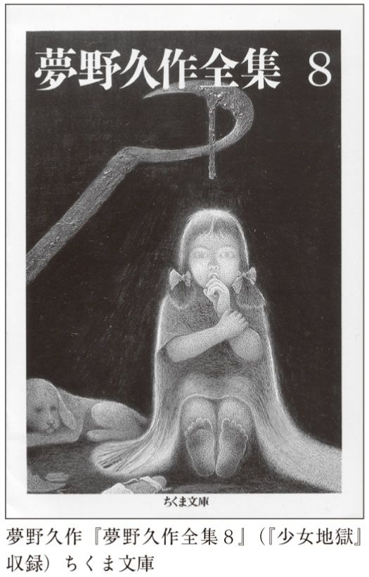
臼杵がショックを受けて家に戻る途中、ユリ子が橋のたもとで彼を待っていた。ユリ子はこの期に及んでもなお、さらに巧みな噓をついて彼の信頼を得ようとする。
けれども、もうおしまいである。ユリ子の真の姿は、白衣の天使とは似てもにつかぬものだった。虚栄心の塊で、患者からもらったプレゼントを自慢し、同僚に対しては冷酷。変な噂を流し、あげく誰某の子供を身ごもっていると噓をつく。「臼杵病院のマスコット。看護婦の天才。平和の鳩の生れ変りかと思われる姫草ユリ子の純真無邪気な姿が、見る見るレントゲンにでもかけられたような灰色の醜い骸骨の姿に解消して行く」。
が、そうなっても、臼杵も彼の妻もどういうわけかユリ子を憎む気にはなれない。どうすればいいのだろう。臼杵が友人に相談すると、そんな噓をつくのは「赤」に違いないと言われる。あれよあれよという間に特高課長の家に連れて行かれ、ユリ子を逮捕することになる。その逮捕のために、臼杵夫妻も協力しなければならないのが何とも辛い。
取り調べてみると、ユリ子は共産主義者ではなかったが、いろいろなことがわかった。ひどく貧乏な家の出身であること、名字も本当は堀だということ、年齢、学歴、すべてが噓であること。
どうして、ユリ子はひどい噓をつき続けたのか。ただ虚栄心からだけではなかった。彼女は「卵巣性か、月経性かどちらかわかりませんが、とにかく生理的の憂鬱症から来る一種の発作的精神異常者」だと臼杵は結論づける。つまり、生理前後になると、噓をつきたくなる体質なのだと。なんとユリ子は、当時世間を騒がしていた謎の噓つき女でもあったのである。
自分の名誉を傷つけられる噓までつかれるとあっては、さすがに勘弁できず、臼杵は彼女を追い出す。
そして、しばらくして、彼女の遺書がもたされたのである。
姫草ユリ子という人間は噓によって生きていた人間である。名前、年齢、学歴、出生、すべてが噓なのだ。本来は貧乏で、孤独で、美人でもない彼女は、明るく無邪気な白衣の天使を演じ、しかも整形手術によって美少女になった。そして、すべてが明らかになったとき、死ぬのである。臼杵は言う。
神も仏も無い、血も涙も無い、緑地も蜃気楼も求められない沙漠のような......カサカサに乾干びたこの巨大な空間に、自分の空想が生んだ虚構の事実を、唯一無上の天国と信じて、生命がけで抱き締めて来た彼女の心境を、小生等は繰返し繰返し憐れみ語り合っております。その大切な大切な彼女の天国......小児が搔き抱いている綺麗なオモチャのような、貴重この上も無い彼女の創作の天国を、アトカタも無くブチ毀され、タタキ付けられたために、とうとう自殺してしまったであろうミジメな彼女の気持を、姉も、妻も、涙を流して悲しんでおります。
彼女にとっては、噓こそが人生だった。だから、噓の崩壊とともに死ぬしかないのである。
だが。
私には、姫草ユリ子が死んだとは思えないのである。この天才的噓つきは、噓の遺書を書いたのではないかという気がしてならないのである。むしろ、臼杵をすっかりだましおおせたとニンマリしているのではないか。
それは、私もまた臼杵夫妻と同様、姫草ユリ子の人生に同情を禁じ得ないからに過ぎないのか？
違う。「ハイ、姫草さんの月経来潮は正確で御座いました。毎月大抵、月の初めの四日か五日頃です」、臼杵に尋ねられた看護婦はこう答えている。遺書の日付を見てみよう。なんと一二月三日ではないか。臼杵自身、こう言っている。「あの女が一身上の不安を感じたり、飛んでもない虚栄心を起して、事実無根の事を喋舌りまわったりするのが、いつも月経前の二三日の間に限られている理由もやっとわかりました」。なんと臼杵医師は、そこまでわかっていながら、まんまといっぱい喰わされているのである。
もし、彼女が自殺していないとするなら、またどこかで臼杵のようなお人好しの医師を見つけて、そこで雇われることになろう。そして、もう一度この物語が繰り返されることになるだろう。少女地獄は、終わることなく続いていくのである。
実は、『ドグラ・マグラ』のコンパクト版とも言えるのが、この『何んでも無い』なのである。『ドグラ・マグラ』は大長編だが、最後、また話が冒頭に戻る。まさしく無間地獄とはこのこと。地獄は決して終わらず、何度でも繰り返される。それと同じ構造をこの作品も持っている。しかも、細かな部分で似ているところが相当ある。
それにしても、『何んでも無い』は、私たちにとって決して無縁な話ではない。誰でも自分を美化したいという欲望があるはずだ。完全な噓とは言わぬまでも、誇張やごまかし程度なら日常茶飯事かもしれない。
私は前から疑わしく思っているのだが、美容整形手術は本当に人を幸せにするのだろうか。確かに、いっそう多くの異性が近づいてくる可能性は高い。自分に自信ができて、内面的にも変化が起きることもあり得る。
けれど、それは姫草ユリ子的な、噓の幸福ではないのだろうか。たとえ、自分がそのような手術を受けたことをおおっぴらに言うことができても、なお、幸せではあり得ないのではないか。
たとえば、すてきな異性と出会って結婚したとする。子供が生まれたとする。その異性や子供に、手術前の写真を平然と見せることができるかどうか。本当は団子っ鼻で、セクシーだと褒められるバストもニセモノだったとしたら。もし今が幸せなら、なおのこと過去の写真を見せることはできないのではないか。とするなら、整形手術は、幸福と同時に、危うい暗部も背負うことに他ならない。
私がこんなことを書くのには、理由がある。私事になるが、かつてつき合った中に、どうしても過去の写真を見せてくれない女がいた。今となっては証拠はないが、どうも整形手術を行っていた節がある。けれど、面と向かってはなんとも尋ねにくい。
それだけでなく、彼女はさまざまな点で、噓をついていた。まさに姫草ユリ子的な虚栄心ゆえの噓である。彼女が噓をついた理由を知ったとき、私はまさに臼杵夫妻のような気持ちになった。悲惨な状況から逃れるためにつく噓は悲しい。さんざん迷惑を受けながら、臼杵は言う。「小生は、小生の姉、妻と共に告白します。小生等は彼女を爪の垢ほども憎んでおりません」。
さて、かわいそうな姫草ユリ子は、行動が不審だと「アカ」を疑われた。社会主義、共産主義は、戦前の日本では、死にも値する恐ろしい思想だった。それを次に見てみよう。
本書ではいろいろな作家を取り上げている。それぞれ文学観も違えば、問題意識も違う人たち。
だが、実はそのほとんどに共通している点がある。自分自身が金持ちやエリートであるか（あるいは、であったか）、もしくはそうした家庭出身ということだ。たとえお金持ちでなくても、知的職業についている家系という場合もある。
森鷗外や三島由紀夫といった人たちは、東大を出て役人としてエリートコースに乗った人たち。しかも前者は代々医者の家系。武者小路実篤は華族。岡本かの子は大地主の娘。夢野久作は実家がお金持ちだったり、父親が大物だったり。自分のことを惨めだ惨めだと言っている嘉村礒多だって、田舎から仕送りを受けて暮らしていた。本書では取り上げないが、太宰治の家も地元では有名な資産家だった。
つまり、小説というものは、お金がなければ書けないものなのか？ あるいは最低でも余裕のある子供時代を送ったことがなければ書けないのか？ こんな問いが出てきてもおかしくない。
そうだ。少なくとも昔はそうだったと言って、ほぼよいだろう。お金がなければ学校へ行けない。学校へ行けなければろくに文章など書けないし、だいたい他人の小説を読んで、文学がおもしろいと思う機会がない。食べ物を得るのに精一杯では、他のことを考える余裕なんてない。むろん、本など買えない。
本書では、作家の人生については、あまり触れていない。が、ここでちょっとばかり補足すると、本書に登場する作家の大半は、どうやってデビューしたのか。今なら文学賞に応募するだろう。運がよければ、すぐに金になる。が、昔は違った。小説家になりたい高校生や大学生は、同人誌というものを作っていたのである。けれど、現在のマンガ同人誌とは違って、それで大もうけできるはずがなかった。小説を書くという行為は、出発点においては、儲けにならない遊びだったのだ。その遊びをやっているごく一部の人たちだけが、職業作家として生計を立てることができたのである。必ずしも金のためだけとは限らないにしても、鷗外はずっと役人であり続けたし、漱石は朝日新聞社員という安定した地位にいた。
いや、そもそも文化や教養などというものは、ある程度生活に余裕がある人のために存在しているのではないか。なるほど今では、テレビやラジオや図書館といった、無料の文化装置が存在している。タダでいろいろなものが楽しめなくはない。けれど、決して、ある段階以上に堪能することはできないのだ。劇場で生の舞台を見ることはできないし、美しい服を着ることもできない。究極の美味を食べることもできない。つまり、金がなければ、ちっぽけな一受け手としてのみ、文化を享受することができるだけだ。ちょうど、太陽の光が貧しい町の片隅にまでかろうじて届くように。
これでいいのか。小説や芸術は、ただ金持ちを喜ばせるためだけのものでいいのか。そう考えた人たちがもちろんいた。特に社会主義的な考えを持っていた人々だ。社会主義的な芸術観では、金持ちを喜ばせるためだけの芸術は、堕落していると非難される。芸術は大衆のためのものでなければならない。しかも、大衆を楽しませるだけでなく、教化し、よりよき世界の実現のために役立たねばならない。そして、悪どい金持ちの打倒を目指す革命が成功する道のりを描かねばならない。怠惰で無自覚な若者が、立派な労働者になる過程を示さねばならない。
この章で紹介する小林多喜二という作家は、こういったタイプの作家である。日本の作家には、自分の世界に固執する人が多い。本書に登場する谷崎や乱歩や嘉村などその典型である。太宰治もそう。社会問題には目をつぶり、自分の小宇宙に閉じこもる。だが、小林は違う。なぜ彼がそのような作家になったかは、生まれ育ちを見ればすぐにわかる。
もともと、小林の家は決して貧しくはなかった。が、事業に失敗し、苦労が始まった。家は秋田にあったが、北海道の小樽まで流れて行かざるを得なかった。
当時、小樽の町はどんどん大きくなっていく最中だった。北海道のいろいろな物産がここに集まり、本州へ送られていくのだ。小林の親は、パン屋を営んでいた。そこには労働者たちがパンを買いに来た。彼らの状態はひどいものだった。悲惨な労働条件に置かれており、逃げだそうとすると見せしめに殺された。小林家自体、生活はギリギリだったが、逃亡してきた哀れな者にはパンを与えたり、かくまったりした。
小学校にも行けなかった母親は、多喜二には無理をして学校に行かせた。勉強以外の時間は働かなければならない多喜二は、学校でもっとも貧しい家庭の出身で肩身が狭かったらしいが、そもそも学校に行けない者もたくさんいた。そして、しがないパン屋ではあったけれど、少なくとも多喜二の親はその経営者であり、人を雇っていた。上には上がいて、下には下がいる。多喜二は、いろいろな階層がぶつかり合うまっただ中で育ったのである。
多喜二自身は、学校に行けたから、銀行に就職することができた。これはなかなかの職場である。が、彼は自分や親がなめた辛酸を忘れなかった。自分以下のひどい人生を送っている者を忘れなかった。そして、社会の悪、特に資本家や経営者の横暴を糾弾する小説を次々に書いたのである。もちろん、社会主義に影響されてのことだ。
そのうえ、彼はただ作品を書くだけでは気が済まなかった。不幸な身の上の女性を助けようとしたり、銀行員という立場から知り得た情報を、反資本家の人たちに教えたりした。
この昭和ひとけた、つまり、一九二〇年代から三〇年代終わりにかけては、日本全体で、労働運動がさかんになった時代、早い話が金持ちと貧乏人の対立が激しい時代だった。プロレタリア文学という、労働者や貧しい者の立場で書かれた文学が一挙にあふれ出た。当然、社会主義、共産主義に対してシンパシーを抱く人々が急増した。
こうした背景の中で、小林は次々に作品を発表し、有名になったが、それは国家にとって要注意人物になることを意味していた。まもなく、彼に悲惨な最期が訪れることになる......。
が、まずは作品『党生活者』（一九三二）を見ていくことにしよう。小林多喜二の代表作と言えばまず『蟹工船』が挙げられる。が、本書ではあえてこれではなく、『党生活者』を選んだ。その理由は、これが一種の冒険物語だからだ。もちろん、題名にある党とは共産党のこと。主人公は熱心な党員である。彼がいかにして官憲に捕まらないように、スパイに目を付けられないように巧みに企てを成功させるか、これがなかなかドキドキものなのである。何しろ、作者自身が実際にこのようなことをやっていたのだ。実体験から来る生々しさがある。文庫本で約一〇〇ページと、本書の中では長めの作品だが、楽しく（と言うと不謹慎だろうが）読めてしまう。
物語の舞台は倉田工業という工場である。戦争が始まってからは大勢の臨時工を雇い、こき使っている。彼らが作らされているのは、毒ガスのマスクとか、パラシュートとか、戦争遂行のための品々である。
主人公は〈私〉。この〈私〉は、大勢にまぎれ、他人の履歴書を使って、臨時工として雇われている。党の同志とともに、この工場で働く人々を目覚めさせ、労働運動を起こさせるためだ。
しかし、町や工場の中には、官憲のスパイがいる。彼らに見つかるとまずい。〈私〉たちは他人を装い、細心の注意を払って普通の労働者のふりをしている。同志と相談するのも、のどかなしるこ屋などを選んでいる。
〈私〉がしているのは、ビラの執筆である。彼がビラを書くと、それが同志の手に渡って印刷され、工場に持ち込まれ、配られる。工場が臨時工たちをひどい条件でこき使い、その上、必要がなくなればあっさりクビにしようとしていることを暴露しているのだ。
だが、当然、会社はそれを喜ばず、監視を強化している。工員の身体検査までしてビラを職場に持ち込んでいないかチェックする。そもそも〈私〉は要注意人物であり、警察に顔を知られていたので、顔をごまかして活動している。いったん捕まると、六、七年は投獄されるゆえ、日常生活の一瞬一瞬が緊張の連続である。
実際、仲間が突然姿を消すことがある。今度はあろうことか〈私〉のことをよく知っている男が捕まった。しかも悪いことに、この男はどうも頼りなげな人間である。おそらく拷問に耐えきれず、〈私〉のことを吐いてしまうだろう。
案の定、夜家に帰ると、部屋の電灯が点いている。早くも警察が来て、家宅捜索しているのだ。
とにかく逃げるしかない。〈私〉は当てずっぽうでタクシーを拾い、電車に乗る。同志ではないが何かと支援してくれる女が脳裏に浮かぶ。夜、ひとり暮らしの女を訪ねるなど、家主に不審の念を抱かせるからよくないのは明らかだが、仕方がない。夜遅く外を歩けば、間違いなく警察に不審者として尋問されてしまうのだ。
〈私〉が女の家にたどりつき、部屋に泊まれないかと尋ねると――
私は思い切って云い出したが、自分で赤くなり、吃った。――人には大胆に見えるだろうが、仕方がなかった。
「............！」
笠原は私の顔を急に大きな（大きくなった）眼で見はり、一寸息を飲んだ。それから赤くなり、何故かあわてたように今迄横坐りになっていた膝を坐り直した。
（新潮文庫版より引用。以下同）
昔の話である。今みたいに気軽に異性どうしがつき合えない。ましてや、部屋に泊めるなど......。おまけに、現代のようにプライバシーが確立されているワンルーム・マンションではない。家主の家の一部屋を間借りするというスタイルなのだ。プライバシーなどはなからなく、下手をすると会話も全部聞こえてしまうだろう。
女は緊張したが、断りはしない。〈私〉もぎこちない。眠ることにしたが、〈私〉は寝付けない。だが、女はそれどころではない。男に体を奪われるのを警戒して、一睡もしない覚悟なのだ。
なんとかして工場の人々に目覚めてほしい。資本家や企業は悪だとわかってほしい。〈私〉や仲間たちは、工員たちを導き、仲間を増やし、ストライキを起こすことを目標にがんばる。けれども、敵もさるもの。工場に都合のよい話をする男たちを、工員に紛れ込ませる。その連中との知恵比べ。さて、〈私〉たちの試みは成功するのか？
とまあ、こんな具合に物語は続く。警察に捕まらないように綱渡りを続けていく様子は、どんな政治性をも超えてスリルがある。それも当然。何しろ作者自身が、いつ捕まるかと逃げ回りながら書いた小説なのである（こうやって逃げ回る手口を明らかにしてしまっては、警察を助けることにならないか、人ごとながら心配してしまうが）。
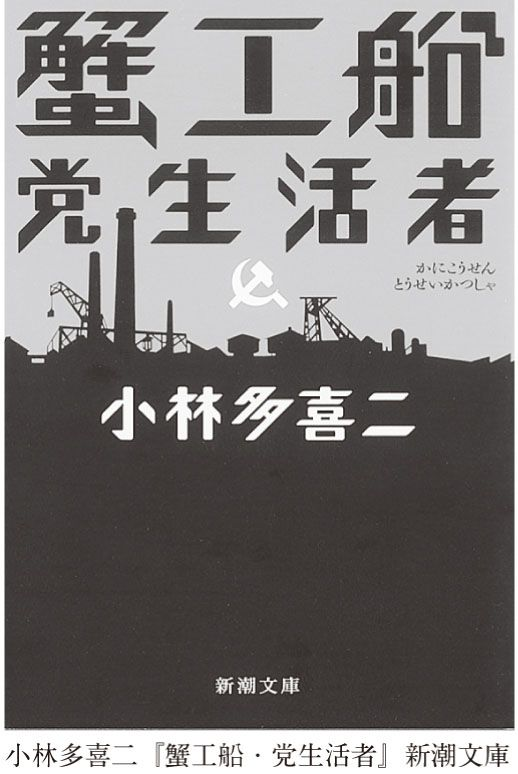
さて、社会の悪と戦おうとする意気込みはよい。けれど、この作品を読んだ人は、同時についていけない気持ちも抱くのではないか。少なくとも私はそうだ。
〈私〉は理想に燃えている。それはそれで美しい。だが、この理想は、時としてあまりに残酷だ。〈私〉は、警察に拷問されてペラペラ喋った同志を愚かだの敗北主義者だの裏切り者だのと呼んで、こき下ろす。なるほど、拷問に耐えられる人間もいるだろう。しかし、人間は弱いものだ。激しい苦痛を我慢できず、口を開く人間がいたとして、どうして非難できよう。
それ以外でも、活動のマイナス要因となる人間は、すべて罵倒される。だが、〈私〉たちを追い回すスパイや警察官も、つまるところ安い月給で雇われている労働者ではないのか。まかり間違えば、臨時工になり得た人間ではないのか。逆に、今は仲間と思える臨時工が、官憲となる可能性はないのか。〈私〉はそうは考えない。
しかも、だ。〈私〉は危機の際に泊めてくれた女に、「いっしょにならないか」と言う。泊めてくれたのをしおに親しくなったし、彼女と結婚ないし同棲することは「非合法の仕事を確実に、永くやって行くためにも、それは都合がよかったのだ」。〈私〉には素直に「彼女に好感を抱いた」と言えない恥ずかしさや照れもあるだろうが、グロテスクさは否めない。東の体制が崩壊したときに、「自分の妻が実はスパイだった」（つまり、愛していたから結婚したのではなく、当局に命じられて情報収集のために自分と結婚していた）というような話まで出てきたが、これも五十歩百歩だ。活動のためには、結婚も手段となってしまうのである。
〈私〉はこの女を徹底的に利用する。おおっぴらに外に顔を出せない〈私〉は女の収入で暮らすが、彼女が「アカ」ではないかと疑いをかけられて会社をクビになると、「カフェの女給になれ」と言う。今で言うなら、ホステスやキャバクラ嬢みたいなものだ。当時の「カフェ」は、男たちがかわいい女給とお話やそれ以上のことを楽しむために行くところだった。堅気の女が働くところではなかったし、堂々と人に話せる職場でもなかった。さすがに女はうろたえるが、〈私〉を愛してしまっているのだろう。体だって売るとやけっぱちを言って、カフェで働くようになる。
女が疲れ切って帰ってくると、〈私〉は「そうした苦労もよりよい社会建設のためだ」などと言って慰めるが、女が理解を示さないと、軽蔑の気持ちを抑えきれない。いくらなんでもひどいじゃないかと私などは思ってしまう。
『党生活者』の〈私〉のモデルは言うまでもなく、作者自身だ。けれども、作者の人生は、『党生活者』のような、希望のあるエンディングを迎えることはできなかった。
警察に捕まった小林多喜二は、残虐な拷問を受けた。それは何かを聞き出すというよりも、殺すための拷問だったらしい。数時間後、小林は死んだ。文字通り、権力によってなぶり殺されたのだ。警察のやり方は徹底的だった。死体を母親に引き渡したが、死因を調べる解剖の邪魔をした（病院も関わり合いになるのを怖がってやりたがらなかった）。そして、葬儀に来た者まで見張って捕まえた。
遺体の写真が残っている。無惨に腫れ上がり、変色している。私たちは、たとえば乱暴な若者たちがホームレスを殴り殺すと、「なんとひどい」と思う。けれど、それは少数の、常軌を逸した者たちが行ったことだ。しかし、この場合は違う。法律にのっとって、国によって行われた暴力である。小林を殺したのは立派な公務員だったのだ。
私はいつも思うのだけれど、本当に残忍な異常者の絶対数は少ない。それよりよほど危険で怖いのは、大勢いる普通の人なのだ。特に異常者でもない普通の人こそが、命令されれば（あるいは命令されなくてもある状況下に置かれると）平気で拷問を行い、殺しを実行するのだ。人は、残酷な少年犯罪者が自分の隣に住んでいないか不安がるが、そういう自分がいざとなれば劣らぬ残虐に手を染める可能性には無頓着である。
小林を拷問した警部たちは、戦後、偉くなった。ある者は警察署長から区長になり、区の教育委員長にもなった。ある者は東京府会議員になった。またある者は勲章をもらった。その是非についてはいろいろな考え方があろう。本書ではその事実だけを報告しておく。
当時、共産党は許されていなかった。もちろん、現在ではそんなことはない。法律というものは、時代によって変わるものだ。完全に有罪であったことが、ある日を境にそうでなくなる。たとえば、少し前には猥褻とされた写真や小説も、現代では何のおとがめもなしに流通している。あるいはその逆も起こる。
とするなら、法律を守ることに、どれほどの価値があるのかと問うこともできよう。少なくとも当時、小林を殺した人たちの行動は合法だった。それに対し、小林の行動は非合法だった。だから、本当は、個別の法律の上に存在するもっと大きな理念、たとえば善といったものを考えなくてはならない。けれど、現実には、人間は小手先の法律で生活している。ソクラテスのように悪法でも法として守らざるを得ない場合がほとんどだろう。いや、正確に言うなら、私たちは悪法をも強制的に守らされている。意図的に法律を遵守しないことも立派な決断ではあるが、罰は覚悟しなければならない。ヴァルター・ベンヤミンという人が言っているが、法律とは暴力であり、野蛮なものなのだ。
それに小林のような人たちが、やがて権力を掌握すると、負けず劣らず残虐な行為を辞さなかったことも考えると、簡単なことは言えない。社会主義や共産主義がどうなってしまったか、ソヴィエトや東欧などの例を見た私たちは知っている。必ずしもそれはバラ色の社会体制ではなく、ある面では、彼らが憎悪する資本主義以上に残虐で非人間的だった。『党生活者』にもそれを予感させる部分がある。
たとえば、〈私〉たちは、工場は工員を金を生み出すための道具としか考えていないと怒る。けれど、〈私〉たちもまた、人間を革命のための道具としか見ていない。活動のためには、いっさいの私生活を放棄すべきだとも言う（だから、この作品は「党生活者」と称しているわけだ）。その点では、工場が非人間的であるのと同じように、〈私〉たちもまた非人間的だった。両者の構造は実は非常に似通っているのだ。こうしたことに〈私〉たちは気づこうとはしない。
でも、だからといって、小林多喜二の行動や作品を嘲笑してはならないだろう。少なくとも彼が希求したのは、よりよい社会なのだから。
国というものが、時にひどいことをしでかすことは、みんな知っている。だが、それでもなお、私たちは「国立」という言葉が付いていたりすると、何か信用に値するものであるかのような錯覚を抱きがちだ。でも、実際はそうでないことを折に触れ思い出すためにも、この小説は読まれていいだろう。
私がこの本を書いている夏、終戦記念日には、戦争で死んだ軍人たちを悼んで、「彼らのおかげで現在の日本の繁栄がある」といった類の言説があちこちで見受けられた。しかし、私はこうした言い方にいつも抵抗を感じる。彼らは、決して今のような日本を作ろうとして何か努力したわけではない。命令されて戦場に行き、死んだだけだ。だから、「彼らのおかげ」という言葉の使い方はまったく論理的でなく、誤用だと思う。彼らの死と日本の繁栄をつなぐ「おかげ」は、あまりにも感情的な言葉の使い方なのだ（トンネル建設現場での事故死者を指して「彼らのおかげでトンネルができた」と言うのとは訳が違う）。もちろん、これは戦争で死んだ人たちが気の毒だとかいうこととは何の関係もない。純粋に言葉の問題として（言葉の問題ということは、認識の問題ということだが）、おかしい。
そんなことを言うなら、小林多喜二のような人たちのおかげで、現在の我々は賃上げを要求できるし、スト権もあるし、労働組合もあるし、長い産休も認められるようになったとまず言うべきである。私はきわめて欲張りかつわがままであって、贅沢も大好きである。とうてい社会主義や共産主義の社会には耐えられない人間であろう。が、公平に見て、社会主義や共産主義にも私たちの生活をよりよくする要素が含まれていたことは認めねばなるまい。
『党生活者』は、理想に燃える若者が書いた一種の青春小説なのだ。だから、もちろん、ここにはいろいろな浅はかさがあり、誤りがある。無意味な熱狂や、愚かな思いこみがある。しかし、もし人間がそのような青春すら持ち得ないとしたら、こんなに悲しいことはない。愚かであることを恐れ、誤りを嫌う風潮がことのほか強い現代において、もう『党生活者』のような小説は書かれないのかもしれない。偏差値が高い今の若者たちの相手をしながら、私はそう考えてみる。
それに、『党生活者』を読むと、状況が今とさして変わらないことに驚かされる。合理化だの軽量化だのアウトソーシングだのと言うと語感がいいが、実際のところ、契約社員やパートなど、倉田工業の臨時工とどこも変わらないのだ。
ともかく、いろいろなことを考えさせる作品であることは間違いない。
本書の最後を閉じるのは、再び岡本かの子の作品である。
「え、どうして？」と思われるかもしれない。本書では、ひとりの作家につき、ひとつずつ作品を紹介している。だから、本当は、『老妓抄』を紹介しなければ、他のすばらしい小説について書ける。事実、他にもぜひ取り上げたいと思う作品はいくつもある。
にもかかわらず、『老妓抄』について述べることにしたのは、この作品が名作だから。かの子の最高傑作と呼ばれるに恥じない見事な文学だから。
けれども、それだけではない。本書では最初に『鮨』を取り上げた。そこで私は、湊という男が、二度と福ずしに来なくなったのは、彼が突然死んだからではないのかということを書いた。髑髏魚などという、縁起の悪い名前の魚を手にしていたし。でなければ、どうして湊はともよという愛らしい女の子に何も告げず、ぷいと姿を消したりするものか。そんなひどい男には絶対に見えないもの。
だが、本当は違うのかもしれない。違うふうに想像できるかもしれない。そういうふうに、新たな展望が開ける。あなたが『老妓抄』を読んだあとで『鮨』に戻ると。
でも、念のために言っておくと、それはもっと悲しい想像だ。湊が死んでしまうより、もっともっと切ない想像だ。人生のやるせなさに直面してしまう想像だ。
が、まずは肝心の『老妓抄』（一九三八）を読もう。
主人公は平出園子という名前の女性である。といっても、この名前は特に重要ではないし、とりたてて本人を表しているようにも思えない。彼女は芸者をしていたから、小そのという呼び名もあるけれど、老妓と呼ぶのが一番よいだろう。彼女の姿には、どことなく寂しさがある。その姿を彷彿とさせる作者の描写は――
人々は真昼の百貨店でよく彼女を見かける。
目立たない洋髪に結び、市楽の着物を堅気風につけ、小女一人連れて、憂鬱な顔をして店内を歩き廻る。恰幅のよい長身に両手をだらりと垂らし、投出して行くような足取りで、一つところを何度も廻り返す。そうかと思うと、紙凧の糸のようにすっとのして行って、思いがけないような遠い売場に佇む。彼女は真昼の寂しさ以外、何も意識していない。
こうやって自分を真昼の寂しさに憩わしている、そのことさえも意識していない。ひょっと目星い品が視野から彼女を呼び覚すと、彼女の青みがかった横長の眼がゆったりと開いて、対象の品物を夢のなかの牡丹のように眺める。唇が娘時代のように捲れ気味に、片隅へ寄ると其処に微笑が泛ぶ。また憂鬱に返る。
（新潮文庫版より引用。以下同）
彼女は、かつては人気が高い芸者だった。頭がよくて、話がおもしろく、その話術は男たちだけでなく、同性たちにも魅力的に思われる。昔の思い出話など始めると、みなはすっかり夢中になってしまうほどである。
もちろん、彼女はいろいろな男性経験をしてきた。囲ってくれる旦那にないしょで恋人とデートして騒動になったり、あれこれの恋愛を通過してきた。
「だがね。おまえさんたち」と小そのは総てを語ったのちにいう、「何人男を代えてもつづまるところ、たった一人の男を求めているに過ぎないのだね。いまこうやって思い出して見て、この男、あの男と部分々々に牽かれるものの残っているところは、その求めている男の一部一部の切れはしなのだよ。だから、どれもこれも一人では永くは続かなかったのさ」
「そして、その求めている男というのは」と若い芸妓たちは訊き返すと
「それがはっきり判れば、苦労なんかしやしないやね」それは初恋の男のようでもあり、また、この先、見つかって来る男かも知れないのだと、彼女は日常生活の場合の憂鬱な美しさを生地で出して云った。
「そこへ行くと、堅気さんの女は羨しいねえ。親がきめてくれる、生涯ひとりの男を持って、何も迷わずに子供を儲けて、その子供の世話になって死んで行く」
彼女は長い間芸者をしたおかげで、そこそこ財産もでき、自由がきくようになった。と同時に、健康的で常識的な生活をしたいと思うようになった。
家には新式の電気製品などを置いている。昔のはよく壊れたから、近所の店の者がよく修理に来ていたが、あるときから柚木という青年が専門に担当するようになった。
なかなか元気がいい青年で、老妓とやりあって負けない。彼女が、柚木の仕事はちゃちで、すぐに壊れると文句を言うと、こんなつまらない仕事ではパッションが起きないと返す。
「パッションて何だい」
「パッションかい。ははは、そうさなあ、君たちの社会の言葉でいうなら、うん、そうだ、いろ気が起らないということだ」
ふと、老妓は自分の生涯に憐みの心が起った。パッションとやらが起らずに、ほとんど生涯勤めて来た座敷の数々、相手の数々が思い泛べられた。
では、どんな仕事ならパッションが起きるのかと老妓が問うと、柚木青年は、発明をして専売特許を取り、金を儲けることだという。そこで、老妓は青年に提案する。食べる、住むの面倒はみるから、思い切ってやってみな、と。柚木は老妓の提供する住まいに引っ越し、発明にいそしむ幸福な生活を始める。
けれどもその幸福は半年ほどしか続かなかった。人にこき使われる生活をしていたときには、自由に発明に打ち込めたらすばらしいだろうと想像していたが、いざそうなると、待っていたのは、ひとりで考えを突き詰めていく単調な生活だった。どだい、発明といっても簡単にはいくはずもない。
しかも、以前は、何かを発明して金持ちになりたいと思ったが、生活の苦労がなくなってみると、それほど金も必要ではないことがわかった。適度に遊ぶくらいでは、使う金はたかが知れている。気づかぬうちに、体もだいぶ肥ってきた。「いくら探してみてもこれ以上の慾が自分に起りそうもない、妙に中和されてしまった自分を発見して柚木は心寒くなった」。
柚木に比べて老妓は若々しく、積極的である。いろいろ新しい稽古事などに精を出している。彼女は、柚木が元気がなくなっていることに気づく。「いいえさ、勉強しろとか、早く成功しろとか、そんなことをいうんじゃないよ。まあ、魚にしたら、いきが悪くなったように思えるんだが、どうかね」。
それにしても、どうして彼女は鷹揚にも若い男をひとり飼っているのだろうか。昔いろいろな男から金を巻き上げた罪滅ぼしだろうか。柚木にはわからない。
ところで、老妓にはみち子という養女がいる。大人の世界を見て育ったので、妙にませている。ちょうど色気づく年齢でもある。この養女がたびたび柚木のもとを訪れる。
老妓はふたりの関係を心配する。
本当に性が合って、心の底から惚れ合うというのなら、それは自分も大賛成なのである。
「けれども、もし、お互いが切れっぱしだけの惚れ合い方で、ただ何かの拍子で出来合うということでもあるなら、そんなことは世間にはいくらもあるし、つまらない。必ずしもみち子を相手取るにも当るまい。私自身も永い一生そんなことばかりで苦労して来た。それなら何度やっても同じことなのだ」
仕事であれ、男女の間柄であれ、混り気のない没頭した一途な姿を見たいと思う。
私はそういうものを身近に見て、素直に死にたいと思う。
こんなことを言う老妓に、柚木は、今時そんな純粋なことはできっこないし、ありもしないと言うと、彼女は笑って、まあじっくり構えてやればいいと答える。
柚木はその晩ふらふらと旅に出た。
老妓の意志はかなり判って来た。それは彼女に出来なかったことを自分にさせようとしているのだ。しかし、彼女が彼女に出来なくて自分にさせようとしていることなぞは、彼女とて自分とて、またいかに運の籤のよきものを抽いた人間とて、現実では出来ない相談のものなのではあるまいか。現実というものは、切れ端は与えるが、全部はいつも眼の前にちらつかせて次々と人間を釣って行くものではなかろうか。
それ以後、柚木は時々、家出のように、突然出奔する癖がついた。そのたびに老妓は探させる。柚木もまた、決して手が届かないところに姿を消すわけではない。外に出ると、楽しい。だが、同時に寂しい。だから、老妓が見つけられるような場所に一時的に行ってしまうだけだ。
今度もまた、柚木が姿を消した。老妓は、心当たりを探すよう人に命じる。
「やっぱり若い者は元気があるね。そうなくちゃ」呟きながら眼がしらにちょっと袖口を当てた。彼女は柚木が逃げる度に、柚木に尊敬の念を持って来た。だがまた彼女は、柚木がもし帰って来なくなったらと想像すると、毎度のことながら取り返しのつかない気がするのである。
そして最後、この老妓の心境を綴った和歌が示されて作品は終わる。
年々にわが悲しみは深くして
いよよ華やぐいのちなりけり
実は、この作品は川端の『眠れる美女』と同じくらい、要約が難しい作品だ。このように紹介すると、一番すばらしい部分が抜け落ちてしまう気がして仕方がない。文章はゆるやかなもので、決して激したりしない。素直そのものだ。取り立てて大事件が起きるわけでもない。だが、その味わいは、すばらしいコーヒーのように苦く、微妙に甘く、酸っぱく、そして香り高い。
老妓は、噓やおべんちゃら、それに裏切りや人間の汚さであふれた世界を生きてきた。お客に愛想よくするのは商売だからで、決して客が好きだからではない。でも、好きでもないのに好きなふりをし、相手の気持ちに合わせる仕事をしてきた。
時たま、すてきな男性と出会うと、恋愛めいたこともした。しかし、自分はもう芸者になってしまっており、堅気の女のような生活が送れるわけでもない。
そういう彼女が憧れてやまないのは、純粋な何かである。一途な何かである。仕事でも恋でもいい。自分がしたいことを熱中してやり切ることである。そういうものを見ながら死にたいと思う。
だから、老妓は元気のよさそうな、野心ある若者の面倒を見てやることにした。けれど、衣食住が足りると、若者はすっかり元気をなくした。それまでは、発明に集中できたらどんなにかすばらしいだろうと思っていたのに、そうなってみたら、やる気を失った。かえって、人にこきつかわれた時代を懐かしく思い出した。
老妓と柚木、このふたりに共通するのは、自分が持たないものに対する強い憧れである。自分が決して持ち得なかったもの、自分がかつて持っていたもの、自分がまだ持っていないもの、いずれにしても、自分の手の中にないものが光り輝いて見える。ただ違うのは、柚木は若いくせにおとなしくなり、諦念めいたものを持ってしまったが、老妓はまだまだ枯れ足りず、何かを追い求めてやまないということだ。
この物語の最初のほうで、すでに老妓は言っている。今までいろいろな男とつき合ったけれど、結局、どの男も部分部分で満足させてくれるだけだった。たったひとりの完璧な男が欲しかったのに、それは見つからなかった、と。何百人、もしかすると何千人の男を老妓は見てきただろう。が、理想の男は誰もいなかった。今後も老妓が理想の男と出会う可能性は、まずあるまい。また、彼女自身が純粋で一途な人生を送ることももはやあり得ない。だからこそ、非常な痛みを感じつつ、彼女はそれらに憧れる。別の人間にそれを託し、せめて見るだけでいいとまで思う。
人生とは、人間とは、決して満たされないものである。このふたりはそう言っているのだ。人生はさすらいである。自分を満たしてくれるものを探してさすらい続けるしかない。どうしたらいいかわからないが、とにかくさすらうしかない。たぶん自分を満たしてくれるものなど存在しないのではないか、そういう不安や恐怖や絶望に震えつつ、それでもさまようしかない。
さまようほどに悲しみは深くなる。だが、生命の炎は弱まらない。いっそうの不満に身を焦がしつつ、何かを求め続けていくしかない。死とは、満足することでなくて、この永遠のさまよいの途絶でしかないだろう。
話を『鮨』に戻そう。
この『老妓抄』を読んだあとで『鮨』を再読すると、湊もまた、老妓と同じ種類の人間であることがはっきりわかるはずだ。
つまり、彼もまた、絶対に手に入らないことがわかっているものを求めてさまよう人間なのである。
彼がすしを食べるのは、それが子供時代を思い起こさせる、懐かしいものだからだ。彼は母親が作ってくれたすしを懐かしんでいるのだ。老齢にさしかかった今、それを再び食べたいと切に願っているのだ。
だが、もはや母親は生きていない。母親が作ったすしは彼の記憶の中にしかない。今、この世にそっくりのものがあるわけがない。味の問題ではないだろう。それは母が手ずから作ってくれるものでなければならないだろう。
母のすしは二度と食べられない。そんなことを湊が知らない訳がない。にもかかわらず、彼が探しているのは、母のすしなのだ。探さないではいられないのだ。
だから――
私は思う。湊は、おそらく、よそのすし屋に行ったのである。母親のすしを探して。そんなものが存在しないことはわかりきっているのに。
湊は引っ越したのである。自分の子供時代を探して。子供時代に帰れないことはわかりきっているのに。
母親のすしは二度と食べられない。過去は戻ってこない。湊がそれでも母親のすしを食べたいと思う切なさ。その切なさは、彼が生きている限り、消えることはない。
こういうふうに作品を読んだとき、『鮨』はいっそう悲しくなる。深みを増す。人間がこの世に存在している以上絶対に避けられない悲しみに到達する。すなわち、あらゆるものは過ぎ去るということ。
『鮨』の最後はこうであった。
此頃では、ともよは湊を思い出す度に
「先生は、何処かへ越して、また何処かの鮨屋へ行ってらっしゃるのだろう――鮨屋は何処にでもあるんだもの――」
と漠然と考えるに過ぎなくなった。
そう、実はこのともよの推測は正しい。湊は、もう二度と戻ってこない子供時代を探して、どこかへ越した。そして、母のすしを食べたくて、どこかのすし屋へ行っていることだろう。どこにでもあるすし屋へ、だが、決して存在しない母のすしを求めて。
そして、こう考えたともよもまた、幾とせか過ぎた頃、たったひとりの理想の男、もしかしたら初恋の男を探してさまようことになるのかもしれない。もちろん、初恋の男も、初恋自体も、二度と見つかることはあり得ないのであるが。湊がひっそりと消えてしまったように。
小説を読むというのは、人間の悲しさに触れることだ。一見喜劇的で滑稽に見える文学だって、その底には悲しげな何かがある。モーツァルトの「悲しくない音楽はない」という言葉は有名だが、すぐれた文学も例外なく悲しいものなのかもしれない。
人間が何を好きこのんで悲しいものを求めるのか、私にはわからない。けれど、はっきりしているのは、悲しい小説、悲しい映画、悲しい音楽、そんなものを人間は求めてやまないということ。悲しいものには、人間の心を清める作用があると、昔のギリシア人が言っている。けれど、それだけではあるまい。たぶん、悲しい芸術は人間を慰めることができるのだ。
本書は『憂国』だけに辛く当たっている。その理由は、ここにもある。本書に登場する他の作品はすべて悲しい。滑稽に見えても悲しい。悲しさを書かないではいられない作家の姿も悲しい。だが、『憂国』は全然悲しくない。男女の自死は、これ以上はない至福として、完璧な人生として描かれている。作者が自分にとっての至福を書こうとしたのだから当然と言えば当然なのだが、「それは幼稚な噓だ」と私は思うのだ。言葉というものは不思議なもので、幸福を描くのは思いのほか得意でない。不幸を描くほうが説得力があるのだ。どういうわけだか。
だから、実は本書の書名は『悲しき日本文学』でもよいのかもしれないが、それでは、本来ターゲットとしている人たちにあまり読んでもらえそうにない。最初は、「日本の作家って、大なり小なりヘンタイなんじゃないの」というコンセプトの一冊にしようと思っていた。タイトルもいろいろ考えていた。『日本文学ヘンタイ論』とか『実はヘンタイ日本の作家』とか。本書の中でも触れたけれど、川端も三島も谷崎も、みんな立派なヘンタイ君である（これ、海外の大作家と読み比べるとよーくわかる）。際立つヘンタイ性は、日本文学の最大の特徴かもしれないのだ。でも、その書き方だとなかなか筆が進まなかった。おかしいなあ、と不審に思っていた。だって、そういうやり方で授業はやっていたのに。
あるとき、はたと気づいた。そうか、授業だと、受講者の顔が目の前にある。反応を見ながら、話せる。だけど、やっぱり話す芸と書く芸は違うのだ。書くのなら違った書き方をしないと。それで、本書のコンセプトになった。
文学の本を書きたかったのには理由がある。文学ってかわいそうなジャンルだと思うからだ。文壇というやつがある。一握りの作家と評論家とジャーナリズム。あと、少数の読者。全部合わせても日本中で一万人もいないだろう（これって、日本人の一万人にひとりもいないということだ）。でも、彼らだけが本を読み、小説を読むわけではない。おもしろい本、すばらしい本を読みたいと思っているすごくたくさんの人たちがいる。村上春樹の本なんて、数百万部が売れるほどだ。この両極端によって、日本の文学は成り立っている。
文壇系の人たちは、一般の人なんか相手にしていないだろう。そういう人にもわかるように評論を書こうとも思っていないだろう。一般の人は、文壇系の人の評論など難しくて訳がわからなくて、はなから読みたいとは思わないだろう。不幸なことだ。これでは、せっかくの名作なのに売れない本と、バカ売れする本のどっちしか生まれない。
私自身は、いろんな人の文芸評論を読むのが好きだ。だけど、なかなかそれを他人に勧められない。文学を専門としている人以外にはちんぷんかんぷんだろうし。それって、道路の上には、標識の読み方も曖昧な初心者ドライバーと、プロのレーサーしかいないようなものだ。お互い、「意味もなく飛ばしやがって」「このへたくそが」と迷惑がっている。近寄らないのが安全とばかり、避けあっている。
固い人文系の本の読み方をじっくり教えない大学、いやそれに先立つ高校も悪いとは思うが、日本の学校なんて、しょせん産業や金儲けで生きる国家の手先みたいなものなのだから、仕方がないとも言える。就職とか出世とか目先の利益しか考えないのは、若い人も親も同じだから、同罪だろう。すぐに金儲けにつながらない文学、ひとつの答が出ない小説や詩はますます窓際に押しやられる。
文学の本当にいいところは、当たり前になっていること、すっかり鈍感になっていることについて、あらためて感づかせること、思い出させることだ。でも、そういう経験をしたことと、いわゆる人生の成功者になれるかどうかは、おそらくたたけば音がするような直接的関係にはない。ただ、そういう経験がない人ばかりでは、人類はやっていけないだろう。
乱暴だが、こう言ってしまおうか。多くの作家たちが、それこそ命がけで小説を書いたのだ。人間が命がけでやったことである。それなりの重みがあるだろう。価値があるだろう。それを、数百円で追体験できる。しなくては損ではないか。
「文学をテーマにした本をやりましょうよ！」とは、『世界最高のクラシック』や『生きていくためのクラシック』を書いていたときから、編集の森岡純一さんと何度も言っていて、幾度となく酒も飲んだのに、なかなか進まなかった。近頃、音楽の本ばかり書いていたせいもあるかもしれない。ともかく、書き終わることができて大満足している。書いてみたら、文学理論とか文学史とか難しい話、ややこしい話をいっさいしなくてもすんだので、嬉しかった。しなくてすむほど、作品が十分おもしろかったということだ。
日本文学の一番おいしいところを取り上げられたと思うが、漏れてしまった名作もいろいろある（一例を挙げれば、長編になるが、島崎藤村『破戒』の衝撃的エンディング！ これには啞然とすること間違いなし）。外国文学もごっそり残っている。いつか続編を出せたら嬉しい。
許光俊（きょみつとし）
1965年東京都生まれ。慶應義塾大学で美学、東京都立大学でドイツ文学を学ぶ。現在慶應義塾大学法学部教授。著書に『世界最高のクラシック』『生きていくためのクラシック』（以上、光文社新書）、『オレのクラシック』『絶対！ クラシックのキモ』『オペラに連れてって！ 完全版』『邪悪な文学誌』（以上、青弓社）、『クラシックＢ級快楽読本』（洋泉社、共著）ほか多数。
世界最高の日本文学 こんなにすごい小説があった
2005年10月20日初版１刷発行
2013年４月30日電子書籍版発行
著 者─許光俊
発行者─丸山弘順
装 幀─アラン・チャン
発行所─株式会社光文社
東京都文京区音羽１‐16‐６（〒112‐8011）
電 話─編集部 03（5395）8289
メール─sinsyo@kobunsha.com
®本書の全部または一部を無断で複写複製（コピー）することは、著作権法上での例外を除き、禁じられています。
©Mitsutoshi Kyo 2005